A330电子飞行包系统技术方案与操作说明书
第二版 · 系统设计与操作使用 · 2026-10-04
文件定位与版本基线
本书描述以 Headwind A339X 为机型基础、以 FlyByWire flyPadOS 3 为共享界面基础的本地电子飞行包软件。内容包括现有实现、设计理由、接口数据、计算机制和实际操作。标明“扩展设计”的内容属于后续接口方案，不代表已经连接外部后端。
本书可作为投标技术附件的参考正文。项目名称暂用本书标题，未填入未提供的投标单位、资质、服务承诺或特定招标评分结论。实际商务主体和项目条款应采用真实资料。
当前软件为浏览器开发运行模式，核心航班流程不使用 SimBrief。性能模块的资料与能力边界在相应章节明确说明。
| 基线项目 | 标识 | 定位 |
|---|---|---|
| Headwind | 41eace79…5cb | 完整值见资料索引 |
| FlyByWire | 1bf4b8ed…582 | 完整值见资料索引 |
| 参考资料 / 内核 | 1.0.0 / 1.0.0 | 本地 V2 参考模块 |
| 正文结构 | 220 页设计 + 60 页操作 | 另有前置与附录各 10 页 |
技术方案摘要
系统以原生 EFB 页面为操作载体，用本地 Flight 统一航班、载荷、燃油、跑道和天气输入。确认动作把同一计划投影到仪表盘、签派资料和地面目标，使页面之间能够围绕同一航班工作。JSON 文件与报告提供可独立保存的输入及结果。
本地计算采用独立 TypeScript 函数，质量派生、输入校验与速度表插值分开组织。结果保存输入快照与资料版本，输入或地面目标改变时停止旧结果的当前出口。该结构将算术、状态和界面职责分离，便于分析与替换。
宿主适配保留原生模块结构，通过浏览器 API 实现开发运行。真实飞机系统、外部资料服务和其他仿真后端具有独立连接边界。
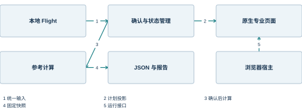
| 设计重点 | 具体机制 | 带来的作用 |
|---|---|---|
| 输入一致 | 集中 Flight 与 weights | 减少页面重复真值 |
| 结果追溯 | 快照、版本和签名 | 解释当前性 |
| 界面复用 | 原生模块加局部扩展 | 保留现有功能结构 |
| 本地运行 | 静态产物与宿主适配 | 无需飞行会话即可演示 |
系统能力与实现状态
本地航班、文件交换、重量核对、有限 V2 参考、历史和报告构成当前核心闭环。原生检查单、下降工具、着陆页面和设置提供更完整的 EFB 操作环境。外部资料页面保持其实际连接或未配置状态。
功能可见、代码可运行和航空资料已校准是不同结论。本书分别说明这些层次，使技术评审能够据明确结构和证据判断范围。未来连接真实后端时，优先对齐状态快照、命令回执、单位和会话身份。
| 能力域 | 当前状态 | 说明章节 |
|---|---|---|
| 本地航班与文件 | 已实现 | 7、19 |
| 载荷、燃油及地面界面 | 已运行，宿主为演示 | 9、20 |
| V2 源码表参考 | 已实现，资料未独立校准 | 10、21 |
| TOD / 着陆 | 原生算法与页面 | 11、21 |
| 真实后端快照及命令 | 扩展设计 | 5、16 |
| 外部授权航图 | 未实联 | 12、22 |
阅读路径与图文约定
评审总体方案可先阅读第 1～6 章，了解系统边界、架构、数据和接口，再按专业关注点进入第 7～15 章。开发人员可以结合第 16～17 章理解结果一致性、宿主和构建机制。使用者可直接从第 18 章开始操作。
第 18～22 章的图像均来自本地程序实际运行。局部放大图只裁取原画面中的相关区域，不重绘或替换控件。截图中的航班、日期和油量属于当时的演示场景，正文在需要复算时列出具体输入。
各节页脚使用方括号资料编号，完整对应关系见附录。源码结构分析优先采用固定提交和本地实现，网络文档用于解释原生模块背景。
| 标记 | 含义 | 阅读方式 |
|---|---|---|
| 扩展设计 | 未实联的接口方案 | 区分现有实现 |
| 本节依据 [编号] | 资料及源码来源 | 查附录索引 |
| 局部放大 | 真实画面裁取 | 用于识别控件 |
| reference-only | 源码表参考状态 | 结合模型范围理解 |
1 系统概述
1.1 系统定位与应用范围
电子飞行包的业务定位
本系统以 A330-941 为机型对象，把航班计划、载荷燃油、性能辅助计算、运行资料和检查单组织在同一平板界面中。航班是业务组织单元：用户先建立航班，再填写载荷和环境条件，随后在不同页面使用同一组已确认的计划数据。系统由此减少跨页面重复输入，并使计算结果能够追溯到产生它的输入。
系统界面沿用 Headwind A339X 的 flyPad 结构。左侧工具栏选择业务域，页面上方的标签选择该业务域内的功能；状态栏承载时间、连接、电量和快捷控制。新增的本地航班工作台及离线参考计算位于原有签派、性能模块内，因此用户不必在两个彼此独立的软件间切换。
本地交付采用浏览器运行形态，适用于软件开发、技术演示和模拟训练软件的功能研究。当前输入以手工资料、JSON 文件及本地宿主样例为主。真实飞机状态、机场权威数据和商业航图属于其他数据域，通过相应适配接口进入系统。
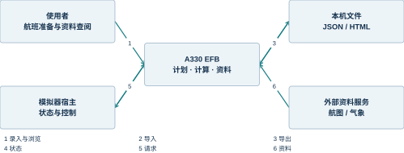
| 业务对象 | 系统处理 | 使用结果 |
|---|---|---|
| 航班计划 | 建立统一输入快照 | 航班摘要与签派资料 |
| 载荷燃油 | 质量汇总与目标映射 | ZFW、TOW 和地面目标 |
| 性能辅助 | 计算器调用与结果管理 | 参考速度、TOD、着陆显示 |
| 运行资料 | 分类浏览与状态保存 | 航图、检查单与设置 |
业务边界与系统责任
系统中同时存在计划、目标和当前状态。计划表示用户准备执行的航班；目标表示用户希望宿主达到的装载或设备状态；当前状态表示宿主最近一次提供的观测。三者有时数值相同，但其含义和生命周期不同。例如，停机坪计划油量为 30000 kg，并不意味着正在连接的飞机已经具有该油量。
EFB 负责收集输入、执行本地规则、显示计算结果及组织操作入口。模拟器负责飞机运动、电气、燃油输送和地面设备的物理过程。性能资料包负责提供与机型、发动机及版本相匹配的数据。把这些责任分开后，界面更换宿主不需要重写航班文件格式，性能资料更新也不需要改变工具栏结构。
当前浏览器宿主提供变量读写和事件接口的开发替身，其作用是让原生页面可以运行。该替身没有实现飞机物理模型。设计说明中的“指令发送”“状态刷新”分别描述软件交互，不自动延伸为真实加油、推回或故障效果。
| 层次 | 承担的责任 | 典型内容 |
|---|---|---|
| 界面层 | 组织输入、导航及反馈 | 航班表单、状态栏、结果卡片 |
| 领域层 | 计算及业务状态转换 | 重量公式、确认签名、参考插值 |
| 数据层 | 记录计划、结果及版本 | Flight、Result、机型资料包 |
| 宿主适配层 | 转换读写与事件语义 | SimVar、Coherent、更新事件 |
| 模拟器 | 提供实际系统和物理过程 | 油箱状态、位置、舱门和电源 |
| 外部资料 | 提供有来源的内容 | 天气、机场、航图及账户授权 |
运行形态及其适用边界
同一套 EFB 前端可以部署在模拟器仪表 WebView 中，也可以部署在普通浏览器中。两者共享页面和业务逻辑，差异集中在宿主 API、资源路径和数据来源。浏览器版通过本机静态服务提供页面、字体及机型配置；MSFS 环境由模拟器装载仪表并注入运行接口。
本机版本的核心航班流程不依赖 SimBrief。原生 Store 中仍有名为 simbrief 的兼容切片，但该名称描述历史数据结构，不能据此判断数据来自在线服务。本地确认动作把手工计划转换到该结构，使仪表盘、OFP、燃油和载重页面继续使用既有组件。
扩展到其他机型时，首先变化的是资料包与宿主映射。A330-941 使用的质量上限、座位布局、发动机标识和速度表不能被当作 A330 系列全部型号的公共参数。软件框架可以复用，机型数据和计算适用范围必须保留独立身份。
| 项目 | 本地浏览器形态 | 模拟器仪表形态 |
|---|---|---|
| 页面装载 | 127.0.0.1 静态 HTTP 服务 | 模拟器仪表资源系统 |
| 变量来源 | 本机 Map 及样例值 | 模拟器变量与机载系统 |
| 持久化 | 当前浏览器站点存储 | 模拟器数据存储接口 |
| 地面操作 | 目标和请求交互 | 由宿主驱动实际过程 |
| 核心航班输入 | 手工与 JSON 文件 | 可沿用同一领域模型 |
| 外部后端 | 尚未连接 | 取决于已集成宿主 |
参考：[HW] Headwind A339X 固定源码；[FBW] FlyByWire 共享组件固定源码；[L-F] 本地航班及计算领域模型；[L-S] 本地状态、原生映射与报告；[L-H] 浏览器宿主及静态服务
1.2 功能结构与典型业务场景
功能域的组织方式
系统功能按业务对象划分，而不按底层库或通信协议划分。用户看到的签派、地面和性能是稳定的业务入口；React、Redux、SimVar 等技术名词留在实现内部。一个业务域可以使用多个技术服务，一个技术服务也可以为多个业务域共享。
签派域管理本地航班及其可读资料。地面域管理燃油、载重、设备与推回。性能域包含本地起飞参考、下降顶点和着陆计算。资料域包括航图与在线管制信息；程序域包括检查单、故障、预设和系统设置。各域通过共享航班和宿主数据建立联系，不通过复制整套表单保持一致。
仪表盘是聚合视图。它显示已确认航班、天气、固定航图和检查单入口，但不承担全部数据编辑。聚合页面保持简洁，完整编辑在专门工作台进行，减少一个页面同时出现过多录入规则和计算规则的情况。
| 功能域 | 主要输入 | 主要输出 |
|---|---|---|
| 签派 | 航班、载荷、燃油 | 确认计划与 OFP |
| 地面 | 已确认计划、宿主状态 | 目标值及请求状态 |
| 性能 | 重量、跑道、天气、构型 | 计算结果和解释信息 |
| 程序资料 | 配置、资料服务、用户勾选 | 可浏览资料及执行状态 |
从航班准备到结果归档
一次本地航班准备从工作台开始。用户输入机场、日期、人数和质量后，界面立即显示载荷、ZFW 与 TOW；这些数值是草稿的派生值，不代表计划已经确认。保存确认使当前输入形成稳定的确认签名，并同步到原生页面。
进入起飞参考页后，用户补充跑道、风、气温、气压与构型。计算器先判断数据是否合法，再判断是否在资料包支持范围内，最后生成包含输入快照和版本号的结果对象。界面显示的数值与报告使用同一对象，避免“屏幕是一版、导出又算一版”的差异。
归档保存的是当时的结果及输入。恢复历史时只恢复输入，不把历史结果直接当作当前有效结果。原因是资料包、输入或地面目标可能已变化；重新确认与计算让当前结果重新建立可解释的来源关系。
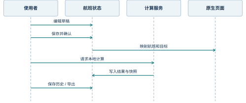
| 阶段 | 数据状态 | 用户可见反馈 |
|---|---|---|
| 编辑 | 草稿变化，确认签名清空 | 重量卡片更新 |
| 确认 | 签名与当前输入一致 | 确认成功提示 |
| 计算 | 结果带输入与版本 | 参考结果或原因说明 |
| 归档 | 本机历史新增一条 | 最多保留 20 条 |
| 恢复 | 重新形成草稿 | 需要重新确认与计算 |
离线与外部资料并存的场景
离线能力来自明确的数据依赖。航班表单、重量公式、已随包部署的速度参考表和检查单配置可以在本机处理；商业航图、网络管制信息和在线天气则需要相应服务。系统把两类能力分开组织，因此资料服务不可达时，航班编辑和本地计算仍可继续。
外部资料页面的空态具有业务含义。未登录、没有订阅、没有固定航图和服务不可用是不同状态，界面不应以同一个空白区域表示全部情况。原生页面具备哪些状态显示取决于对应模块；本地使用说明按实际画面解释这些状态。
网络恢复后，外部资料可以重新获取，而已经保存的本地航班不会因此被自动替换。数据更新的主动权仍在当前业务流程中：在线天气或机场资料作为输入来源时，需要保持来源、时间及单位，不能只把一个新数值写进现有计算结果。
| 使用场景 | 可在本地完成 | 需要外部条件 |
|---|---|---|
| 无账号航班准备 | 手工录入、重量核算、文件往返 | 无 |
| 本地性能研究 | V2 表插值及辅助量 | 已部署资料包 |
| 程序练习 | 查看与手动勾选检查单 | 配置已装载 |
| 航图查阅 | 浏览页面与已有状态 | 航图服务、账户或本地资料服务 |
| 在线管制信息 | 打开对应页面 | 网络数据源 |
| 飞机系统联动 | 显示请求及目标 | 真实模拟器状态接口 |
参考：[EFB] EfbWrapper、Efb 与共享 Store；[L-F] 本地航班及计算领域模型；[L-S] 本地状态、原生映射与报告；[PAD] FlyByWire flyPadOS 3 总览
1.3 设计原则与技术基线
围绕数据来源组织职责
本系统采用“一个业务事实，一个明确所有者”的数据组织原则。航班输入由本地航班模型拥有，性能结果由计算器生成，实际飞机状态由宿主提供，界面偏好由持久化设置管理。其他模块使用投影视图，而不是建立另一个可独立修改的副本。
这一原则体现在确认与映射的关系中。工作台先形成完整 Flight，确认成功后由 applyToEfb 生成原生兼容数据。原生仪表盘读取映射结果，但不会反过来变成第二个航班主记录。燃油目标的反向读取也通过明确动作进行，使用户可以区分“计划变了”与“宿主状态更新了”。
数据边界还决定错误的处理位置。输入格式错误在表单或文件解析处报告；超出模型范围在计算器入口报告；宿主不可达在适配层报告；资料服务未授权在资料页面报告。把所有错误都交给全局异常页面会丢失业务语义，也会使本来可以继续的功能被一并中断。
| 事实 | 所有者 | 其他模块的使用方式 |
|---|---|---|
| 航班输入 | 本地领域状态 | 读取或经编辑动作修改 |
| 派生质量 | weights 函数 | 按当前输入重新计算 |
| 计算结果 | calculate 返回值 | 只读显示、归档、导出 |
| 实际状态 | 宿主 | 采样后显示 |
| 用户偏好 | 设置存储 | 读取并应用 |
模块化与可替换性
界面层与计算层之间使用普通数据对象连接。计算函数不依赖 React 组件、DOM 元素或浏览器控件，输入和输出可序列化。这使相同计算既能服务屏幕，也能服务文件报告，并便于在不启动界面的情况下分析算法行为。
机型差异通过配置和上下文注入。原生 AircraftContext 提供计算器与设置能力，UniversalConfigProvider 装载机型、客舱和平板配置。本地参考计算使用独立资料包，资料包包含机型身份、重量范围、表格、版本和不支持的能力。框架与资料由此具有不同的变更频率。
宿主替换采用适配层策略。浏览器版模拟必要的 SimVar、Coherent 和更新事件；后续真实后端可以提供相同职责的实现。替换的对象是数据与命令的连接方式，而不是把一套页面复制为另一套页面。扩展接口的具体设计见第 5 章。
| 可替换对象 | 稳定接口 | 变化内容 |
|---|---|---|
| 性能资料包 | Flight 与 Result 的语义 | 表格、限制、配置身份 |
| 宿主实现 | 读变量、写目标、订阅事件 | MSFS、本地开发或其他后端 |
| 资料服务 | 机场、天气、航图领域对象 | 提供商与认证机制 |
| 持久化实现 | 读取、保存、迁移 | 浏览器存储或后端数据库 |
| 界面组件 | 页面输入输出与状态动作 | 布局、语言、交互样式 |
版本基线与实现范围
本书的源码分析固定在 Headwind 提交 41eace79ed442696a6361dc72947954c9a6cf5cb 及其 FlyByWire 子模块提交 1bf4b8edccf84d0fb83d0eb15e42f2c773e09582。固定提交用于解释模块关系和实现细节；在线产品文档用于理解功能概念，其更新节奏与源码基线不同。
本地扩展包含航班编辑、JSON 文件、重量确认、参考计算、历史和 HTML 报告。启动修订增加了浏览器自动开机及休眠唤醒提示。原生 A339X 入口仍未启用完整起飞性能计算器；本地标签提供的是独立参考服务，二者在架构上保持区分。
本书以运行基线为主要说明对象。针对跨设备存储、真实后端会话和命令回执提出的接口，明确归入扩展设计。这样既能描述可演示系统，又能给后续工程提供清晰的连接方式，而不把设计目标写成已经部署的功能。
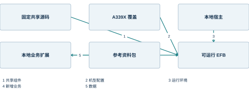
| 构成 | 版本或位置 | 说明 |
|---|---|---|
| Headwind | 41eace79… | A339X 机型覆盖 |
| FlyByWire | 1bf4b8ed… | 共享 EFB 与 SDK |
| 本地资料包 | profileVersion 1.0.0 | A330-941 / Trent 7000 |
| 本地计算内核 | engineVersion 1.0.0 | 参考算术与范围检查 |
| 运行宿主 | browser-development | 本机变量及事件适配 |
| 真实后端 | 扩展接口设计 | 本交付尚未连接 |
技术说明与使用说明的阅读关系
总体设计回答系统由什么组成以及模块怎样协作。详细设计把业务职责落实到对象、函数、页面和数据字段。关键技术解释容易产生隐蔽错误的机制，例如单位归一化、确认签名、异步回读和缓存失效。操作说明则从使用者可以看到的界面出发，不要求读者先理解内部类名。
同一个对象在不同部分具有不同描述粒度。例如，Flight 在数据架构中是一个聚合，在本地航班章节中是编辑和确认的输入，在操作章节中则表现为航班号、机场、旅客和燃油字段。编号和图注把这些描述连接起来，避免操作章节重复整段实现分析。
公式中的数值示例取自本地人工样例。凡涉及速度或着陆距离，本书说明的是源码算法及软件输出，适用范围在对应算法章集中说明。参数、单位、表格来源与输出性质始终成组出现，防止示例脱离上下文后被误读。
| 读者问题 | 主要章节 | 辅助材料 |
|---|---|---|
| 系统怎样组成 | 第 2 至 6 章 | 架构图与部署图 |
| 某功能怎样实现 | 第 7 至 15 章 | 对象、接口与状态图 |
| 结果为何失效 | 第 10、16 章 | 签名与状态转换 |
| 软件怎样操作 | 第 18 至 22 章 | 实际程序截图 |
| 字段如何交换 | 第 4、5 章及附录 | 数据字典与 JSON 示例 |
参考：[HW] Headwind A339X 固定源码；[FBW] FlyByWire 共享组件固定源码；[L-B] 源码叠加及本地集成；[L-D] A339 参考资料包
2 系统总体架构
2.1 逻辑分层与组件职责
五层逻辑结构
系统逻辑上分为呈现、应用、领域、适配和基础资源五层。呈现层负责页面与控件；应用层把用户动作组织为编辑、确认、计算、归档等用例；领域层定义数据与规则；适配层连接原生 Store、宿主及资料服务；基础资源层提供文件、浏览器存储和静态资源。
分层是职责划分，不意味着每层都必须是独立进程。当前浏览器版的大多数逻辑运行在同一个 JavaScript 上下文中，静态服务只分发文件。采用逻辑分层仍有价值：计算不需要知道按钮颜色，文件解析不需要知道模拟器变量名称，页面不需要逐一处理油箱体积转换。
依赖方向从界面向稳定的领域模型收敛。领域函数返回结构化值和错误集合，页面将其转换为文字和样式。适配层是外部语义进入系统的位置，也是单位、类型和来源转换的主要位置。
组件职责分配
本地扩展以四个文件组形成一个较小的垂直业务切片。flight.ts 承担数据类型、校验、质量关系、插值和单位转换；state.ts 承担状态发布、确认、结果有效性、原生映射与报告；LocalPages.tsx 承担页面与用户动作；资料 JSON 提供与代码版本分离的常量。
原生模块仍保留各自的 Store 切片和宿主访问逻辑。本地扩展没有把所有原生状态搬入一个新的 Store，而是通过明确的映射接入。这降低了对上游组件的改动量，同时留下一个需要说明的边界：原生页面拥有一些临时状态，本地 Flight 不覆盖这些状态的全部生命周期。
组件间传递业务对象或状态动作，不传递页面 DOM。报告模块从 Result 读取数据，不能从某个文本框中反向抓取“当前结果”。由此，报告的正确性与页面布局调整解耦。
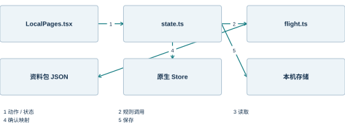
| 组件 | 输入 | 输出或副作用 |
|---|---|---|
| flight.ts | Flight、Profile | 错误集合、质量、Result |
| state.ts | 编辑与确认等动作 | 本地 State、持久化与映射 |
| LocalPages.tsx | State、用户输入 | 调用应用动作并渲染反馈 |
| a339-reference.json | 固定资料内容 | 机型身份、范围、表格 |
| 原生 Store | 映射动作与宿主值 | 页面共享状态 |
| simulator-shim.ts | 变量读写、事件注册 | 开发宿主行为 |
| server.cjs | HTTP 文件请求 | 页面、脚本、字体及配置 |
为什么保留原生组件
Headwind 与 FlyByWire 已提供成熟的导航结构、机型设置、检查单组件、燃油与载重界面。保留这些组件使本地系统继承一致的视觉和操作习惯，也避免为一项离线航班功能重新实现整套平板界面。
复用不等于直接把所有机型功能打开。共享库中可以存在其他机型的计算器或页面，A339X 的入口上下文决定实际启用内容。例如，A339X 使用自身着陆计算器，而原生完整起飞计算器入口为空。新参考计算以独立路由加入，保持其数据来源和能力范围可辨认。
这种组合设计的代价是需要一个明确的兼容层。原生代码采用既有字段命名和数据形状，本地领域模型采用更直接的数字与单位。兼容层承担转换，而不是要求全部新代码沿用历史命名。
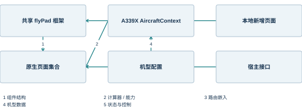
| 设计选择 | 带来的作用 | 需要保持的边界 |
|---|---|---|
| 复用导航与控件 | 一致的操作方式 | 新增入口保持原生结构 |
| 复用原生 Store | 仪表盘及地面页面可继续工作 | 确认时整体映射 |
| 独立本地领域模型 | 规则不受旧字段格式牵制 | 兼容层转换数字与字符串 |
| 独立资料包 | 数据与界面分别更新 | 版本参与结果身份 |
| 宿主适配 | 普通浏览器可运行 | 样例状态与真实状态分开 |
组件边界中的失败隔离
失败隔离围绕业务依赖展开。外部航图加载失败只影响航图内容；航班 JSON 校验失败保留当前航班；当前参考计算不受支持时保留输入和原因；静态资源启动失败则属于整个应用无法装载的情况。不同失败的影响面因此不同。
页面级错误提示用于可恢复的业务问题。全局错误边界用于组件渲染异常，启动入口的错误面板用于模块装载异常。把业务拒绝与程序异常区分开，既能保留用户工作，也能让维护者定位到正确层次。
当前实现中，本地存储失败会形成 storageError 并提示导出文件；文件解析失败不会部分写入 Flight。后续资料服务增加缓存时，同样需要保留“内容存在”和“内容当前可用”两个判断，不能因为缓存中有对象就隐去错误来源。
| 失败位置 | 保留内容 | 用户反馈 |
|---|---|---|
| JSON 解析 | 当前航班完整状态 | 格式或字段错误 |
| 输入校验 | 当前草稿 | 字段原因 |
| 计算范围 | 输入与辅助结果 | unsupported 及原因 |
| 持久化 | 内存中的当前状态 | 保存失败提示 |
| 外部服务 | 本地业务能力 | 连接或账户状态 |
| 入口模块 | 本机文件和保存数据 | 启动失败文字 |
参考：[L-F] 本地航班及计算领域模型；[L-S] 本地状态、原生映射与报告；[L-U] 本地业务页面实现；[EFB] EfbWrapper、Efb 与共享 Store；[L-H] 浏览器宿主及静态服务
2.2 运行组件与依赖装配
从静态入口到原生平板
浏览器首先装载 index.html 和 Vite 生成的模块入口。bootstrap.ts 建立逻辑画布、状态提示和窗口缩放，然后装载宿主替身及原生 EFB 入口。宿主接口必须先于原生模块存在，因为导入阶段就可能读取全局类型或注册事件。
原生入口创建 AircraftContext，提供 A339X 着陆计算器、设置能力和机型参数，再渲染 EfbWrapper。包装组件装载机型、客舱和平板配置以及检查单。Provider 将共享 Store 注入组件树，MemoryRouter 管理页面层次。
浏览器启动通过 AceInitialized 事件触发本地 render 适配器。随后 Efb 进入约 2.5 秒的原生加载状态，再显示首页。自动开机只属于本地构建适配；原生模拟器中的电源语义仍由其宿主环境决定。
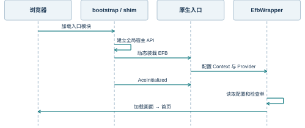
上下文与提供器的职责
组件树中的 Provider 为子组件提供共享能力。Redux Provider 提供页面共享状态；AircraftContext 提供机型能力；故障提供器提供故障编排对象；模态框提供器统一承载弹窗；航图认证提供器保存认证相关上下文。这些能力通过 React 的依赖注入方式下传，避免逐层传递大量参数。
Provider 与领域数据所有者并不总是一一对应。AircraftContext 适合放置相对稳定的计算器和能力开关，航班草稿则高频变化，不适合塞进同一个机型上下文。将稳定能力与高频状态分开，可以缩小重渲染范围，也使组件依赖更清楚。
机型配置异步装载，因此页面不能把初次渲染时的空配置当作最终配置。配置提供器负责读取，Store 负责保存，业务页面再从已装载配置中取得舱段和限制。初始化依赖在启动流程中集中说明，减少页面各自猜测“配置是否已经准备好”的情况。
| 共享上下文 | 适合承载的内容 | 典型使用者 |
|---|---|---|
| AircraftContext | 计算器、机型能力、设置项 | 性能和设置页面 |
| Redux Provider | 页面切片、配置、航班投影 | 仪表盘及原生页面 |
| 故障提供器 | 故障定义与编排对象 | 故障选择页面 |
| ModalProvider | 模态框容器及打开动作 | 提示、确认和异常页面 |
| NavigraphAuthProvider | 认证过程与账户状态 | 航图页面 |
| 本地 useLocal | 草稿、确认、结果与历史 | 本地航班及参考页面 |
同步状态与异步资源
用户编辑字段时，派生重量可以在同一轮界面更新中计算；配置文件和外部资料则通过异步请求取得。同步路径追求确定性，异步路径需要表示等待、成功和失败。把两者混合在一个“是否加载”布尔值中，会使用户无法分辨是输入不完整，还是服务仍在返回。
原生配置从本机静态目录读取，因此部署后仍使用 HTTP 请求语义，但并不意味着它依赖外网。本地航班确认把完整数据提交到 Store，也不同于逐字段请求远程后端。架构图中的网络边界只出现在实际跨进程或跨主机的连接上。
初始化顺序中最重要的依赖是：宿主 API 先建立，原生模块随后导入，组件渲染后装载配置，业务页面使用结果。浏览器自动开机不承担配置文件校验职责；配置缺失仍应作为独立问题定位。
| 处理类型 | 触发方式 | 完成语义 |
|---|---|---|
| 派生重量 | 输入变化 | 函数返回即得到当前值 |
| 本地确认 | 用户动作 | 签名与原生投影更新 |
| 配置读取 | 组件初始化 | Promise 返回 JSON 并写入 Store |
| 宿主写入 | 页面动作 | 写入请求完成，状态另行回读 |
| 外部资料 | 页面或用户刷新 | 服务响应及数据转换完成 |
| 报告生成 | 用户导出 | 当前有效 Result 序列化 |
本地服务的职责收敛
server.cjs 是静态文件服务，而不是业务计算后端。它把请求路径映射到 dist 目录，为 HTML、JavaScript、样式、字体和配置设置对应媒体类型。无扩展名路径回退到入口页，以便浏览器打开应用地址；业务页面的实际路由仍由 MemoryRouter 管理。
服务绑定 127.0.0.1，默认端口 9697。/__health 返回应用标识、运行模式及源码基线，用于判断端口上是否为本 EFB 服务。健康响应只说明静态宿主进程可达，不能代表某个资料提供商或真实模拟器已经连接。
这种职责收敛让日常启动不依赖源码编译工具。构建阶段输出 dist，运行阶段只需 Node.js 分发已有资源。后续增加后端计算或会话服务时，可单独部署对应进程，不必把业务逻辑塞进当前静态文件处理函数。
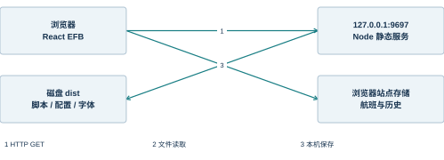
| 入口 | 响应内容 | 职责 |
|---|---|---|
| / | 应用入口 HTML | 启动页面 |
| /assets/* | 构建后的脚本与样式 | 客户端逻辑 |
| /VFS/config/* | 机型与客舱配置 | 静态配置 |
| /Fonts/* | 字体文件 | 文字显示 |
| /__health | JSON 健康信息 | 进程识别 |
参考：[L-H] 浏览器宿主及静态服务；[L-B] 源码叠加及本地集成；[EFB] EfbWrapper、Efb 与共享 Store
2.3 核心业务数据流
输入到结果的主数据流
业务主链由 Flight 开始，以 Result 和可读报告结束。用户输入在编辑阶段形成草稿；validate 检查结构、格式和业务范围；weights 计算质量关系；确认动作记录输入签名；calculate 在同一资料包下生成结果。各阶段均以对象为边界，因此可以描述清楚哪一步产生了哪一种信息。
校验与支持范围判断是两层规则。格式正确的湿跑道航班是合法输入，但当前参考模型不支持湿跑道速度修正。这类输入进入 unsupported 状态，而不是伪装成文件格式错误。合法性与可计算性分开后，错误提示也更符合用户理解。
结果携带输入快照、时间、资料包版本和内核版本。页面、历史及报告读取同一快照。计算后继续修改草稿时，旧结果对象可以仍保存在内存中用于说明，但有效结果选择器不再返回它。
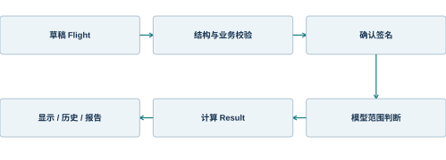
| 阶段 | 主要函数 | 产生的信息 |
|---|---|---|
| 结构校验 | validate / parseFlight | 字段错误集合 |
| 派生质量 | weights | payload、ZFW、ramp、TOW |
| 确认 | confirmFlight | 当前输入签名 |
| 计算 | calculate | 结果及支持范围状态 |
| 有效性选择 | currentResult | 当前可使用的结果或 null |
本地模型到原生页面的投影
本地 Flight 使用明确的数值字段和 SI 质量单位，而原生航班切片包含历史兼容字段、字符串重量和展示用资料。applyToEfb 从原生初始结构开始构造完整投影，再填入本地航班信息。这样可保留原生组件预期的嵌套对象，避免只更新几个字段后留下不完整结构。
投影包含机场、航班号、重量、燃油及可读 loadsheet。当前本地实现还填入固定的展示时刻和部分占位值，因此这些字段的含义是兼容显示，不代表外部签派计算。数据字典把实际输入字段、派生字段和展示占位字段分别说明。
确认还会重置燃油与载重导入标志，使原生页面能够重新接受计划。原生目标被手工修改时，宿主事件撤销本地结果有效性。投影与失效共同形成一个有方向的同步边界，而不是无限双向绑定。
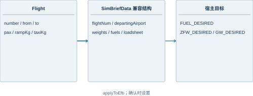
| 本地值 | 原生投影 | 转换含义 |
|---|---|---|
| number | flightNum | 保留航班标识 |
| from / to | departingAirport / arrivingAirport | 机场代码 |
| pax | weights.passengerCount | 数字转字符串 |
| weights(f).zfw | estZeroFuelWeight | 派生质量转字符串 |
| rampKg | fuels.planRamp | 计划停机坪燃油 |
| rampKg - taxiKg | fuels.planTakeOff | 计划起飞燃油 |
地面目标变化的数据回路
地面页面允许用户直接改变燃油或载重目标。这些变化不应悄悄保留旧参考结果，因为旧结果的输入可能已经与新的地面准备不一致。本地宿主在目标变量变化时发出 local-ground-change，状态层将 groundChanged 置为 true。
该事件只表达“目标域发生了变化”，不自动重写整个航班。工作台提供读取燃油目标的明确动作，用于把选定的目标值带回 rampKg。载重分布包含舱段与座位等更复杂的信息，当前实现没有把所有分布自动反向解析为一个新的 Flight。
通过显式回读，用户能看到计划发生了什么变化，并重新确认。相较于双向自动绑定，这种设计多了一次可见动作，但避免地面控制、计划草稿和计算输入在没有提示的情况下互相覆盖。
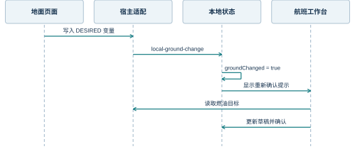
| 数据方向 | 发生时机 | 处理方式 |
|---|---|---|
| 计划 → 原生目标 | 确认航班 | applyToEfb 显式设置 |
| 原生目标 → 失效状态 | 目标发生变化 | 撤销当前结果资格 |
| 燃油目标 → 航班 | 点击读取目标 | 更新 rampKg 草稿 |
| 航班 → 新结果 | 重新确认后计算 | 生成新签名和快照 |
报告、历史与文件的出口
系统有三种不同的数据出口。航班 JSON 保存可再次编辑的输入；历史保存当时的 Result 及其输入快照；HTML 报告保存可阅读和打印的计算记录。文件名或扩展名只是表现形式，真正决定用途的是所序列化的对象。
报告生成前调用 currentResult，因此它只能导出与当前输入、确认状态和资料包一致的 reference-only 结果。航班文件则可以作为输入交换，不包含“本次计算仍有效”的承诺。历史恢复也只取 input，继续沿用草稿到确认的正常路径。
HTML 中的用户文本经过字符转义，避免航班号或航路文字被解释为标签。下载使用临时 Blob URL，并在动作完成后释放。打印打开独立文档窗口；如果浏览器阻止弹窗，用户仍可使用 HTML 文件出口。
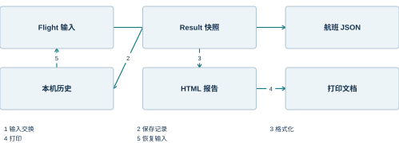
| 出口 | 包含内容 | 再次使用方式 |
|---|---|---|
| 航班 JSON | schemaVersion 与 Flight 字段 | 导入后重新确认 |
| 本机历史 | 最多 20 条 Result | 恢复输入并重算 |
| HTML 报告 | 结果、输入快照、版本及范围 | 浏览器阅读或打印 |
| 打印输出 | 报告当前画面 | 文件归档或纸面阅读 |
参考：[L-F] 本地航班及计算领域模型；[L-S] 本地状态、原生映射与报告；[L-U] 本地业务页面实现
2.4 扩展架构与演进边界
真实宿主接入的架构位置
真实模拟器接入位于适配层。EFB 的航班模型和计算器不直接读取飞行动力学内存，也不直接解析机型 XML。后端负责装载模型、运行系统并产生状态，适配层把这些状态转换为前端需要的快照，并把前端命令转换为宿主操作。
扩展设计把读模型与写模型分开。快照是对当前状态的描述，命令是希望执行的动作。命令提交后可以返回“已接受”，而动作完成需要后续状态或回执来表达。该区分尤其适用于推回、加油和设备连接等持续过程。
本地浏览器替身仍可用于界面开发，但与真实后端适配器使用不同的运行标识。会话建立时确定 aircraftId、modelVersion 和运行模式，页面持续展示连接身份，避免用户把开发样例与真实后端快照混看。
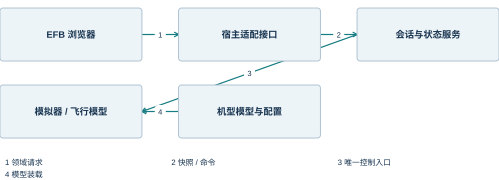
| 接口类别 | 方向 | 主要内容 |
|---|---|---|
| 会话 | 双向 | 机型、版本、连接身份 |
| 状态快照 | 后端 → EFB | 值、单位、时间及质量 |
| 命令 | EFB → 后端 | 目标、参数、请求标识 |
| 命令回执 | 后端 → EFB | 接受、拒绝、执行与完成 |
| 能力清单 | 后端 → EFB | 可读变量及可用命令 |
多机型配置的分离方式
多机型支持不是把不同机型的限制数值放进一个大条件分支。稳定的页面框架读取机型能力描述，机型资料包提供质量限制、布局和计算数据，宿主适配映射到该机型使用的变量。三者以机型身份和版本关联。
例如，燃油页面需要油箱结构，载重页面需要站位和座位布局，性能页面需要可用计算器。某机型未提供某项能力时，界面可以不显示入口，或显示有解释的不可用状态。不能因为共享库内存在一个计算器类，就推断所有机型都适用。
资料包与航班文件绑定 profileId。导入文件时检查身份，计算时把资料包整体纳入签名。切换机型后，旧输入、旧确认和旧结果之间的关系必须重新建立，避免同一个航班号掩盖底层机型已经改变的事实。
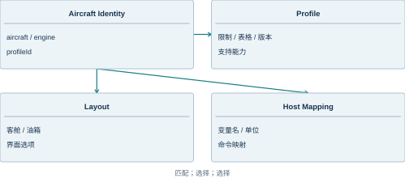
| 变化内容 | 配置归属 | 前端使用方式 |
|---|---|---|
| 发动机与机型身份 | Profile | 文件与结果身份检查 |
| 座位和货舱 | 客舱配置 | 载重布局渲染 |
| 油箱容量 | 机型配置 | 燃油图及容量显示 |
| 计算方法 | 计算器注册 | 按能力调用 |
| 宿主变量 | 适配映射 | 单位及字段转换 |
服务化扩展与本地优先
当航班需要跨设备协作时，可以在现有应用层下增加后端存储适配，而不改变 Flight 的业务含义。客户端仍保留当前草稿，服务端保存版本化记录。保存动作携带预期版本，服务端只在版本匹配时更新，以识别另一设备已经提交的修改。
本地优先意味着用户输入不会以网络请求成功为前提才能显示。草稿先保存在本机，远端同步有独立状态。离线期间产生的更改进入待同步队列，恢复连接后按明确策略处理冲突。此处是扩展架构，当前版本仍使用单浏览器站点存储。
计算服务也可以独立部署，但结果必须继续包含输入快照与资料版本。把计算移到远端并不能省略结果身份；网络延迟反而增加了旧响应覆盖新输入的风险。因此远端响应与当前输入签名的匹配是服务化后仍需保留的规则。
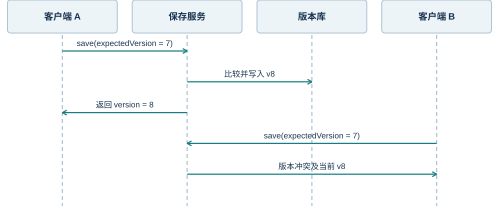
| 当前结构 | 扩展位置 | 保持不变的语义 |
|---|---|---|
| 单机草稿 | 增加同步适配器 | 用户编辑仍立即反馈 |
| localStorage | 增加后端版本库 | Flight 的字段含义 |
| 本地计算函数 | 增加计算服务端点 | 输入和版本决定结果 |
| 有限本机历史 | 增加服务端归档 | 历史恢复不自动确认 |
架构决策及其影响
本系统选择较薄的本地宿主和较集中的领域模型，是为了让浏览器运行、上游复用和业务扩展之间的关系保持可解释。这个选择适合当前单机功能范围，但不把分布式事务、组织权限和远端协作隐藏在“以后自然支持”的表述中。
每个架构决策都有明确后果。MemoryRouter 使内嵌仪表导航不依赖地址栏，但浏览器深链接不能自动恢复业务标签；JSON 签名便于检查完整输入，但需要稳定的资料身份；本机历史使离线操作简单，但不提供跨设备共享。设计文档同时说明获得的能力与对应代价。
后续工程应围绕稳定边界演进：增加宿主实现、资料包或持久化适配，而不是在页面中直接插入新的后端调用。这样可以保持操作界面与底层服务独立变化，并使问题定位落到清楚的职责边界。
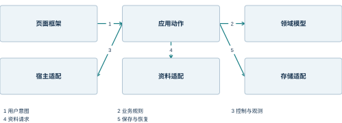
| 架构决策 | 主要理由 | 直接影响 |
|---|---|---|
| 保留原生 flyPad | 复用完整业务界面 | 需要兼容映射层 |
| 独立 Flight 模型 | 明确单位与业务语义 | 旧结构作为投影 |
| 纯函数参考计算 | 结果可重现、便于解释 | 不读取隐式页面状态 |
| 本机静态服务 | 运行依赖简单 | 业务在浏览器执行 |
| MemoryRouter | 适配仪表内部导航 | URL 不代表业务标签 |
| 完整输入签名 | 识别资料和输入变化 | 变更后撤销结果资格 |
| 显式地面回读 | 避免双向覆盖 | 用户重新确认计划 |
参考：[L-H] 浏览器宿主及静态服务；[L-F] 本地航班及计算领域模型；[L-S] 本地状态、原生映射与报告；[EFB] EfbWrapper、Efb 与共享 Store
3 部署结构与运行环境
3.1 本地部署拓扑
进程、存储与访问地址
本地部署由一个 Node.js 静态服务和一个浏览器组成。服务从 headwind/local-efb/dist 读取构建产物，浏览器在自身进程中执行 EFB 业务代码。两个进程通过本机回环地址通信，不需要另设数据库服务器。
航班和历史保存在浏览器站点存储中，而不保存在静态服务的内存中。这意味着停止 Node 进程不会主动删除航班；更换浏览器、浏览器用户配置或站点地址，则可能看到另一份存储空间。127.0.0.1 与 localhost 虽可到达同一台机器，但浏览器将其视为不同的站点来源。
默认入口为 http://127.0.0.1:9697/。运行时字体、图标和机型配置均来自相同静态目录。可选外部服务保留自己的连接地址，它们的可达性不影响主程序文件由本机装载。
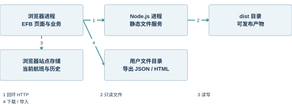
| 资源 | 位置 | 生存周期 |
|---|---|---|
| 服务进程 | Windows 后台 Node | 启动至停止 |
| 构建产物 | local-efb/dist | 随发布版本变化 |
| 航班状态 | 浏览器 localStorage | 跨页面刷新保存 |
| 导出文件 | 用户选择或默认下载目录 | 由用户文件管理 |
交付目录的组织
工程目录把上游来源、生成覆盖、本地代码和发布文件分开。headwind 与其 flybywire 子目录保存固定源码；build-common 和 build-a339x 是叠加后用于构建的工作目录；local-extensions 是本地业务扩展；local-efb 是浏览器宿主和静态发布入口。
叠加目录是可重新生成的中间层。修改这些目录中的文件可能在下次构建时被覆盖，因此持久的适配写入 setup_overlay.py 或 integrate_extensions.py，业务代码保存在 local-extensions。这个安排使“上游发生了什么变化”和“本地做了什么适配”可以分别理解。
dist 是运行所需的最终产物。交付中包含源码和锁文件，以支持重新构建；日常启动直接使用已有 dist。文档、截图和证据文件属于说明材料，不参与前端运行时装载。
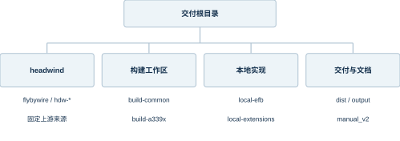
| 目录或文件 | 用途 | 修改位置 |
|---|---|---|
| local-extensions | 新增业务与资料包 | 直接维护源文件 |
| local-efb | 宿主、入口、服务与 Vite 配置 | 直接维护源文件 |
| setup_overlay.py | 建立源码覆盖与兼容补丁 | 维护叠加逻辑 |
| integrate_extensions.py | 加入路由与原生页面融合 | 维护精确集成点 |
| build-common / build-a339x | 生成的构建输入 | 通过上游或脚本更新 |
| dist | 运行产物 | 通过构建生成 |
环境依赖及部署约束
运行依赖与开发依赖不同。使用已经构建的页面时，需要 Node.js 和支持现代 JavaScript 的浏览器；React、Redux 及业务库已进入构建资源，不需要用户逐个安装。重新构建则需要 npm 依赖、Python 叠加脚本和固定源码。
本次环境使用 Node.js 24.14 与 Chrome。启动脚本先寻找系统 Node，再寻找本机已配置的运行时路径。Python 也采用类似回退策略。迁移到其他机器时，脚本可从 PATH 找到常规安装的运行时，而不要求存在原开发者的绝对目录。
浏览器数据依赖站点存储权限。隐私模式或企业策略可能改变其保存行为。对需要迁移或长期保留的航班，JSON 文件比依赖某一个浏览器配置更适合交换；报告则适合阅读和归档，不代替可编辑航班文件。
| 用途 | 所需依赖 | 是否属于日常启动 |
|---|---|---|
| 运行 EFB | Node.js、现代浏览器、dist | 是 |
| 重建前端 | npm 依赖、Python、源码 | 否 |
| 生成说明书 | Python 文档与字体依赖 | 否 |
| 界面自动化检查 | 浏览器测试工具 | 否 |
| 商业航图 | 账户、订阅及接口接入 | 可选 |
| 真实飞机联动 | 对应模拟器和宿主接口 | 当前本地版未连接 |
参考：[L-H] 浏览器宿主及静态服务；[L-B] 源码叠加及本地集成
3.2 启动、停止与故障显示
启动脚本的判断流程
启动入口先请求 /__health。如果端口已有 application 为 headwind-local-efb 的服务，脚本复用该服务，避免重复启动。没有可用服务时，脚本定位 Node.js、确认 dist/index.html 存在，再创建后台进程并记录进程号。
服务的标准输出和错误输出分别写入 logs 目录。启动后再次请求健康接口，确认服务身份。浏览器由启动批处理打开；关闭浏览器只结束页面会话，不等于停止后台服务。
启动脚本的健康判断仅用于管理本地进程。它不通过“网页能打开”推断所有页面都已完成配置读取，也不通过某个端口存在推断它就是正确应用。应用标识使端口复用的判断具有明确依据。
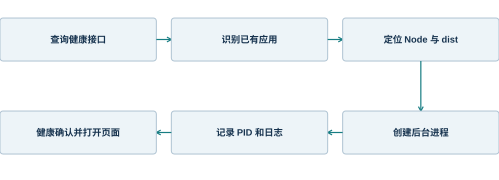
| 启动条件 | 脚本行为 | 结果 |
|---|---|---|
| 已存在本 EFB 服务 | 直接复用 | 避免重复进程 |
| 没有服务 | 创建后台 Node | 开始提供静态文件 |
| 缺少 Node | 显示依赖错误 | 不继续启动 |
| 缺少 dist | 提示先构建 | 不提供残缺入口 |
| 端口服务身份不符 | 报告服务不匹配 | 不假定可用 |
页面启动与电源状态
本地页面在模块装载前显示“正在启动 Headwind EFB”，因此等待过程本身可见。宿主接口准备后触发原生渲染，Efb 的浏览器适配自动进入 LOADING，并在原生延时结束后进入 LOADED。初次打开不再要求用户点击一个没有标识的空白区域。
用户仍可以通过快速控制主动休眠或关机。休眠画面显示“唤醒 EFB”，关机画面显示“开启 EFB”。唤醒沿用原生电源转换，区别在于浏览器有可见按钮代替模拟器中的物理电源入口。
窗口缩放以固定的 1430×1000 逻辑画布为基础。宿主先把原生 w-screen 和 h-screen 解释为逻辑尺寸，再按实际浏览器空间缩放。页脚高度参与比例计算，避免提示栏遮挡底部控件。
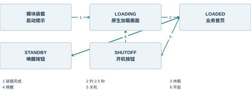
| 状态 | 屏幕表现 | 用户入口 |
|---|---|---|
| 模块装载 | 启动文字 | 等待资源装载 |
| LOADING | Headwind 加载画面 | 等待原生延时 |
| LOADED | 工具栏和业务页面 | 正常使用 |
| STANDBY | 平板已休眠 | 唤醒 EFB |
| SHUTOFF | 平板已关机 | 开启 EFB |
停止和启动异常的呈现
停止脚本根据记录的进程号查找进程，并核对命令身份后结束本地静态服务。进程号可能被操作系统重复使用，因此仅凭旧 PID 结束进程存在误停其他程序的风险；身份核对把操作限制到本 EFB 服务。
页面入口捕获模块装载错误时，使用文本节点显示错误信息，不把错误字符串当作 HTML 插入。这样既能让空白变成可见的故障提示，也避免错误内容中的特殊字符改变页面结构。业务表单错误则由业务页面显示，不进入启动错误面板。
常见启动问题可按层定位：地址不可达对应进程或端口；入口可达但资源缺失对应 dist 部署；页面正常但业务数据为空对应未确认航班；航图或天气为空对应可选资料源。这些现象在使用说明中给出面向用户的处理方法。
| 现象 | 所在层次 | 说明 |
|---|---|---|
| 连接被拒绝 | 服务进程 | 浏览器尚未取得入口文件 |
| 入口显示启动失败 | 模块与静态资源 | 脚本装载或初始化异常 |
| 首页提示尚未确认航班 | 业务状态 | 程序已运行，航班尚未提交 |
| 平板已休眠 | 电源状态 | 点击唤醒即可恢复 |
| 外部资料没有内容 | 资料服务 | 不影响本地核心功能 |
| 刷新后数据不同 | 站点存储 | 检查浏览器配置及访问地址 |
参考：[L-H] 浏览器宿主及静态服务；[L-B] 源码叠加及本地集成；[L-T] 本地运行检查记录
3.3 源码叠加与构建装配
共享源码和机型覆盖顺序
Headwind 通过共享来源与机型覆盖形成 A339X 构建输入。先复制 FlyByWire 公共系统，再应用 Headwind 公共和 A339X 公共覆盖；机型系统则以共享机型系统为基础，叠加 A339X 实现与本地化资源。后写入的文件在相同相对路径上取代先写入的文件。
覆盖顺序是构建语义的一部分。只检查某个上游目录，可能看到并非最终参与构建的实现；只检查生成目录，又可能丢失该实现来自哪个来源的线索。本书在解释关键算法时直接指出最终 A339X 路径，在解释复用结构时指出共享来源。
本地兼容补丁作用于生成目录，包括类型导出和配置读取返回值等兼容处理。本地业务融合随后加入新的路由、导航标签及计划条。两类脚本按顺序执行，使构建过程可以重建相同的装配关系。
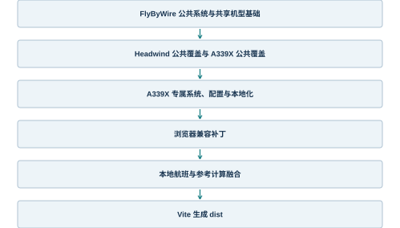
模块解析与构建别名
Vite 别名把原生工程内的逻辑导入路径指向本地装配后的文件。@flybywiresim/flypad 指向共享 EFB 入口，@shared 指向 A339X 系统共享代码，@localefb 指向本地扩展。原生 render 入口则替换为本地 render.tsx，以适应普通浏览器的挂载点。
别名并不是随意替换所有 SDK。它选择浏览器环境需要承担的边界，例如宿主挂载和 SDK 接口。机型业务组件仍来自装配后的源码。这样本地页面运行时保留原生业务结构，而不是仅仿制外观。
源码路径通过 fileURLToPath 解析为本地文件系统路径，避免含空格或中文目录被 URL 编码后错误拼接。构建配置使用绝对解析路径，但发布产物中的资源按静态站点路径装载，两者不应混淆。
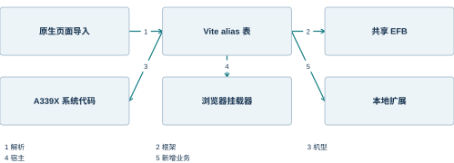
| 逻辑导入 | 本地解析目标 | 目的 |
|---|---|---|
| @localefb | local-extensions | 引入新增业务 |
| @flybywiresim/flypad | build-common 下 EFB 入口 | 复用共享平板 |
| @instruments/common/index | local-efb/render.tsx | 替换宿主挂载 |
| @shared | build-a339x 系统共享目录 | 使用 A339X 实现 |
| @failures | build-a339x 故障目录 | 机型故障定义 |
| @localization | build-a339x 本地化目录 | 机型语言资源 |
构建产物与发布过程
构建脚本依次执行源码叠加、本地融合、静态资源准备及 Vite 生产构建。依赖锁文件限定 npm 依赖版本；已安装依赖时复用本机 node_modules，缺失时按脚本安装。产物名称带内容标识，入口 HTML 引用对应脚本和样式。
静态资源包括配置、字体、哈希文件和版本信息。前端脚本能装载并不意味着这些资源可以遗漏，因为部分页面在运行时才请求配置或字体。部署单位因此是整个 dist 目录，而不是只复制 index.html 或一个 JavaScript 文件。
源码包可不含 Git 元数据。构建脚本在存在 Git 时读取提交，在源码归档中则读取 BASELINE.json。版本来源由此在开发检出和离线归档两种形态中保持可用，避免重建时必须依赖原机器的仓库历史。
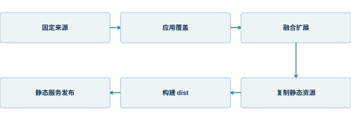
| 阶段 | 主要输入 | 产物 |
|---|---|---|
| 源码叠加 | 固定上游目录 | build-common / build-a339x |
| 本地融合 | 原生页面与本地扩展 | 路由、导航和计划条 |
| 资源准备 | 字体、机型配置、版本信息 | local-efb/public |
| 生产构建 | 装配后的源码与锁定依赖 | dist 资源集合 |
| 静态发布 | 完整 dist | 本机可访问应用 |
| 源码归档 | 源码、脚本、BASELINE | 可重建材料 |
参考：[HW] Headwind A339X 固定源码；[FBW] FlyByWire 共享组件固定源码；[L-B] 源码叠加及本地集成；[L-H] 浏览器宿主及静态服务
3.4 运行配置与资源管理
机型配置的装载路径
原生配置通过 UniversalConfigProvider 装载。浏览器静态目录保留 VFS/config 路径，使共享组件可以按预期查找机型、客舱和平板配置。配置读取后进入 Store 的 config 切片，供载重、燃油和设置页面使用。
机型标识参与配置选择。A330-941 的客舱站位、油箱布局及设置项不由浏览器窗口大小或页面标题决定，而由配置与上下文共同决定。配置文件与机型代码必须属于同一装配基线，否则页面可能显示正确名称却使用错误容量或布局。
配置在应用启动后异步读取，运行时缓存于共享状态。原生清空 EFB 状态时保留 config，这反映出配置与单次航班状态不同的生命周期。切换机型属于更高层的重建或会话操作，不能只通过清空航班字段完成。
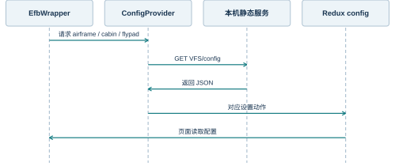
| 配置类别 | 主要用途 | 生命周期 |
|---|---|---|
| airframe | 机型身份与参数 | 应用配置 |
| cabin | 座位、舱段与货舱 | 机型布局 |
| flypad | 平板特定配置 | 应用配置 |
| reference profile | 本地参考表与限制 | 资料包版本 |
字体、本地化与显示资源
中文界面需要完整的字体回退链。原生 EFB 使用 Inter、Manrope 等拉丁字体，并为简体中文及其他文字配置相应 Noto 字体。浏览器发布必须保留字体资源路径，否则界面可能依赖系统临时回退，导致行高、标签宽度和字形发生变化。
本地化在构建装配阶段合并 Headwind 语言覆盖与共享语言数据。相同键由机型覆盖替代，未覆盖键继续使用共享内容。新增本地页面使用明确的中文标签，其业务字段仍保留稳定的英文内部名称，避免切换显示语言改变文件结构。
图标和样式属于表现资源。业务状态不能只存在于颜色中，尤其是结果失效、存储失败或模型不支持等情况，同时具有文字提示。深色原生界面与打印报告使用不同的配色，但读写同一结果对象。
| 资源 | 装配方式 | 显示影响 |
|---|---|---|
| 共享语言数据 | 原生语言包 | 通用控件与页面文字 |
| Headwind 覆盖 | 按相同键合并 | 机型专属表述 |
| 字体 | 复制到发布字体路径 | 字符覆盖与稳定布局 |
| 图标与 SVG | 随构建资源发布 | 导航和状态标识 |
| 本地 CSS | 由扩展入口引入 | 工作台与结果页面 |
| 报告样式 | HTML 内嵌打印样式 | 纸面可读性 |
缓存策略与版本可识别性
本机静态服务为资源设置 no-cache，浏览器可以保存副本，但再次使用前应向服务确认资源状态。内容标识化的脚本名称则让新构建入口指向新文件。刷新页面后，客户端会装载与当前入口匹配的代码集合。
业务持久化不是 HTTP 缓存。localStorage 中的航班和历史不会因为静态脚本更新而自动删除，必须通过 schemaVersion、profileId 和签名规则判断其可用性。升级程序而保留用户输入是合理行为，但保留旧输入不等于保留旧计算结果的有效资格。
版本信息同时存在于 BASELINE.json、构建信息和结果快照中。源码提交标识解释组件实现，profileVersion 解释资料包，engineVersion 解释计算规则。三个标识解决不同问题，因此不能只用一个“软件版本”代替全部来源。
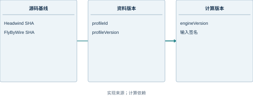
| 存储对象 | 更新触发 | 旧内容处理 |
|---|---|---|
| 脚本和样式 | 新构建发布 | 入口引用新资源 |
| 机型配置 | 对应机型发布 | 重新装载配置 |
| 航班草稿 | 用户编辑与确认 | 保持输入并检查格式 |
| 计算结果 | 重新计算 | 签名不符时失效 |
| 历史记录 | 归档或恢复 | 恢复输入后重新确认 |
参考：[L-H] 浏览器宿主及静态服务；[L-B] 源码叠加及本地集成；[EFB] EfbWrapper、Efb 与共享 Store；[L-S] 本地状态、原生映射与报告
4 数据架构与数据模型
4.1 航班聚合模型
Flight 作为业务聚合根
Flight 把一次本地航班准备所需的输入组合为一个对象，包括身份、机场、航路、载荷燃油、跑道、天气和构型。聚合根的作用是让校验、确认、计算及文件交换围绕同一个完整对象进行，而不是把每个页面的临时字段当成独立主记录。
模型中的质量值统一使用 kg，跑道距离使用 m，标高使用 ft，气压使用 hPa，风速和参考速度使用 kt。不同量采用不同航空常用单位，字段名称和数据字典明确其单位，禁止依靠一个全局“公制/英制”开关猜测所有值的含义。
Flight 不保存计算结果。派生质量由 weights 返回，速度参考由 calculate 返回。这样在输入变化后，系统可以重新派生结果，而不需要同时更新散落在多个字段中的旧合计。
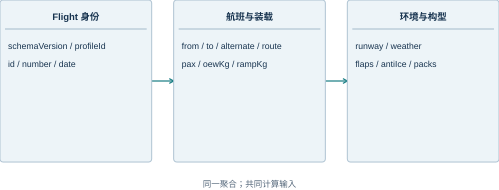
| 字段组 | 表示的事实 | 是否由用户编辑 |
|---|---|---|
| 身份与版本 | 文件格式、机型、航班身份 | 部分固定 |
| 机场与航路 | 本地计划资料 | 是 |
| 载荷与燃油 | 人数及质量输入 | 是，OEW 受资料包约束 |
| 跑道与天气 | 计算环境 | 是 |
| 构型 | 襟翼、防冰、引气 | 是 |
身份字段与版本字段
schemaVersion 标识航班文件结构，目前为 1。profileId 标识输入适用的机型资料包。id 标识本地航班对象，number 是用户看到的航班号；二者不应混为同一字段，因为航班号可能重复，界面显示也可能调整。
date 按 YYYY-MM-DD 保存 UTC 航班日期。当前校验检查日期字符串格式及可解析性。日期用于资料与报告标识，不自动推导真实时刻表。原生兼容投影中的计划时刻具有本地展示属性，详细语义见签派章节。
source 描述输入来源，例如 local-example 或 local-file。来源标签是数据说明，不是文件真实性的数字签名；JSON 文件中的文本本身不能证明某个外部机构批准了这份计划。
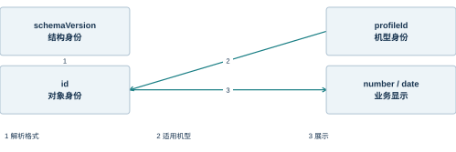
| 字段 | 类型与示例 | 语义 |
|---|---|---|
| schemaVersion | number，1 | 文件模式版本 |
| profileId | string，A330-941-TRENT7000-LOCAL | 机型资料身份 |
| id | string，LOCAL-DEMO-330 | 本地航班对象标识 |
| number | string，DEMO330 | 展示用航班号 |
| date | string，2026-10-03 | UTC 航班日期 |
| source | string，local-example | 来源说明 |
当前格式并未使用 UUID 作为强制规则，也未实现全局唯一航班号注册。跨设备服务化时，可以在不改变展示航班号的前提下增强对象标识。
机场与航路字段
from 和 to 使用四位大写 ICAO 字符串。输入控件把机场代码转换为大写，校验仍独立检查格式。alternate 保存备降代码，route 保存手工航路文字。route 在本版本中用于显示和文件交换，没有经过导航数据库解析，也没有生成可执行的飞行管理系统航段。
把航路文字与结构化航路分开，可以避免把“能显示一行航路”误解为“已完成导航解析”。后续若接入导航服务，结构化航路应具有航段类型、标识、坐标、约束及数据库周期等属性，而不是用分隔字符串隐含这些信息。
文本字段有长度限制，以减少异常大文件对界面和报告的影响。HTML 报告将这些字段转义后显示；原始航路可以包含符号，但不能因此成为可执行页面内容。
| 字段 | 当前表示 | 处理方式 |
|---|---|---|
| from | 出发机场 ICAO | 四位大写字母校验 |
| to | 目的机场 ICAO | 四位大写字母校验 |
| alternate | 备降机场文本 | 保存并显示 |
| route | 手工航路文字 | 不解析为导航航段 |
| number | 航班号文本 | 显示、文件名与报告 |
| source | 来源说明文本 | 保持可读来源 |
不可变快照与派生视图
编辑动作以新的 Flight 对象替换状态中的旧对象。计算结果使用 structuredClone 保存输入快照，从而将“计算时的输入”与“后来继续编辑的草稿”分开。对象引用相同会使历史结果随表单变化而改变，快照则避免这种隐式联系。
派生视图只保存需要展示的组合值。weights 返回 payload、zfw、ramp 和 tow，仪表盘投影生成文字及兼容字段，报告把结果格式化成可读文档。它们共享一个事实来源，但表现形式不同。
当前 signature 使用输入、完整资料包及内核版本的 JSON 序列化值。它是精确相等比较所用的内容表示，不是用于防篡改认证的加密签名。明确这一点可以避免在接口设计中错误地把它当作安全令牌。
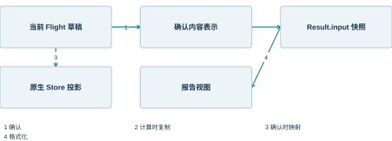
| 对象 | 是否随草稿编辑变化 | 用途 |
|---|---|---|
| state.flight | 是 | 当前编辑输入 |
| confirmed | 编辑后清空 | 记录确认对应的内容 |
| result.input | 否 | 解释历史计算来源 |
| 原生航班投影 | 确认后更新 | 兼容页面显示 |
| weights 返回值 | 每次调用重新派生 | 即时质量卡片 |
参考：[L-F] 本地航班及计算领域模型；[L-S] 本地状态、原生映射与报告；[L-U] 本地业务页面实现
4.2 载荷、燃油与环境字段
质量字段及其计算关系
质量模型采用人数和平均单人质量，而不是逐人清单。旅客质量为 pax×paxKg，行李质量为 pax×bagKg，额外货物为 freightKg。三项之和形成 payload，再与运行空重 oewKg 相加形成 ZFW。
rampKg 是停机坪燃油质量，taxiKg 是计划滑行耗油。停机坪总重为 ZFW+rampKg，起飞重量为该值减去 taxiKg。模型没有从航路距离自动计算航程耗油；用户填入的燃油仍是计划输入。
当前资料包固定 OEW 为 127000 kg，最大 ZFW 为 181000 kg，结构 MTOW 为 251000 kg。这些是本机型包使用的配置值。修改 OEW 需要另建资料配置，而不是把它作为不受限制的任意输入。
| 字段 | 单位 | 当前输入规则 |
|---|---|---|
| pax | 人 | 0～436 的整数 |
| paxKg | kg/人 | 1～200 |
| bagKg | kg/人 | 0～100 |
| freightKg | kg | 非负有限数 |
| oewKg | kg | 等于资料包固定值 |
| rampKg / taxiKg | kg | 非负且滑行耗油不大于停机坪油 |
跑道对象
runway 对象保存用于当前参考计算和一致性检查的跑道资料。ident 是跑道编号，heading 是跑道方向，tora、toda、asda 是三种声明距离，intersection 是进跑道位置造成的距离扣减。标高、坡度和道面条件作为环境输入共同保存。
三种声明距离并不互相替代。当前实现要求 TORA 为正值且不超过 10000 m，TODA 和 ASDA 不小于 TORA，intersection 小于 TORA。effectiveTora 仅表示 TORA 减去扣减量，没有与所需起飞距离比较，因此不形成跑道可用性结论。
source 保存跑道资料来源的可读说明。手工样例和机场权威资料可能具有同样的字段形状，但来源质量不同。后续接入机场数据库时，应把周期、更新时间和资料标识作为来源模型的组成部分。
| 字段 | 类型 / 单位 | 含义 |
|---|---|---|
| ident | string | 两位数字及可选 L/R/C |
| heading | number，° | 跑道方向，0～360 |
| tora | number，m | 可用起飞滑跑距离 |
| toda | number，m | 可用起飞距离 |
| asda | number，m | 可用加速停止距离 |
| intersection | number，m | 从声明起点扣除的距离 |
| elevationFt | number，ft | 跑道标高 |
| slope | number，% | 跑道坡度 |
| condition | string | dry / wet / contaminated |
| source | string | 资料来源说明 |
天气对象与方向约定
weather 对象包括风向、风速、外界温度和 QNH。方向以角度保存，风速以 kt 保存，气温以摄氏度保存，QNH 以 hPa 保存。风向表示风从何方吹来，跑道方向与风向的差用于分解沿跑道和横跑道分量。
当前计算使用 windKt×cos(风向差) 得到迎风分量，正值为迎风，负值为顺风；使用正弦得到带符号侧风分量。侧风符号首先是坐标约定，界面需要结合航向约定解释，不能仅凭正负号脱离参照轴判断方向。
压力高度由标高和 QNH 共同计算。天气字段进入输入签名，因此改变天气会使旧结果失效；但当前速度参考表仍只按质量和襟翼插值，没有把天气和标高修正到 V2 中。保存环境输入与实施性能修正是不同层次。
| 字段 | 单位 | 当前录入范围 |
|---|---|---|
| windDir | ° | 0～360 |
| windKt | kt | 0～150 |
| oat | °C | -80～60 |
| qnh | hPa | 800～1100 |
| runway.elevationFt | ft | -1500～15000 |
| runway.slope | % | 绝对值不大于 5 |
构型字段与模型支持范围
flaps 使用 1、2、3 三个值选择参考表。antiIce 和 packs 使用布尔值表达防冰和引气状态。数据层允许保存这些选择，以保留真实输入意图；模型层根据当前资料覆盖情况决定是否输出参考速度。
当前参考模型只在干跑道、未启用防冰修正且未启用引气修正的条件下输出速度。湿或污染跑道，以及 antiIce 或 packs 为 true 的输入，进入 unsupported 状态。该状态不同于字段缺失或类型错误，表示输入合法但计算模型没有相应修正能力。
结构重量上限与速度表范围也分别判断。结构 MTOW 为 251000 kg，但表格最大节点为 250000 kg。因此一个 250500 kg 的输入可能未触及结构上限，却超出表格范围。系统保留这两种限制的独立原因。
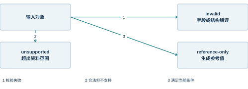
| 条件 | 数据是否可保存 | 速度参考处理 |
|---|---|---|
| flaps 为 1、2、3 | 是 | 选择对应表格 |
| 湿或污染跑道 | 是 | unsupported |
| 防冰或引气为 true | 是 | unsupported |
| TOW 在 130～250 t | 是，且其他规则通过 | 允许表内插值 |
| TOW 超过表格范围 | 可能仍是合法输入 | 禁止外推 |
| 字段类型错误 | 文件导入拒绝 | invalid |
参考：[L-F] 本地航班及计算领域模型；[L-D] A339 参考资料包
4.3 计算结果与有效性模型
Result 的组成
计算结果不仅是一组数字，还包含足以解释数字来源的上下文。calculate 返回生成时间、输入快照、输入内容表示、资料包版本、内核版本、错误集合、不支持能力列表，以及质量和辅助量。页面可以据此说明本次结果计算了什么、没有计算什么。
v2、pressureAltitudeFt、headwindKt、crosswindKt 和 effectiveTora 初始为 null。字段校验失败时不进行正常计算；通过校验后先形成质量和辅助量，再判断参考表支持范围。由此，unsupported 结果可能仍含有有意义的辅助量，但不会成为可导出的有效速度结果。
状态字段取 invalid、unsupported 或 reference-only。当前实现没有 approved、dispatch-ready 或类似可放行状态。状态名称表达计算器的实际语义，而不是对一次航班安全性的评价。
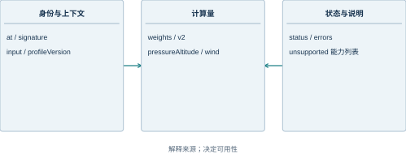
| 字段 | 内容 | 用途 |
|---|---|---|
| input | Flight 深复制 | 结果追溯 |
| signature | 输入、资料包与内核内容表示 | 一致性比较 |
| status | 三种结果状态 | 界面和出口控制 |
| errors | 字符串集合 | 解释拒绝或不支持原因 |
| unsupported | 能力清单 | 解释模型覆盖 |
| at | ISO 时间字符串 | 记录生成时刻 |
当前有效结果的判定
state.result 保存最近一次结果，currentResult 则决定该结果此刻能否被使用。判定要求结果签名等于当前输入签名、confirmed 等于当前输入签名、groundChanged 为 false，并且结果状态为 reference-only。任何一项不满足，选择器返回 null。
这种设计把“存在结果对象”和“结果仍然有效”分开。用户修改天气后可以看到旧结果失效的解释，而系统不必立即删除全部旧对象。导出和归档入口统一通过选择器，避免某个按钮遗漏检查而继续输出旧值。
签名包含整个资料包。因此即使 profileVersion 文本没有变化，只要资料内容不同，当前结果也会失去匹配关系。这比只比较一个短版本号更能覆盖数据变化，但仍要求输入对象的序列化方式保持稳定。
| 变化事件 | 保存的旧对象 | 当前有效性 |
|---|---|---|
| 编辑任何航班输入 | 可以保留 | 失效 |
| 地面目标改变 | 可以保留 | 失效 |
| 资料包内容变化 | 历史可存在 | 签名不匹配 |
| 重新确认但未计算 | 旧对象可存在 | 仅匹配时才可能可用 |
| 重新计算成功 | 替换最近结果 | 满足全部条件后可用 |
历史对象与恢复规则
历史列表保存最多 20 条当前有效的 Result，最新记录位于列表前端。归档前先取 currentResult，没有当前有效结果时拒绝归档。这使列表中的记录来自明确的计算时刻，而不是来自一个正在编辑的表单草稿。
恢复历史时，系统取记录中的 input 深复制，再走 loadFlight 和 editFlight 路径。确认签名随之清空，界面显示需要重新确认。历史中的资料版本、速度值和生成时间仍属于过去，不会直接变成当前计算的身份。
20 条上限控制本机存储体积，也体现当前历史功能的定位：近期本地记录，而非长期集中档案。长期归档使用 JSON 或 HTML 文件，服务化存储可以在独立适配器中扩展。
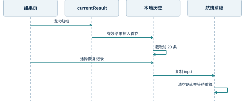
| 历史操作 | 输入 | 结果 |
|---|---|---|
| 保存 | 当前有效 Result | 新增一条快照 |
| 列表显示 | 历史数组 | 按保存次序浏览 |
| 恢复 | 记录索引 | 恢复 Flight 草稿 |
| 重新确认 | 恢复后的输入 | 建立当前确认身份 |
| 重新计算 | 当前资料包和输入 | 生成新的 Result |
参考：[L-F] 本地航班及计算领域模型；[L-S] 本地状态、原生映射与报告
4.4 机型资料包与配置数据
资料包的身份和来源
本地参考资料包是独立 JSON 文件。它声明机型 A330-941、发动机 RR TRENT 7000、来源提交、源码路径、单位、质量范围和版本。速度表不散落在界面组件里，因此数据来源可以在不阅读页面布局代码的情况下识别。
sourceCommit 与 sourceUrl 指向固定的 Headwind NXSpeeds 来源。该来源是开源模拟软件中的表格实现，不等同于已经取得并独立校核的原始航空性能资料。资料包因此保存 validation 和 knownIssues 字段，结果报告也保留参考性质说明。
profileVersion 和 engineVersion 当前均为 1.0.0，前者标识资料包，后者标识算法内核。两者分开后，更新表格和更新计算逻辑可以分别追踪。
| 身份字段 | 当前内容 | 说明 |
|---|---|---|
| profileId | A330-941-TRENT7000-LOCAL | 当前本地配置 |
| aircraft | A330-941 | 机型身份 |
| engine | RR TRENT 7000 | 发动机身份 |
| profileVersion | 1.0.0 | 资料包版本 |
| engineVersion | 1.0.0 | 计算规则版本 |
| sourceCommit | 41eace79… | 固定来源提交 |
| massUnit / speedUnit | kg / kt CAS | 输入表单位 |
表格结构与节点
速度表按质量节点组织，最小质量 130000 kg，最大质量 250000 kg，间隔 10000 kg，共 13 个节点。v2 对象用字符串键 1、2、3 存放三个襟翼构型的数组。数组下标表示同一组质量节点，不单独再存一遍质量轴。
均匀质量间隔使索引计算直接：i=(TOW-massMin)/step。整数部分选择下节点，小数部分作为线性插值比例。边界处使用最后一个节点，并禁止超出整个质量范围的外推。
CONF 3 在 220 t 的 151 kt 到 230 t 的 166 kt 之间存在明显跳变。当前资料包保留源码数值并说明该问题，没有通过平滑操作制造一个看似连续但来源不明的新表。
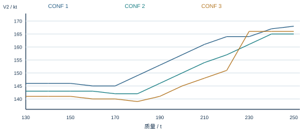
| 参数 | 数值 | 算法作用 |
|---|---|---|
| massMin | 130000 kg | 质量轴起点 |
| massMax | 250000 kg | 禁止外推的上界 |
| step | 10000 kg | 相邻节点间隔 |
| 数组长度 | 13 | 包含两端点 |
| 构型键 | 1、2、3 | 选择对应速度数组 |
配置与能力描述
supported 和 unsupported 数组把模型能力显式写入资料包。前者包括质量关系、结构质量检查、V2 源码表插值、压力高度、风分量和声明距离一致性；后者包括 V1、VR、FLEX、起飞距离、加速停止距离、障碍物和单发爬升等未建模内容。
能力描述服务于界面、报告和接口说明，而不是用来代替算法中的条件判断。实际计算仍检查重量、道面、防冰及引气条件。能力列表与执行规则相互对应，读者才能理解为什么一个字段可以输入，却没有得到对应修正。
上游 airframe、cabin、flypad 配置与本地 reference profile 的职责不同。前者支持原生组件布局与系统设置，后者支持本地参考计算。它们通过相同机型身份关联，但不能因为文件都叫配置就任意合并。
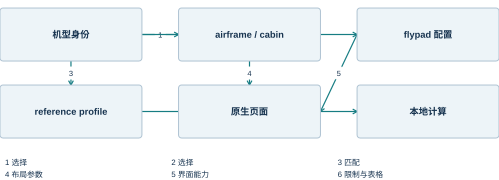
| 资料类别 | 服务对象 | 示例 |
|---|---|---|
| airframe | 原生机型识别与参数 | A330-941 身份 |
| cabin | 载重页面 | 座位和货舱布局 |
| flypad | 平板页面与设置 | 显示能力 |
| reference profile | 本地参考计算 | 质量限制和 V2 数组 |
| supported | 用户与报告 | 已覆盖的计算量 |
| unsupported | 用户与接口调用者 | 尚无模型的输出 |
参考：[L-D] A339 参考资料包；[SPD] A339 NXSpeeds 源码速度表；[EFB] EfbWrapper、Efb 与共享 Store
4.5 持久化与交换格式
本机状态记录
本地状态使用 A339_LOCAL_FLIGHT_V1 作为 localStorage 键。保存对象包含当前 Flight、确认内容表示、最近 Result、历史数组、提示文字、保存错误和地面变化标志。每次 publish 尝试序列化并保存，再通知界面订阅者。
初始化时先建立人工样例，再尝试恢复本机记录。恢复会校验其中的 Flight；无效或无法解析的记录产生读取错误提示。读取失败不会直接删除原记录，这为用户通过文件或维护手段恢复数据保留了可能。
当前存储没有数据库事务或跨标签页协同锁。它适用于一个浏览器中的本地工作流。如果同一来源被多个标签页同时编辑，最新写入可能覆盖前一份存储；服务化扩展的版本控制方案用于解决更高层的协作问题。
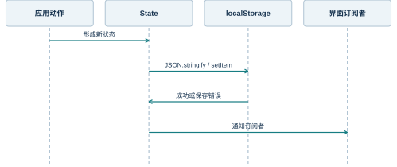
| 状态字段 | 保存内容 | 恢复后的作用 |
|---|---|---|
| flight | 当前草稿 | 继续编辑 |
| confirmed | 确认内容表示 | 判断确认是否仍匹配 |
| result | 最近一次结果 | 由选择器判断资格 |
| history | 近期结果列表 | 浏览和恢复输入 |
| notice | 业务反馈文字 | 解释当前操作 |
| groundChanged | 目标变化标志 | 控制结果有效性 |
航班 JSON 的导入边界
parseFlight 接受文本，先检查长度不超过 100000 个字符，再进行 JSON.parse，随后执行完整 validate。全部通过才返回 Flight。页面在得到完整对象后调用 loadFlight；解析或校验失败时保留当前对象，不实施字段级的部分覆盖。
导入接口要求 JSON 对象，而不是数组或任意文本。schemaVersion 和 profileId 必须匹配，必需字段类型和范围必须符合当前模型。额外字段的存在不等于系统会使用它们，字段语义由当前模式定义。
导出的航班文件可以作为模板。用户修改文件时，数值仍应保持 JSON number，布尔值保持 true 或 false，不能把“30000 kg”写入数值字段。显示单位由界面处理，交换文件保存明确的内部单位。
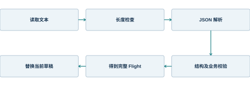
| 输入情况 | 解析结果 | 当前航班 |
|---|---|---|
| 非法 JSON | 语法错误 | 保留 |
| 数组或空值 | 对象类型错误 | 保留 |
| 模式或机型不匹配 | 身份错误 | 保留 |
| 数字携带单位字符串 | 类型错误 | 保留 |
| 字段范围不合法 | 业务错误 | 保留 |
| 完整合法对象 | 加载为草稿 | 整体替换并撤销确认 |
序列化、字符转义与文件命名
航班 JSON 使用缩进序列化，便于人工阅读和版本比较。HTML 报告使用独立模板，对来自航班输入的文本进行转义。两种出口都来自领域对象，不从已渲染页面抓取文本，因此显示布局或语言样式变化不会改变内部字段语义。
下载函数为 Blob 创建临时对象 URL，设置文件名并触发浏览器下载。文件名中的非字母、数字、下划线、点和连字符被替换为下划线，减少特殊路径字符带来的问题。对象 URL 在短延时后释放，避免一直保留浏览器资源。
文件名不是结果身份。真正可追溯的信息在文件内容中，包括航班输入、结果生成时间、资料包和内核版本。用户重命名文件不会改变其内部含义；相反，仅修改文件名不能把旧结果变为当前结果。
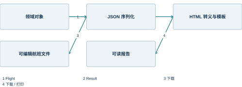
| 出口处理 | 采用方式 | 作用 |
|---|---|---|
| JSON 内容 | 序列化领域对象 | 可再次导入 |
| HTML 文本 | 转义 &、<、>、引号 | 防止文本变为标记 |
| 文件名 | 限制特殊字符 | 稳定下载命名 |
| 下载资源 | Blob URL | 浏览器本地下载 |
| 资源释放 | revokeObjectURL | 回收临时资源 |
| 身份追溯 | 内容中的时间与版本 | 不依赖文件名 |
模式演进与兼容性
模式版本表达文件结构的兼容关系。当前导入器只接受 schemaVersion=1，因此未知版本会被明确拒绝，而不是在猜测字段含义的情况下加载。这种保守策略保护数据语义，但也意味着后续升级需要显式迁移函数。
扩展设计可将迁移分为解析旧模式、转换字段、补充默认值和重新校验四步。迁移结果仍是当前 Flight 草稿，旧确认与旧计算结果不随迁移自动有效。单位变化尤其需要在迁移中显式转换，不能只重命名字段。
资料包版本变化与文件模式变化相互独立。schemaVersion 不变时，profileId 或资料内容仍可能改变；文件能够被读懂，并不意味着它仍适用于当前机型或可以使用旧性能结果。
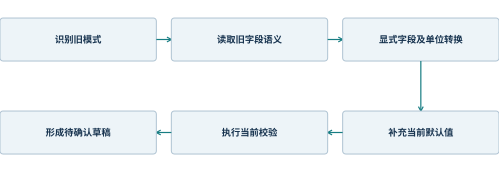
| 变化类型 | 需要改变什么 | 旧结果处理 |
|---|---|---|
| 增加可选展示字段 | 可保持模式兼容 | 按签名判断 |
| 改变必需字段结构 | 模式版本与迁移器 | 重新确认和计算 |
| 改变字段单位 | 显式数值转换 | 禁止继承旧值身份 |
| 更换机型资料 | profileId 或资料版本 | 重新判断适用范围 |
| 更新计算算法 | engineVersion | 旧结果不能冒充新算法结果 |
参考：[L-F] 本地航班及计算领域模型；[L-S] 本地状态、原生映射与报告
5 接口设计与宿主适配
5.1 本地业务服务接口
领域函数的调用契约
本地领域接口采用普通 TypeScript 函数。调用者提供 Flight，函数返回校验信息、派生质量或 Result。函数不读取页面输入框，不隐式访问当前路由，也不自行修改浏览器存储。这使函数调用具有明确的输入输出边界。
validate 返回字符串数组，空数组表示输入满足当前数据规则。weights 只计算质量关系，调用者在使用其值作正式结果前仍需要校验输入。calculate 内部执行 validate，因而结果对象可以独立表达 invalid 和 unsupported 等状态。
parseFlight 是文本边界接口，它可能抛出 JSON 语法或业务校验异常。页面以统一动作包装器捕获异常，再转为可见通知。普通的业务拒绝尽量返回结构化状态，文件解析这一类无法形成有效对象的失败则在边界处中断。
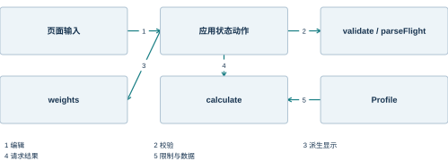
| 函数 | 参数 | 返回语义 |
|---|---|---|
| validate | 未知对象 / Flight | string[]，当前所有可报告错误 |
| weights | Flight | payload、zfw、ramp、tow |
| parseFlight | JSON 文本 | 合法 Flight，失败抛错 |
| signature | Flight | 完整输入与资料的内容表示 |
| calculate | Flight | 带状态、快照和版本的 Result |
| massConvert 等 | 数值、源单位、目标单位 | 换算后的数值 |
应用动作接口
状态层把领域函数组合成完整用例。editFlight 形成草稿并清除确认；confirmFlight 校验后记录签名并同步原生页面；runCalculation 要求当前输入已确认且地面目标未变化；archiveResult 只保存当前有效结果。动作名称直接表达业务意图。
这些动作的副作用集中在 publish 和 applyToEfb。前者保存并发布本地状态，后者把确认计划映射到原生组件及开发宿主。页面因此只需要调用动作，不必重复写入 localStorage 或多个 Store 切片。
动作返回与通知各有分工。confirmFlight 返回布尔值，通知文字解释成功或失败原因；currentResult 返回结果或 null，供按钮是否可用以及报告出口共享使用。调用者不应通过某一句中文提示文字判断业务状态。
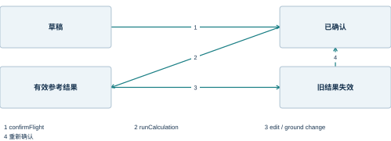
| 动作 | 前置数据 | 状态变化 |
|---|---|---|
| editFlight(f) | 新的 Flight | 替换草稿、清空 confirmed |
| loadFlight(f) | 通过 validate 的对象 | 载入为草稿并记录来源 |
| confirmFlight() | 合法当前输入 | 写入签名、清除地面变化、同步原生 |
| runCalculation() | 已确认且地面未变 | 替换最近 Result |
| archiveResult() | currentResult 非空 | 插入历史并限制 20 条 |
| restoreHistory(i) | 有效记录索引 | 复制历史 input 为草稿 |
| readFuelTarget() | 有效燃油目标 | 更新 rampKg 草稿 |
错误返回与界面转换
错误消息来自不同边界，但最终由本地页面统一呈现。字段校验生成可读原因集合；文件选择处理器补充“导入失败，保留原航班”；存储错误优先显示 storageError；参考模型范围问题保存在 Result.errors 中。页面保留错误来源，使用户能够选择合适动作。
当前函数接口没有定义机器可读的错误代码枚举。对于单机中文界面，这种实现简单直接；扩展为外部 API 时，应在保持可读消息的同时增加稳定 code 和字段路径。否则调用者只能解析人类语言，语言变更就会破坏接口兼容性。
扩展错误对象可采用 code、field、message、details 的结构。业务状态仍由 status 表示，错误对象解释状态原因。一个结果可以有多个字段错误，但只能有一个当前计算状态。
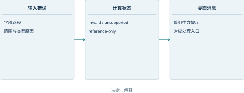
| 错误来源 | 当前表现 | 合适的界面位置 |
|---|---|---|
| 字段校验 | 错误字符串集合 | 表单下方或状态区 |
| JSON 解析 | 捕获异常 | 导入反馈 |
| 模型范围 | Result.errors | 结果卡片 |
| 存储失败 | storageError | 全局本地状态消息 |
| 弹窗阻止 | 报告窗口未打开 | 导出操作消息 |
| 扩展 API | code + field + message | 保持可读提示与机器语义 |
接口的副作用约束
相同输入的重量与参考插值不应因页面停留时间而改变；生成时间则是结果元数据中的时间值。纯函数计算与状态动作分开后，业务可以说明哪些输出是数学结果，哪些是会话信息。
文件导出和打印属于出口副作用。它们先取得当前有效结果，再创建文件或窗口，不修改计算输入。归档属于持久化动作，会改变历史数组，但不会修改归档对象中的 input。恢复则相反：它改变当前输入，而不把历史记录本身改写。
这种副作用分配让页面跳转保持轻量。路由切换负责展示页面，不应悄悄确认航班或重算性能。用户看到一个结果页面时，可以根据状态提示判断是否已经计算，而不必猜测导航是否触发了业务更新。
| 接口类别 | 允许的副作用 | 不承担的行为 |
|---|---|---|
| 纯规则函数 | 返回派生对象 | 页面跳转、存储、网络 |
| 状态动作 | 更新本地状态并发布 | 任意读取 DOM |
| 原生映射 | 写入兼容 Store 与目标 | 执行完整飞机物理过程 |
| 文件出口 | 创建下载资源 | 修改当前输入 |
| 历史恢复 | 载入旧输入为草稿 | 继承旧结果的有效资格 |
| 导航动作 | 切换内部路由 | 隐式确认或归档 |
参考：[L-F] 本地航班及计算领域模型；[L-S] 本地状态、原生映射与报告；[L-U] 本地业务页面实现
5.2 原生页面兼容接口
兼容层的输入输出
原生仪表盘和签派页面依赖既有 simBrief 切片结构。本地兼容层并不调用在线签派服务，而是把 Flight 转成该结构。输入是本地领域对象，输出是完整 SimBriefData 形状及一组目标变量。
映射从 initialState.data 的深复制开始，填入新的航班、重量、燃油和可读资料。完整对象替换比零散字段覆盖更易控制旧数据残留，例如换了目的机场后不应继续显示上一航班的资料片段。
原生名称被保留在兼容层内部。业务说明和界面使用“本地航班”，文件中使用 Flight 的字段；这样历史命名不会误导用户，也不会迫使新接口继承不准确的业务含义。
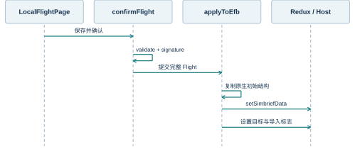
| 映射区域 | 本地来源 | 目的 |
|---|---|---|
| 航班标识 | number、date、机场 | 原生摘要 |
| 重量 | weights 及载荷字段 | 原生重量卡片 |
| 燃油 | rampKg、taxiKg | 燃油计划 |
| loadsheet | 输入和质量关系 | 可读 OFP 内容 |
| 宿主目标 | 确认后的质量 | 地面计划联动 |
质量与燃油的字段映射
本地模型用 number 保存质量，原生兼容结构中的许多重量字段使用字符串。转换在 applyToEfb 中集中完成。旅客、行李和额外货物既以各自字段写入，也形成 payload、cargo 和零油重等合计，使原生组件取得预期数据。
燃油结构保持计划含义。planRamp 等于 rampKg，planTakeOff 等于 rampKg-taxiKg。当前映射没有根据航程计算 enrouteBurn，也没有提供独立的计划着陆油量。因此这些占位值不能解释为完整签派燃油计划。
estLandingWeight 当前使用本地 TOW 作为兼容值，适合填充对象结构，却不是经过航程耗油推导的着陆重量。原生着陆计算页面仍应由用户输入本次所需的着陆条件。
| 原生字段 | 本地表达式 | 语义说明 |
|---|---|---|
| weights.payload | pax×(paxKg+bagKg)+freightKg | 有效载荷 |
| weights.cargo | pax×bagKg+freightKg | 行李与货物 |
| weights.estZeroFuelWeight | OEW+payload | 零油重 |
| weights.estTakeOffWeight | ZFW+rampKg-taxiKg | 计划起飞重量 |
| weights.estLandingWeight | 当前映射为 TOW | 兼容显示占位 |
| fuels.planRamp | rampKg | 停机坪计划油 |
| fuels.planTakeOff | rampKg-taxiKg | 起飞计划油 |
| fuels.enrouteBurn / planLanding | 当前为 0 | 未建模航程耗油 |
开发宿主中的目标与样例状态
确认计划后，本地适配器设置 EMPTY WEIGHT、TOTAL WEIGHT、零油重、全重和目标变量。TOTAL WEIGHT 及 GW 当前按停机坪总重写入，而参考 TOW 已扣除滑行油。区分这两个量，可以解释为什么某些原生页面显示的全重与参考页 TOW 不完全相同。
为了让燃油图具备可读的样例状态，开发宿主按固定密度把 rampKg 转为 US gallon，并按外侧、内侧、中央油箱顺序填入样例量。这个分配是浏览器展示适配，不是飞机加油逻辑，也不模拟时间推进。
计划同步直接调用 host.set，避免把应用主动同步误识别为用户修改目标。原生控件经 SimVar 写入目标时则经过 writeLocal，引发地面变化事件。两条路径的不同是为保持失效语义准确。
| 宿主变量 | 写入值 | 用途 |
|---|---|---|
| EMPTY WEIGHT | oewKg | 开发样例空重 |
| TOTAL WEIGHT | ZFW+rampKg | 停机坪总重显示 |
| L:A32NX_AIRFRAME_ZFW | ZFW | 零油重显示 |
| L:A32NX_AIRFRAME_GW | 停机坪总重 | 原生全重显示 |
| L:A32NX_FUEL_DESIRED | rampKg | 燃油目标 |
| 各油箱 QUANTITY | 质量按固定密度换算与分配 | 燃油示意图 |
反向读取的限定范围
兼容层采用有边界的反向读取。readFuelTarget 只读取 L:A32NX_FUEL_DESIRED，并检查其为非负有限数，再更新 Flight.rampKg。该函数不读取当前油箱总量，也不自动改变滑行耗油。
载重页面的反向映射更复杂，因为同样的总载荷可以由不同人数、平均重量、行李和货舱分布组成。当前系统没有从座位位图反解全部 Flight 字段。工作台保留明确的总量输入，用户在地面调整后回到工作台确认。
限定反向范围可避免不可逆映射造成的信息损失。例如，仅知道 ZFW 无法唯一确定旅客人数和货物质量。接口设计需要承认这种多对一关系，而不是把原生总重任意拆回一个看似精确的计划。
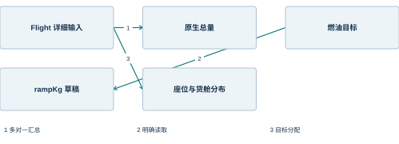
| 回读对象 | 是否有明确逆映射 | 当前处理 |
|---|---|---|
| 燃油目标质量 | 是 | 更新 rampKg |
| 零油重合计 | 否 | 不反推全部载荷字段 |
| 座位位图 | 需要布局与重量规则 | 不自动形成完整 Flight |
| 货舱总量 | 无法区分行李与额外货物 | 回工作台核对输入 |
| 实际飞机油量 | 含过程状态语义 | 不等同计划目标 |
参考：[L-S] 本地状态、原生映射与报告；[L-H] 浏览器宿主及静态服务；[EFB] EfbWrapper、Efb 与共享 Store
5.3 模拟器变量与事件接口
SimVar 接口形状
原生页面通过 SimVar.GetSimVarValue 和 SetSimVarValue 读写变量。本地宿主建立同名对象，使用 Map 保存变量名到值的映射，并提供注册式 ID 接口供共享 SDK 使用。该实现让原生调用路径在浏览器中成立。
读取按请求类型返回字符串或数值。数值读取统一调用 Number，解决十进制字符串写入后被下游当作字符串解析的问题；A: 前缀在本地读取时作为普通变量别名处理。未定义值当前回退为 0 或空字符串，这是开发替身的简化约定。
本地适配没有实现 MSFS 全部单位转换。调用方仍需采用已定义字段及单位，质量、体积或角度的特殊变换在对应业务适配中明确处理。真实宿主应按其 API 语义提供单位转换和变量支持信息。
| 接口 | 参数概念 | 本地实现 |
|---|---|---|
| GetSimVarValue | 名称、单位 | Map 读取并做类型转换 |
| SetSimVarValue | 名称、单位、值 | 写入并发布相关事件 |
| GetRegisteredId | 名称 | 登记名称并返回数组下标 |
| GetRegisteredSimVarValue | 注册 ID | 按登记名称读取 |
| SetRegisteredSimVarValue | 注册 ID、值 | 经同一写入路径更新 |
| GetGlobalVarValue | 名称、单位 | 转入普通读取逻辑 |
更新节拍与 React Hook
useSimVar 在初次渲染时取得变量值，随后通过 useUpdate 响应宿主更新事件。Hook 使用时间差判断是否达到 refreshInterval，达到后重新读取变量并更新 React 状态。不同页面可以为不同变量选择不同刷新周期。
本地宿主每 100 ms 向 instrument 节点派发 update 事件。该事件是界面采样节拍，不是飞机仿真步长。React 组件在每个节拍上可以选择读取，也可以因自身刷新间隔尚未到达而跳过。
setter 会调用宿主写接口，同时更新本组件的状态值。这带来即时操作反馈，但该反馈属于本地期望值。下一次宿主采样可能返回另一值，因此对真实持续动作的完成判断仍依赖回读。
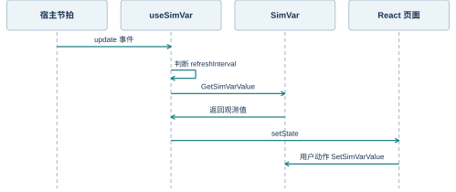
| 机制 | 时间语义 | 作用 |
|---|---|---|
| 本地 update | 每 100 ms | 驱动采样机会 |
| refreshInterval | 变量级最小间隔 | 限制读取频率 |
| 组件初值 | 首次渲染 | 提供初始显示 |
| setter 本地更新 | 用户动作后立即 | 操作反馈 |
| 后续回读 | 达到采样间隔后 | 与宿主值重新同步 |
Coherent 与监听器适配
共享代码除直接访问 SimVar 外，还使用 Coherent 和视图监听器。浏览器替身以事件名到回调集合的 Map 实现 on、off 与 trigger，监听器返回可清理句柄。Coherent.call 采用异步函数形状，使调用者可以继续沿用 Promise 调用方式。
本地实现只处理必要的调用子集。例如注册变量写入转到 writeLocal，METAR 查询返回空的气象文本，其他 GET 类调用可返回空集合。它的目的在于建立开发运行边界，而不是复刻所有模拟器服务。
事件订阅需要与组件生命周期对应。注册后持有清理句柄，卸载时移除回调，避免旧页面继续收到事件。状态层对地面变化事件的监听位于初始化入口，避免依据地址栏路径判断内部 MemoryRouter 页面。
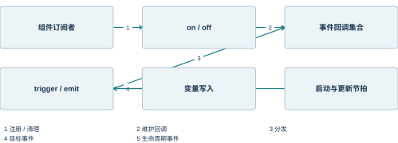
| 适配对象 | 提供的操作 | 本地语义 |
|---|---|---|
| Coherent | on / off / trigger / call | 事件总线与有限异步调用 |
| RegisterViewListener | on / trigger / ready | 返回本地监听器 |
| RegisterGenericDataListener | 数据回调与发送 | 命名事件转发 |
| AceInitialized | 启动事件 | 触发本地 React 挂载 |
| update | 周期事件 | 驱动原生采样 Hook |
| local-ground-change | 业务事件 | 撤销旧参考结果资格 |
请求完成与状态生效
模拟器接口中的写请求完成，不等于目标物理过程已经结束。写入燃油目标只表达期望油量，打开地面服务请求只表达操作意图。设备实际可用、连接完成或油量达到目标，需要从后续状态中判断。
在浏览器替身中，部分变量写入会立即体现在 Map 中，因此看起来没有通信延迟。真实宿主则可能有排队、条件拒绝和过程时间。前端业务不能因开发环境响应快，就把所有写入统一解释为完成。
接口设计将期望值、请求状态和观测值并列保存或显示。对于持续动作，界面可在请求接受后进入等待，在观测满足目标条件后进入完成，在超时或拒绝时显示原因。扩展协议的具体字段在下一节定义。
| 信息 | 能证明什么 | 不能单独证明什么 |
|---|---|---|
| 目标值 | 用户希望达到的状态 | 实际状态已经达到 |
| 写请求返回 | 接口调用完成 | 物理动作完成 |
| 接受回执 | 宿主接受了请求 | 最终效果出现 |
| 观测快照 | 某时刻实际回读值 | 未来状态不再变化 |
| 完成回执 | 对应动作达到完成条件 | 其他动作也完成 |
参考：[L-H] 浏览器宿主及静态服务；[FBW] FlyByWire 共享组件固定源码；[SIM] Microsoft SimVar JavaScript API
5.4 真实后端交换契约
会话与状态快照
扩展宿主协议以会话为边界。一次会话绑定 sessionId、aircraftId、modelVersion 和 capabilities。前端建立连接后先取得这些信息，再决定哪些控件可用。相同页面可以服务不同宿主，但不能在没有身份确认时混用上一会话的状态。
快照包含递增序号和采样时间。每个数据项同时包含值、单位和质量标志；缺失、无效、过期与正常零值分开表示。前端只接收当前会话内的新快照，较旧序号不会覆盖较新的观测。
该契约是本地宿主向真实模拟器迁移的设计接口，当前静态服务没有实现这些端点。后端由独立系统负责产生快照，EFB 仅消费其公开接口，不直接访问后端机型生产目录。
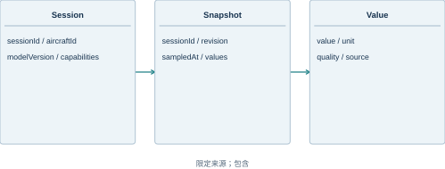
| 字段 | 建议类型 | 用途 |
|---|---|---|
| sessionId | string | 隔离不同运行会话 |
| aircraftId | string | 确认机型身份 |
| modelVersion | string | 记录后端模型版本 |
| revision | integer | 识别新旧快照 |
| sampledAt | UTC 时间 | 判断时效 |
| quality | valid / stale / unavailable | 区分质量状态 |
命令与回执对象
命令采用唯一 commandId，指定当前 sessionId、操作名、参数和发出时间。后端按请求标识识别重复提交，并返回明确的接受或拒绝信息。持续动作可以继续发送执行与完成状态，前端根据 commandId 关联同一次操作。
命令参数表达目标，而不是任意变量内存地址。例如燃油目标命令携带目标质量与单位，推回命令携带受支持的运动意图。后端拥有实际控制边界，负责判断当前状态是否允许执行。前端的按钮禁用只提供操作引导，不替代后端条件判断。
回执区分 accepted、running、completed、rejected 和 failed。accepted 不是 completed，失败信息包括稳定错误码和可读说明。断线重连后，前端可以查询请求状态，而不是无条件重复发送一次可能已经执行的动作。
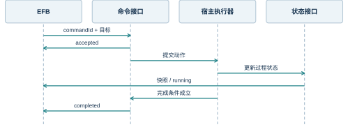
| 对象字段 | 含义 | 示例语义 |
|---|---|---|
| commandId | 一次命令的唯一标识 | 重复请求关联 |
| sessionId | 目标会话 | 禁止跨会话执行 |
| command | 领域操作名 | setFuelTarget |
| parameters | 有类型和单位的参数 | massKg、rateMode |
| status | 执行阶段 | accepted / completed |
| error.code | 稳定错误码 | 条件不满足、能力不支持 |
| observedRevision | 对应观测序号 | 关联实际状态 |
断线、重连与能力降级
连接中断后，前端保留最后快照用于解释界面，但将其质量标记为过期。控制入口依据连接状态与能力清单降级，避免用户把旧观测当作当前飞机状态。航班编辑和本地纯计算可以继续，因为它们不依赖实时控制链。
重连先重新确认会话身份。若 sessionId 或机型版本变化，前端丢弃旧会话的实时观测和待关联回执；本地航班草稿可以保留，但需要重新判断机型适用性。相同会话恢复时按序号取得最新状态，跳过过期消息。
能力清单是显式的功能开关来源。后端未声明推回控制时，前端不应尝试用其他未公开接口拼接该能力。前端可以展示不可用原因，使页面结构保持完整而不产生虚假的可操作入口。
| 连接情况 | 显示策略 | 控制策略 |
|---|---|---|
| 未连接 | 显示连接身份为空 | 宿主命令不可用 |
| 已连接 | 显示最新有效快照 | 按能力与状态开放 |
| 中断 | 保留值并标记过期 | 停止新增控制命令 |
| 同会话恢复 | 接收新序号 | 重新取得请求状态 |
| 新会话连接 | 重置旧观测关联 | 重新匹配机型与能力 |
参考：[SIM] Microsoft SimVar JavaScript API；[L-H] 浏览器宿主及静态服务
5.5 资料服务与文件接口
资料请求的领域边界
航图、天气和机场资料来自不同服务，但页面更适合使用稳定的领域对象。资料适配器负责把提供商响应转成机场、天气或航图索引，把认证与网络错误转成统一的服务状态。页面保留资料来源与时间，而不是直接展示未经解释的传输字段。
航图内容通常同时包含索引和图像资源。机场检索返回可选图表，用户选择后再取得具体页面及主题版本。天气则包含观测文本和解码值，两者应保持同一来源时刻，避免风来自新报文而气压仍来自旧报文。
当前浏览器交付保留原生资料页面，没有配置可用的商业服务凭据。资料服务边界使这些页面可以独立接入，而不影响本地航班工作台和参考算法。
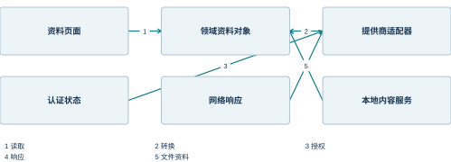
| 资料对象 | 关键属性 | 页面用途 |
|---|---|---|
| 机场 | 标识、名称、跑道资料 | 检索与选择 |
| 天气 | 原文、时间、风温压 | 气象显示或输入来源 |
| 航图索引 | 图号、类型、标题、提供商 | 列表与分类 |
| 航图页面 | 页码、资源、边界信息 | 浏览与定位 |
| 服务状态 | 连接、授权、错误 | 解释内容可用性 |
本地文件与资料文件的差异
航班 JSON 和航图文件属于不同接口。前者是应用定义的结构化数据，由 parseFlight 校验；后者是供资料阅读器呈现的图片或 PDF，需要相应本地资料服务或浏览器文件接口。不能把“支持 JSON 导入”扩展解释为“任意文档都能导入签派”。
原生本地航图入口与 SimBridge 等资料访问能力相关，界面中的本地二字描述资料来源，不等于静态 EFB 服务自动暴露了用户硬盘。文件访问应通过明确选择、目录配置或服务提供，不能让页面任意读取其他目录。
报告导出是单向文件生成。它把已经有效的结果转换为 HTML 或打印页面，不承担航图索引或机场资料的维护职责。分清文件类别，可以让用户在正确入口使用正确格式。
| 文件类别 | 入口 | 读取或生成规则 |
|---|---|---|
| 航班 JSON | 本地工作台导入 | Flight 模式与机型校验 |
| 结果 JSON | 参考结果导出 | 有效 Result 快照 |
| HTML 报告 | 报告导出或打印 | 转义文本与完整快照 |
| 本地航图 | 原生本地资料页面 | 依赖对应资料服务 |
| 机型配置 JSON | 应用启动 | 由固定发布路径读取 |
| 源码文件 | 构建工具 | 不作为用户业务文件导入 |
接口来源、时效和错误说明
一项资料进入业务流程时，需要同时保留内容、来源和时间。只保存一个数值会丢失它为何可信、何时取得以及适用于哪种环境的信息。当前手工跑道 source 是最小来源说明，外部服务接入可以扩展为结构化 provenance 对象。
错误处理区分无内容与请求失败。某机场没有某类航图属于合法空结果；授权失败、网络超时和内容解析失败则属于不同错误。页面需要给出可理解的状态，同时保留足够的诊断标识供维护者追踪。
当资料用于计算输入时，更新资料不能静默改写已经导出的报告。新资料形成新的 Flight 输入和签名，产生新结果；旧报告继续描述它生成时的快照。这使资料更新和结果追溯之间保持稳定关系。
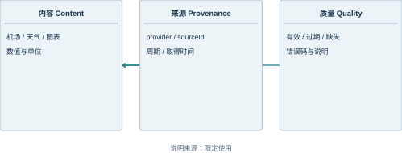
| 返回情况 | 语义 | 界面表达 |
|---|---|---|
| 成功且有内容 | 资料可显示 | 内容及来源时间 |
| 成功但空集合 | 没有匹配资料 | 无结果说明 |
| 未授权 | 访问条件不满足 | 账户或授权提示 |
| 超时或断线 | 尚未取得当前资料 | 重试或连接说明 |
| 内容过期 | 有旧资料但时效不足 | 时间与过期标识 |
| 解析失败 | 响应不符合领域格式 | 保留错误类别 |
参考：[EFB] EfbWrapper、Efb 与共享 Store；[CHART] FlyByWire Navigation & Charts 文档；[NAV] Navigraph 开发者接口文档；[AUTH] Navigraph 身份认证文档；[L-F] 本地航班及计算领域模型
6 界面框架与交互设计
6.1 导航结构与页面路由
一级业务域与二级标签
界面导航采用两级结构。左侧工具栏选择仪表盘、签派、地面、性能、导航资料、管制、故障、检查单、预设和设置等一级业务域；页面顶部标签选择域内子页面。这种结构保持入口稳定，同时允许一个业务域继续扩展。
本地航班加入签派域，本地起飞参考加入性能域。新增页面使用原生工具栏和状态栏，避免出现第二套全局导航。地面页增加的计划条只提供上下文摘要及返回工作台的入口，不代替原生燃油、载重等标签。
导航顺序与常用工作顺序相近，但不会强迫所有功能按固定步骤使用。用户可以从检查单进入资料页面，也可以从工作台直接进入性能页；业务前置条件由状态层解释，不能仅依赖“用户应该先走过某页”。
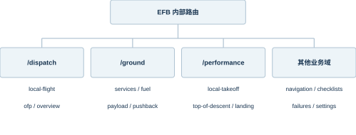
| 一级入口 | 二级功能 | 主要对象 |
|---|---|---|
| 签派 | 本地航班、OFP、概览 | 计划与资料 |
| 地面 | 服务、燃油、载重、推回 | 目标与宿主状态 |
| 性能 | 离线参考、TOD、着陆 | 计算输入与结果 |
| 导航 | 在线、本地、固定航图 | 资料索引及视图 |
MemoryRouter 的运行语义
原生 EFB 使用 MemoryRouter，路由历史保存在应用内存中。工具栏点击改变内部 history，浏览器地址栏可以一直停留在根地址。这适合嵌入模拟器仪表的运行方式，因为业务导航不需要依赖宿主 URL。
静态服务支持无扩展路径回退到 index.html，但这一回退只保证入口文件能够打开，不意味着浏览器直接访问 /ground/fuel 就一定恢复该业务标签。应用内部的初始路由仍由 MemoryRouter 决定。使用说明因此以导航按钮而不是手工拼接 URL 为主。
本地开发钩子 __EFB_NAVIGATE 调用同一内部 history，用于采集页面和调试。它不是公开业务 API，也不是通过修改 location.pathname 维持页面状态。地面目标失效等规则直接监听业务事件，与地址栏无关。
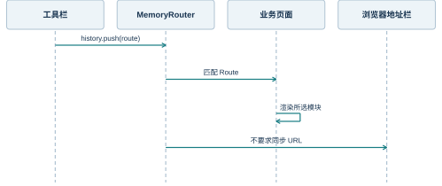
| 行为 | 内部路由 | 地址栏 |
|---|---|---|
| 点击左侧工具栏 | 更新 | 通常保持根地址 |
| 点击二级标签 | 更新 | 通常保持根地址 |
| 刷新整个页面 | 重新建立 | 仍访问静态入口 |
| 手工输入深层路径 | 入口可以回退 | 不保证标签恢复 |
| 开发导航钩子 | 调用内部 history | 不模拟浏览器跳转 |
跨页面上下文的保持
页面之间共享航班身份与确认状态，而各自保留局部视图状态。工作台负责编辑，仪表盘负责摘要，参考页负责当前计算，地面页负责目标和观测。切换页面不会因为组件离开屏幕就把航班变成另一个对象。
一些视图状态具有页面局部性质，例如图表缩放、选中标签、表单显示单位和当前搜索词。它们不必全部进入 Flight。把显示单位误存成业务单位，会使“只切换显示”也改变签名和计算输入，因此两者在组件中分开管理。
返回入口应明确告诉用户回到哪个业务对象。参考页的“编辑航班与重量”返回当前工作台，地面计划条显示当前航班号和重量摘要。用户由此可以判断自己正在操作哪一份计划。
| 状态 | 存放范围 | 跨页意义 |
|---|---|---|
| Flight 与确认 | 本地共享状态 | 同一航班上下文 |
| 参考 Result | 本地共享状态 | 结果与输入关系 |
| 原生配置 | 共享 Store | 所有相关页面使用 |
| 显示质量单位 | 工作台组件状态 | 只改变输入展示 |
| 航图缩放与旋转 | 导航页面状态 | 恢复阅读位置 |
| 搜索词或标签 | 对应业务切片 | 保存界面选择 |
参考：[EFB] EfbWrapper、Efb 与共享 Store；[L-U] 本地业务页面实现；[L-S] 本地状态、原生映射与报告
6.2 表单、单位与输入反馈
字段组件与可访问标签
本地字段组件把文字标签和输入控件组合成一个单元，并提供 aria-label 和稳定的 data-field。可读标签服务用户和辅助技术，稳定字段名服务组件识别与维护，二者可以采用不同语言但对应同一业务字段。
数值输入的空值转换为 NaN，而不是默默当作 0。这样用户清空一个字段时，校验能够报告缺失的有效数值，而不会把意外空白解释成合法零重量或零距离。格式化函数对非有限数显示占位符，避免 NaN 直接成为业务结果。
部分字段只读，例如当前资料包固定 OEW。只读显示允许用户看见计算所用基准，又避免通过任意修改绕过资料包身份。字段能否编辑由业务语义决定，不仅由视觉样式决定。
| 输入情况 | 内部表示 | 反馈 |
|---|---|---|
| 有效数字 | number | 正常派生与显示 |
| 清空数值框 | NaN | 输入待修正 |
| 机场小写输入 | 转为大写文本 | 按 ICAO 规则校验 |
| 只读 OEW | 固定资料值 | 可见但不可任意编辑 |
| 无效结果数值 | null 或非有限值 | 显示占位符 |
显示单位与内部单位
内部模型保持固定单位，用户选择只改变字段的显示和输入转换。工作台从 kg 换成 lb 时，用 massConvert 把内部值转换后显示；用户修改该字段时，再从 lb 转回 kg 保存。单纯改变下拉框不会重写原始业务值。
距离和压力采用同样机制。跑道距离可在 m 与 ft 间显示，QNH 可在 hPa 与 inHg 间显示。标高字段明确使用 ft，不随跑道距离单位一起变化。标签直接写出当前单位，使局部设置的作用范围可见。
显示精度和计算精度分开。输入控件为可读性限制小数位，领域计算保留内部数值；结果卡片和报告根据场景格式化。单位往返时不能不断把显示舍入结果当作唯一原始值，否则反复切换会累积误差。
| 物理量 | 内部单位 | 可选显示单位 |
|---|---|---|
| 质量 | kg | kg / lb |
| 跑道长度 | m | m / ft |
| 压力 | hPa | hPa / inHg |
| 跑道标高 | ft | ft |
| 风速与参考速度 | kt | kt |
| 方向 | degree | degree |
即时反馈与提交反馈
即时反馈针对草稿内容，例如质量卡片和输入错误列表。提交反馈针对一个动作是否完成，例如“本地航班与重量已确认”。两者同时存在，使用户既能边输入边理解合计，也能知道当前计划是否已进入共享业务流程。
计算按钮不通过页面颜色判断能否计算，而由 runCalculation 检查确认内容和地面变化。结果出口按钮使用 currentResult 的布尔值禁用或启用。页面的视觉状态和应用层规则因此使用同一个有效性来源。
错误提示尽量说明原因和下一步入口。文件导入失败说明原航班被保留；结果过期说明需要重新确认并计算；模型不支持说明是哪一种条件超出范围。这样的文字直接服务用户，不要求用户理解内部异常栈。
| 反馈类型 | 出现位置 | 表达内容 |
|---|---|---|
| 草稿合计 | 重量卡片 | 当前输入派生值 |
| 字段错误 | 输入待修正区域 | 具体字段或范围 |
| 动作成功 | 状态消息条 | 已确认、已保存等 |
| 结果过期 | 结果标题与出口按钮 | 当前值不再可用 |
| 模型不支持 | 结果原因列表 | 对应条件尚无修正 |
| 存储失败 | 优先状态消息 | 建议导出以保存工作 |
参考：[L-U] 本地业务页面实现；[L-F] 本地航班及计算领域模型；[L-S] 本地状态、原生映射与报告
6.3 布局、缩放与长内容
逻辑画布与可视区域
原生 EFB 以平板尺寸组织布局，浏览器宿主采用 1430×1000 逻辑画布承载它。缩放比例取浏览器可用宽度比例与可用高度比例中的较小值，使整幅画布保持比例。底部模式说明条单独占据浏览器空间。
画布内部的 viewport 类转换为逻辑尺寸，避免 w-screen 先使用浏览器窄宽度，再整体缩放一次导致内容二次缩小。仪表容器的物理宽高则设为缩放后的值，不保留一个不可见但仍撑开滚动条的原始大盒子。
窄侧栏中可以完整看到页面，但阅读和输入仍更适合较宽窗口。设计目标是保持完整布局与可达性，而不是把原生平板每个复杂页面重新排成手机纵向表单。
| 布局对象 | 尺寸依据 | 目的 |
|---|---|---|
| 逻辑画布 | 1430×1000 | 保持原生布局 |
| 显示容器 | 逻辑尺寸乘缩放率 | 不产生隐形溢出 |
| 模式说明条 | 实际内容高度 | 为页脚预留空间 |
| 内部 w-screen / h-screen | 逻辑画布尺寸 | 避免双重缩放 |
| 窗口变化 | resize 与尺寸观察 | 动态重新计算 |
长页面和局部滚动
本地工作台、历史记录及原生载重页面包含较多内容，采用页面内容区滚动，而不是让浏览器整页无限拉长。工具栏和状态上下文因此保持稳定，用户可以在业务域内查找较低位置的控件。
地面页顶部新增计划摘要后，原生内容区的可用高度相应减少。宿主样式为地面内容提供明确高度及纵向滚动，使燃油目标和下方载重控制仍可到达。只在外层裁切画布而不处理内部高度，会隐藏底部按钮。
滚动是内容布局的一部分。操作说明在控件位于首屏以下时明确提示在地面内容区下滚，而不把隐藏在下方的按钮描述为缺失功能。
| 区域 | 滚动行为 | 典型内容 |
|---|---|---|
| 全局工具栏 | 固定在平板布局中 | 一级导航 |
| 地面内容区 | 纵向滚动 | 载重下部控制 |
| 工作台 | 内容区可浏览 | 完整字段与提示 |
| 历史区域 | 随业务内容延展 | 近期记录列表 |
| OFP 阅读区 | 文档自身滚动 | 长签派资料 |
| 报告窗口 | 浏览器文档滚动 | 输入快照与打印内容 |
界面、报告与无数据状态
交互界面使用原生深色主题，适合显示高密度仪表信息；报告使用白底、明确标题和普通文档行距，适合阅读与打印。两种表现形式读取同一数据快照，因此改变输出媒介不会改变计算来源。
无数据状态是正常业务状态的一部分。尚未确认航班时，首页显示编辑入口；没有历史时，历史区解释如何保存；没有固定航图时，页面保留导航入口。空态需要提供对象含义及可用动作，不能只剩无标识的空白背景。
本地版启动修订也遵循这一原则：加载时显示启动状态，休眠时显示唤醒按钮。页面无法提供外部资料时，用户仍应能辨认软件在运行，并知道哪些区域取决于外部连接。
| 界面状态 | 表达方式 | 可用动作 |
|---|---|---|
| 未确认航班 | 文字与编辑按钮 | 进入工作台 |
| 未计算 | 等待计算提示 | 确认后计算 |
| 无历史记录 | 空列表说明 | 保存有效结果 |
| 无固定航图 | 资料空态 | 进入航图页面 |
| 平板休眠 | 休眠文字与按钮 | 唤醒 |
| 报告阅读 | 白底文档与范围说明 | 保存、打印 |
参考：[L-H] 浏览器宿主及静态服务；[L-U] 本地业务页面实现；[EFB] EfbWrapper、Efb 与共享 Store
6.4 状态提示与操作一致性
状态提示的分级
提示按对当前动作的影响分级。普通通知说明已保存或已恢复；输入错误阻止确认；模型范围说明阻止生成参考速度；结果过期阻止归档与报告；存储错误说明当前工作尚未可靠保存。不同级别对应不同操作后果。
颜色只是提示的一部分。结果卡片同时显示状态标题、具体原因及按钮可用性，用户可以从文字理解问题。报告保留能力范围说明，使离开交互界面的文件仍能表达结果性质。
全局模式条持续标识浏览器开发模式和本地模拟数据。这是运行身份信息，不随用户进入某个页面而消失。与局部状态提示相比，它回答的是“当前软件连接了什么”，而不是“刚才这一步是否完成”。
| 提示层次 | 有效范围 | 示例 |
|---|---|---|
| 运行模式 | 整个应用会话 | 本地模拟数据 |
| 业务状态 | 当前航班 | 等待确认重量 |
| 计算状态 | 当前 Result | 结果已过期 |
| 动作通知 | 最近用户动作 | 导入失败保留原航班 |
| 字段错误 | 具体输入 | 滑行耗油超过停机坪油 |
破坏有效性的动作保持可见
输入改变会清除确认并使旧结果失效。界面保留原数字时必须同时呈现过期状态，避免用户仅因数字仍在屏幕上就继续使用。导出按钮的禁用和过期提示共同表达这一变化。
恢复历史与读取地面燃油目标也属于输入改变，而不是“撤销过期”的快捷方式。两者形成新的当前草稿，随后经过确认与计算。这样用户无论从哪个入口改变数据，都遵循相同的有效性规则。
当前实现中的按钮顺序把编辑、确认、计算、保存和导出分开呈现。动作数量并不是目的；每个动作对应不同的数据状态，因而可以在说明书中清楚解释其结果。
| 用户动作 | 数据变化 | 界面后果 |
|---|---|---|
| 修改输入 | 新 Flight | 等待确认 |
| 读取燃油目标 | rampKg 改变 | 旧结果过期 |
| 恢复历史 | input 载入为草稿 | 需要重算 |
| 地面目标修改 | groundChanged=true | 导出不可用 |
| 确认并计算 | 新 Result | 符合条件时恢复出口 |
一致的异常恢复路径
恢复路径尽量回到用户熟悉的业务入口。输入错误留在当前表单修正；文件错误允许选择另一个文件；过期结果引导重新确认；打印弹窗被阻止时提供 HTML 导出；外部资料失败保持本地业务可用。恢复不要求用户使用开发控制台修改内部变量。
刷新页面是重新装载应用，而不是通用的业务提交动作。未成功持久化的内容可能无法通过刷新恢复，已保存的草稿则可以重新读取。因此保存错误提示优先于普通通知，提醒用户先通过文件保留工作。
操作说明中的异常处理只描述用户可以执行的动作。内部日志、源码路径和接口语义放在设计与维护部分，避免把最终使用者的操作流程写成开发调试任务清单。
| 问题 | 用户恢复入口 | 保留的数据 |
|---|---|---|
| 字段不合法 | 当前表单 | 草稿 |
| 文件格式不正确 | 重新选择 JSON | 原航班 |
| 结果过期 | 保存确认与本地计算 | 当前输入 |
| 浏览器阻止打印窗口 | 导出报告 HTML | 有效结果 |
| 本机存储失败 | 导出航班 JSON | 当前内存草稿 |
| 外部资料不可用 | 账户或连接设置 | 本地计划与计算 |
| 平板休眠 | 唤醒 EFB | 业务会话 |
参考：[L-U] 本地业务页面实现；[L-S] 本地状态、原生映射与报告；[L-H] 浏览器宿主及静态服务
7 本地航班模块详细设计
7.1 航班工作台与草稿编辑
页面组成与数据绑定
LocalFlightPage 分为工具条、状态消息、重量卡片、航班信息、载荷燃油以及关联页面入口。页面通过 useLocal 订阅当前状态，用组件局部的 unit 保存质量显示单位。Flight 的字段值由共享状态提供，显示单位则只属于当前页面。
普通字段的 set 函数使用对象展开形成新 Flight，同时把 source 改为 local-manual。质量字段先执行单位转换，再进入同一编辑动作。由此，无论用户修改航班号还是燃油，状态层都能统一撤销旧确认，而不是为每个控件维护不同的失效逻辑。
WeightCards 每次从当前 Flight 调用 weights，显示 OEW、载荷、ZFW 和 TOW。卡片是草稿的即时解释，不保存另一套合计字段。
| 页面区域 | 读取内容 | 主要动作 |
|---|---|---|
| 顶部工具条 | 当前航班 | 新建、导入、导出、确认 |
| 状态区 | notice / storageError | 显示反馈 |
| 重量卡片 | weights(flight) | 即时派生 |
| 航班字段 | 身份、机场和航路 | 编辑文本 |
| 载荷燃油 | 质量和人数 | 编辑及单位转换 |
| 关联入口 | 当前上下文 | 进入地面或参考页 |
草稿更新的执行轨迹
editFlight 用一个新对象替换 state.flight，清空 confirmed，清除旧的 groundChanged 标志，并根据是否已有结果选择通知文字。随后 publish 保存整个本地状态并通知订阅者。已有 Result 可以保留，但其签名与当前输入不再匹配。
清除 groundChanged 不表示地面变化已经被确认。草稿编辑本身已经撤销 confirmed，因此计算入口仍然关闭。两个条件表达不同事实：confirmed 说明当前草稿有没有被确认，groundChanged 说明确认之后外部目标是否又变了。
订阅者集合使用函数引用进行注册与清理。useLocal 在组件挂载时加入更新函数，在卸载时移除，避免切换页面后继续通知已离开的组件。
| 状态项 | 编辑前示例 | 编辑后示例 |
|---|---|---|
| rampKg | 30000 | 31000 |
| TOW | 184500 | 185500 |
| confirmed | 旧内容表示 | 空字符串 |
| result | 上一次 Result | 保留但失效 |
| groundChanged | 可能为 true | false，草稿仍未确认 |
新建航班与默认值
“新建航班”以 example() 生成完整对象，再替换 id、number 和 source。新对象具有可用的结构、跑道和天气默认值，便于用户从完整模板开始编辑。默认值是本地样例，不代表系统已获取该机场当天资料。
id 使用当前时间形成本地标识，航班号初始化为 LOCAL330。新建操作走 editFlight，因此不会自动形成确认或有效结果。历史列表和最近结果仍属于状态容器中的其他字段，其可用性由签名决定。
默认值与只读值不同。跑道、天气和载荷样例可由用户修改；OEW 则受当前资料包固定值约束。界面通过字段可编辑性和说明文字区分两类信息。
| 默认项目 | 样例内容 | 后续处理 |
|---|---|---|
| 航班身份 | LOCAL + 时间标识 | 保持对象区分 |
| 航班号 | LOCAL330 | 用户编辑 |
| 机场 | ZUTF / ZSPD / ZSSS | 用户填写本次资料 |
| 载荷 | 250 人及平均质量 | 按场景修改 |
| 燃油 | 30000 kg、滑行 500 kg | 按计划修改 |
| 跑道气象 | 人工示例 | 按资料录入 |
| OEW | 127000 kg | 由资料包约束 |
输入过程中不完整数据的处理
用户输入不是一次性形成完整对象。清空数字、输入一半机场代码或改变距离单位时，页面会经历短暂的不完整状态。草稿允许这些中间状态存在，确认动作则要求所有当前规则通过。若每次按键都强制回退到旧合法值，用户将难以编辑多位数字。
当前界面将空数值表示为 NaN，字段显示为空，validate 报告非有限数问题。重量卡片格式化函数对无效派生量使用占位符，而不是显示“NaN kg”。用户继续填入合法数字后，派生卡片自然恢复。
即时保存不等于文件一定可以再次作为合法输入导入。导出的草稿可能尚未满足校验，重新导入时仍经过完整 parseFlight。用户进行跨机交换前，先完成确认可以尽早发现输入问题。
| 阶段 | 允许中间值 | 业务出口 |
|---|---|---|
| 正在输入 | 可以暂时不完整 | 显示即时错误 |
| 保存草稿 | 保持当前编辑 | 本机恢复用途 |
| 确认计划 | 全部规则通过 | 同步原生页面 |
| 执行计算 | 确认与输入匹配 | 生成 Result |
| 导入文件 | 整体通过校验 | 替换当前草稿 |
参考：[L-U] 本地业务页面实现；[L-S] 本地状态、原生映射与报告；[L-F] 本地航班及计算领域模型
7.2 校验规则的组织与实现
从对象结构到业务约束
validate 分阶段执行。第一层检查输入是否为对象、模式与机型身份是否匹配、文本与数字类型是否正确；随后检查 runway 和 weather 子对象以及字段类型；基本结构通过后，再执行人数、质量、跑道和气象的业务范围检查。
这种顺序避免在缺少子对象时继续访问深层字段。函数尽量收集同一阶段的多个错误，让用户一次看到相关问题，而不是每次只改一个字段再收到下一条提示。
数据合法性与模型支持范围保持分离。validate 不因为湿跑道就判定文件格式错误；calculate 在其后判断是否有相应速度修正数据。
| 校验层 | 代表规则 | 失败含义 |
|---|---|---|
| 容器 | 对象且不是数组 | 输入结构错误 |
| 身份 | 模式 1、机型包匹配 | 格式或机型不兼容 |
| 类型 | 有限数字、布尔、文本 | 值的表示不正确 |
| 格式 | 机场、日期、跑道编号 | 字符串含义不符合约定 |
| 范围 | 人数、质量、气象边界 | 超出录入范围 |
| 关系 | 滑行油、声明距离、结构重量 | 字段之间不一致 |
质量约束的相互作用
单字段合法并不保证组合合法。旅客人数、平均质量和货物都为非负值时，合计 ZFW 仍可能超过结构配置值；停机坪燃油本身在上限内时，加入载荷后的 TOW 也可能超过 MTOW。validate 因此在基本数字检查后调用 weights 检查合计。
固定 OEW 的校验保证当前参考资料包与模型一致。把 OEW 修改为更小值虽然会降低 TOW，却会改变机型配置，不能被当作普通编辑捷径。另一个资料配置可以采用不同 OEW，但需要具有自己的身份和来源。
燃油上限采用当前本地配置常量，滑行耗油不得大于停机坪燃油。容量显示与质量上限可能受密度和取整影响而存在小差别，界面中的显示值不替代校验规则本身。
| 规则 | 表达式或条件 | 解释 |
|---|---|---|
| 人数为整数 | Integer(pax) | 人数不是连续质量 |
| 单人质量 | 1 ≤ paxKg ≤ 200 | 当前录入约束 |
| OEW 固定 | oewKg = 127000 | 对应资料包 |
| 燃油关系 | taxiKg ≤ rampKg | 起飞油量非负 |
| 零油重 | ZFW ≤ 181000 | 结构配置限制 |
| 起飞重量 | TOW ≤ 251000 | 结构配置限制 |
| 参考表范围 | 130000 ≤ TOW ≤ 250000 | 在 calculate 中另行判断 |
跑道与环境校验的语义
跑道校验先保证可用距离关系，再检查位置扣减。intersection 必须非负且小于 TORA，因此 effectiveTora 为正。该规则只保证输入自洽，不说明扣减后距离足以满足某次起飞性能要求。
方向允许 0～360°，风速为非负值。气压、气温、标高和坡度有本地输入范围，防止明显异常数据进入公式。范围属于软件录入规则，不能反推为飞机或机场在整个范围内都具有运行适用性。
跑道编号使用两位数字及可选 L、R、C 的格式表达。当前正则检查格式形状，不承担机场数据库核实。因此存在某个编号字符串，不表示该机场真实拥有这条跑道。
| 输入类别 | 当前规则 | 规则的边界 |
|---|---|---|
| 跑道编号 | 两位数字 + 可选 L/R/C | 不查询真实机场 |
| TORA | 大于 0 且不超过 10000 m | 不计算性能余量 |
| TODA / ASDA | 不小于 TORA | 声明距离一致性 |
| 扣减 | 0 ≤ intersection < TORA | 保证有效滑跑距离为正 |
| 方向 | 0～360° | 坐标值合法 |
| 气象与标高 | 规定的录入范围 | 不是完整性能包络 |
错误集合与原子导入
文件导入使用完整校验结果决定是否替换航班。只要错误集合非空，parseFlight 抛出包含原因的异常，页面保留原计划。这种原子行为避免一份损坏文件先改了机场、后发现重量错误，却留下半新半旧的状态。
表单编辑则不同：它允许用户保留不完整草稿，并通过错误区持续显示问题。两种行为并不矛盾，因为文件导入是外部对象的整体替换，表单编辑是当前对象的逐步构造。
这种边界设计也便于扩展模式迁移。迁移器先在临时对象上完成转换和校验，只有最终对象合法才进入 loadFlight，不让转换的中间值泄漏到当前业务状态。
| 入口 | 允许部分更新 | 失败后的对象 |
|---|---|---|
| 单字段编辑 | 是，属于当前草稿 | 保留用户正在编辑的值 |
| JSON 导入 | 否 | 保持原 Flight |
| 历史恢复 | 先取得完整 input | 经正常加载路径 |
| 模式迁移 | 仅在临时对象上 | 成功后整体提交 |
参考：[L-F] 本地航班及计算领域模型；[L-U] 本地业务页面实现；[L-S] 本地状态、原生映射与报告
7.3 确认、同步与业务状态转换
确认动作的执行顺序
confirmFlight 先校验当前 Flight，失败时只更新通知并返回 false。成功后，将当前 signature 写入 confirmed，清除 groundChanged，设置确认消息，再调用 applyToEfb 和 publish。确认因此同时建立业务身份和页面共享投影。
确认并不生成新的性能结果。它只说明当前输入满足规则并已提交给相关页面。runCalculation 仍是独立动作，读取确认后的当前输入和资料包生成 Result。将二者分开，可以让用户在多个页面核对同一计划而不每次都触发计算。
当前实现是在单浏览器线程中顺序执行，没有跨进程事务。未来若 applyToEfb 改为远端异步接口，需增加同步状态和失败回执，不能把现有同步函数直接视为分布式原子提交。
| 步骤 | 修改内容 | 与计算的关系 |
|---|---|---|
| 校验 | 得到错误或通过 | 保证输入合法 |
| 记录签名 | confirmed | 锁定确认对象 |
| 清除地面变化 | groundChanged=false | 建立新计划基准 |
| 兼容映射 | Store 与目标 | 相关页面同一计划 |
| 发布 | 存储和 UI 通知 | 不自动生成 Result |
确认后的目标初始化
确认计划把燃油、零油重和全重等目标写入开发宿主，并把原生 fuelImported、payloadImported 标志置为 false。原生页面可以据此将新的航班计划作为待导入目标处理，而不是继续把旧的“已导入”状态用于新航班。
目标初始化使用同一份 Flight 和同一次 weights 返回值。这样仪表盘 ZFW、签派资料中的载荷合计和地面计划条具有共同来源。不能在每个页面分别采用不同的旅客平均质量重新计算同一个计划。
开发宿主还为当前油箱显示分配样例值，方便本地页面阅读。设计上该分配属于宿主演示行为，与计划目标本身分开命名和说明。接入真实后端时，应由真实快照替换样例当前值，而不是把计划同步当作实际油量回执。
| 同步目标 | 来自当前计划 | 后续使用者 |
|---|---|---|
| 燃油目标 | rampKg | 原生燃油页 |
| ZFW 目标 | weights.zfw | 载重页 |
| GW 目标 | weights.ramp | 原生重量显示 |
| 每人质量 | paxKg | 原生载重规则 |
| 每件平均行李质量 | bagKg | 原生载重规则 |
| 兼容导入标志 | 重置为待导入 | 原生计划导入流程 |
计算资格与地面变化
runCalculation 的前置条件是 confirmed 与当前 signature 完全相同，且 groundChanged 为 false。该判断在状态层执行，因此即使某个页面错误地让按钮保持可点击，也不会绕过业务规则直接产生新结果。
地面目标变化事件只在确认存在且尚未标记变化时设置 groundChanged。这避免同一次地面调整中的连续写入重复产生相同通知。随后 currentResult 失效，报告出口和历史保存同步关闭。
用户读取新燃油目标或修改其他输入后，editFlight 清除确认；再次确认重新建立基准。这个循环保证“当前计划”是一个有可见提交点的对象，而不是所有页面同时可写的松散变量集合。
| confirmed 匹配 | groundChanged | 计算资格 |
|---|---|---|
| 否 | 任意 | 要求先确认 |
| 是 | true | 要求核对地面变化 |
| 是 | false | 允许执行当前参考计算 |
| 历史恢复后为空 | false | 仍需重新确认 |
确认状态的恢复与显示
程序初始化读取本机状态后，initializeLocal 只在 confirmed 与当前 signature 一致时重新映射原生页面。未确认草稿可以恢复到工作台，但不会因此自动变成仪表盘中的确认航班。这个区别让草稿保存和业务提交各自保持意义。
签名比较包含当前资料包和内核版本，因而升级资料后旧确认可能不再匹配。用户仍能查看草稿并重新确认，而不必丢弃全部输入。界面应把这种情况解释为需要重建当前确认，而不是简单说文件已经损坏。
存储错误优先显示，防止一条“确认成功”消息掩盖本机保存失败。当前内存状态仍可继续使用，但用户应通过 JSON 出口保留工作。
| 恢复内容 | 确认签名情况 | 运行表现 |
|---|---|---|
| 合法未确认草稿 | 空或不匹配 | 工作台继续编辑 |
| 合法已确认计划 | 当前签名匹配 | 恢复原生投影 |
| 资料包已变化 | 旧确认不匹配 | 重新确认当前资料 |
| 存储内容不合法 | 校验失败 | 保留错误说明与样例初值 |
| 保存失败 | 内存仍存在 | 提示文件导出 |
参考：[L-S] 本地状态、原生映射与报告；[L-F] 本地航班及计算领域模型；[L-U] 本地业务页面实现
7.4 文件交换与报告生成
文件选择与重复导入
工作台使用浏览器文件选择控件读取 JSON。处理器等待 file.text() 得到完整文本，再交给 parseFlight；成功后调用 loadFlight，失败时更新 notice。处理结束后清空文件输入控件的 value，使用户可以再次选择同一个已修正文件。
文件控件的 accept 属性用于帮助用户选择 .json，并不能代替内容校验。扩展名正确的文件仍可能含有错误模式或无效数值，导入器始终根据内容判断。界面把失败与“原航班保留”一起说明，减少用户担心当前工作已被覆盖。
导出航班 JSON 直接使用当前 Flight，不需要在线服务。导出文件适合备份和跨浏览器迁移，导入之后仍遵循草稿、确认和计算的正常流程。
| 处理环节 | 目的 | 失败行为 |
|---|---|---|
| 选择过滤 | 提示 JSON 类型 | 仍以内容校验为准 |
| 完整读取 | 获得文本 | 显示读取错误 |
| 解析和校验 | 形成合法对象 | 保留原航班 |
| 载入草稿 | 统一状态路径 | 撤销旧确认 |
| 重置文件控件 | 允许重新选择同一文件 | 不删除用户文件 |
报告的数据装配
reportHtml 从 currentResult 取得当前有效对象，读取其中的输入、质量、参考速度、辅助量、版本和生成时间。报告不重新调用 calculate，因此不会在导出时形成另一组与屏幕不同的计算值。
报告正文先显示结果性质与缺少的性能能力，再列航班和跑道身份、质量与 V2 参考、压力高度、风分量、扣减后 TORA，最后附完整输入及结果快照。短摘要便于阅读，完整快照便于追溯。
V2 在报告中同时显示小数参考和上取整数，二者来自同一底层结果。上取整仅是显示方式，不能补足未建模的风、温度、坡度或跑道限制修正。
| 报告区块 | 数据来源 | 目的 |
|---|---|---|
| 航班摘要 | Result.input | 识别计算对象 |
| 质量与速度 | Result.weights / v2 | 解释主要输出 |
| 环境辅助量 | 同一 Result | 保留输入环境关系 |
| 版本信息 | profileVersion / engineVersion | 识别规则与资料 |
| 完整快照 | Result 序列化 | 保留可追溯上下文 |
HTML 安全呈现与打印
报告模板中的用户文本经过 esc 转义，处理 &、尖括号以及引号。航班号和航路即使包含 HTML 片段，也应作为文字显示。当前本地 loadsheet 同样使用这一转义入口，避免原生 HTML 阅读器执行用户输入中的标记。
打印功能先生成报告，再打开独立窗口写入 HTML。窗口被浏览器阻止时抛出可读错误，用户可改用“导出报告 HTML”。打印媒体样式隐藏按钮，使纸面内容保留报告而不带交互控件。
报告样式采用普通文档宽度、白色背景和深色文字，与原生深色 EFB 区分。这样无需在打印时对整幅屏幕截图做反色处理，也不会丢失可选择的文字。
| 处理对象 | 实现方式 | 效果 |
|---|---|---|
| 用户文本 | HTML 字符转义 | 按文字而不是标签显示 |
| JSON 快照 | 转义后置于 pre | 保留结构化内容 |
| 报告窗口 | window.open 后写入完整文档 | 独立阅读与打印 |
| 弹窗受阻 | 抛出操作提示 | 可切换 HTML 下载 |
| 打印按钮 | @media print 隐藏 | 不进入纸面正文 |
| 下载文件 | Blob 与安全文件名 | 浏览器本地保存 |
历史记录与文件出口的组合
本机历史适合快速回到最近一次计算的输入，JSON 适合继续编辑，HTML 适合阅读。三种方式可以组合使用，但没有一种自动代替另外两种。历史记录被截断后，已导出的文件仍可保留；HTML 文件则不能直接作为 Flight 导入。
归档操作把结果快照放在历史数组前端，并保留原来的生成时间。恢复按钮明确标注“需重算”，让用户知道它恢复的是输入而不是当前计算资格。新结果生成后可以再次保存，形成新的记录。
这种设计使技术追溯不依赖记住用户曾经点击过什么。记录对象已经包含输入、结果和版本；使用说明只需要解释如何保存、恢复和导出，而不必让用户另行维护一份操作任务表。
| 后续目的 | 适合使用的出口 | 再次进入软件 |
|---|---|---|
| 继续修改航班 | 航班 JSON | 工作台导入 |
| 比较近期输入 | 本机历史 | 恢复后确认重算 |
| 保留计算上下文 | 结果 JSON | 作为结果记录阅读 |
| 打印或发送可读说明 | HTML 报告 / 打印 PDF | 浏览器阅读 |
| 迁移到另一浏览器 | 航班 JSON | 不依赖原站点存储 |
参考：[L-S] 本地状态、原生映射与报告；[L-U] 本地业务页面实现；[L-F] 本地航班及计算领域模型
8 仪表盘与签派模块详细设计
8.1 航班摘要与聚合视图
FlightWidget 的显示模型
FlightWidget 从原生 simbrief.data 读取航班号、出发和到达机场、时刻、航路、巡航高度、平均风和重量。airframeInfo 提供机型显示名称，flightProgress 提供进度值。组件把这些来源组合成用户的航班摘要。
时刻以秒级时间戳字符串进入原生模型，组件转换为 UTC 小时和分钟并附 Z。巡航高度除以 100 后以 FL 格式显示。零油重从原生字符串转换为数字，再按吨级显示精度格式化。格式化负责阅读，不改变领域模型中的 kg 数值。
本地构建把原导入入口转为“编辑本地航班”。点击后直接进入工作台，不发起 SimBrief 请求。未确认计划时保留明确空态，确认后显示兼容映射得到的资料。
| 显示项 | 原生来源 | 显示处理 |
|---|---|---|
| 起降机场 | departingAirport / arrivingAirport | ICAO 与名称 |
| 航班号 | airline + flightNum | 身份摘要 |
| 计划时刻 | schedOut / schedIn | UTC HHMMZ |
| 巡航高度 | cruiseAltitude | 转换为 FL |
| 零油重 | estZeroFuelWeight | 字符串解析与吨级格式 |
| 平均风 | weather.avgWindDir / avgWindSpeed | 方向 / 速度 |
进度显示与地理状态
原生 Efb 使用当前位置到目的地距离与起终点距离计算 flightPlanProgress，再写入共享切片。它表达相对于起终点的地理进度，不是完整航路各航段距离累计。绕飞、复杂航路或数据缺失时，两种进度定义可能不同。
本地宿主提供人工经纬度，兼容计划又没有完整导航航段，因此仪表盘进度只属于开发展示。它不能作为真实航路执行的证据，也不用于驱动本地 V2 参考计算。模块之间只共享必要信息，避免一个看似直观的图形变成隐含控制输入。
摘要页保留出发、到达机场和时刻，有助于用户识别当前计划。航班确认才是数据同步入口，单纯在仪表盘停留不会自动从外部服务替换计划。
| 数据项 | 含义 | 模块使用方式 |
|---|---|---|
| 当前位置 | 宿主经纬度 | 地理进度输入 |
| 起终点位置 | 航班机场位置 | 参考距离 |
| flightPlanProgress | 派生百分比 | 进度条显示 |
| 本地航路文字 | 手工描述 | 不参与航段跟踪 |
| 本地参考计算 | 重量与构型等 | 不依赖仪表盘进度 |
提醒组件与个性化排列
仪表盘右侧的 RemindersWidget 聚合天气、固定航图、维护和检查单提醒。每种提醒是独立组件，按一组持久化键的顺序渲染。用户调整的是阅读顺序，不是业务执行顺序。
REMINDER_WIDGET_ORDERED_KEYS 保存已排列的类型名称。组件初始化时补入新版本增加但旧保存列表缺少的提醒键，使扩展组件不会因为用户曾保存旧顺序而永久消失。上下移动操作重新排列键数组，再保存为字符串。
提醒卡片以摘要和跳转为主。复杂编辑在对应模块完成，例如检查单条目在检查单页面维护，航图在导航页管理。聚合组件由此保持较小职责，避免成为第二套业务实现。
| 提醒类别 | 数据所属模块 | 仪表盘职责 |
|---|---|---|
| 天气 | 天气与仪表盘状态 | 摘要显示 |
| 固定航图 | 导航状态 | 显示和跳转 |
| 维护 | 故障编排 | 状态摘要 |
| 检查单 | trackingChecklists | 程序提醒 |
| 排列顺序 | 用户持久化设置 | 个性化阅读 |
参考：[EFB] EfbWrapper、Efb 与共享 Store；[L-S] 本地状态、原生映射与报告；[PAD] FlyByWire flyPadOS 3 总览
8.2 签派资料与 OFP 阅读器
签派页面的组成
Dispatch 模块提供本地航班、运行飞行计划和机型概览三个入口。本地航班工作台是新增输入页面；OFP 使用原生 LoadSheetWidget 阅读兼容数据中的 loadsheet；概览使用机型配置展示飞机信息。
模块把输入编辑与资料阅读分开。工作台中的错误或未确认状态不应被一个看起来完整的 OFP 文档遮掩。确认之后重新生成本地 loadsheet，使文档与提交的计划一致。OFP 标题沿用原生页面名称，文档内部明确显示 LOCAL FLIGHT 和本地来源。
本地签派资料不是完整运行飞行计划生成器。它没有计算航路燃油、风优化、航路限制或签派批准，而是把当前本地输入组织为可读文档。
| 子页面 | 主要数据 | 主要功能 |
|---|---|---|
| 本地航班 | Flight | 编辑、确认、文件交换 |
| 运行飞行计划 | loadsheet HTML | 缩放与滚动阅读 |
| 概览 | 机型配置 | 飞机信息展示 |
| 原生状态 | dispatchPage.ofpScroll | 保留阅读位置 |
本地 loadsheet 模板
applyToEfb 为本地航班生成一个白底 HTML 内容块。文档包含航班号、UTC 日期、起降机场、机型、来源、航路文字，以及 OEW、载荷、ZFW、停机坪油、滑行油和 TOW 的关系。每个质量都来自本次确认的输入。
模板直接解释质量算式，便于阅读者理解合计来自哪里。人工样例中的航路 DCT 文字只作为文本显示，来源行说明其本地计划性质。这样的文档可支持软件演示和资料核对，但不会借用原生 OFP 页面名称暗示存在外部签派批准。
模板的 h1、p 等元素设置深色文字，以适应原生深色界面内的白底内容区。业务内容和外层阅读器各自控制样式，避免全局主题把正文变成白底白字。
| 模板内容 | 取值来源 | 例子 |
|---|---|---|
| 航班身份 | number / date | DEMO330、2026-10-03 |
| 机场与机型 | from / to / profile | ZUTF → ZSPD、A330-941 |
| 来源 | source | local-example |
| 无油重 | OEW + payload | 127000 + 28000 = 155000 kg |
| 起飞油量 | rampKg - taxiKg | 30000 - 500 = 29500 kg |
| 起飞重量 | ZFW + 起飞油量 | 184500 kg |
| 人数 | pax | 250 |
缩放和阅读位置
LoadSheetWidget 使用 LOADSHEET_FONTSIZE 保存字体大小，初始值为 14。放大和缩小以 2 为步长，在 14 至 26 的范围内调整；图片宽度随操作以 5 个百分点变化，初始为 60%。文档内容不是通过缩放整个 EFB 画布实现阅读缩放。
ofpScroll 保存在 dispatchPage 切片。ScrollableContainer 在滚动停止时记录位置，页面再次呈现时把它作为 initialScroll。这样用户查看较长资料后切换到其他模块，再返回时可以继续阅读。
文字大小属于持久偏好，图片尺寸属于组件局部状态，滚动位置属于运行状态。三个量的生命周期不同，也解释了为什么刷新整个应用与仅切换页面可能产生不同的恢复表现。
| 交互 | 更新对象 | 反馈 |
|---|---|---|
| 点击放大 | fontSize、imageSize | 文字及图片更大 |
| 点击缩小 | fontSize、imageSize | 回到更小显示 |
| 滚动文档 | ofpScroll | 保留阅读位置 |
| 切换业务页 | 组件与共享状态各自保留 | 返回可继续阅读 |
| 重新装载应用 | 持久偏好重新读取 | 运行状态按启动规则恢复 |
HTML 阅读边界
原生阅读器通过 dangerouslySetInnerHTML 呈现 loadsheet，因此内容生成位置是重要边界。本地模板仅把经过转义的用户字段放入已知结构，用户输入不直接成为 HTML 标签。若未来读取外部 HTML，还需要独立的内容清理和资源策略。
阅读器负责字体、图片尺寸及滚动，不负责证明文档内容真实性。来源行、版本及计划身份由生成模块提供。将展示控件和资料来源分开，可以避免“某文件能在 OFP 页显示”被误解为文件经过业务认证。
无航班资料时，阅读器显示明确空态。用户应先在本地工作台确认航班；直接进入 OFP 页不会自行创建一份计划，也不会自动登录外部服务。
| 职责 | 承担组件 | 边界 |
|---|---|---|
| 生成业务内容 | applyToEfb | 来自已确认计划 |
| 转义用户输入 | esc | 保持文本语义 |
| 呈现 HTML | LoadSheetWidget | 不验证资料来源 |
| 阅读交互 | 字体及滚动状态 | 不改写计划 |
| 外部 HTML 接入 | 未来资料适配器 | 需要额外内容策略 |
参考：[DIS] FlyByWire Dispatch 文档；[EFB] EfbWrapper、Efb 与共享 Store；[L-S] 本地状态、原生映射与报告
8.3 天气与航班资料协同
天气组件的数据模型
WeatherWidget 分别处理出发与目的机场。组件读取气象源、气压显示单位、是否使用彩色 METAR 等设置，使用解析后的 METAR 对象展示风、气温、露点和气压，也保留原始报文显示方式。
解析对象包含原文、观测时间、风、能见度、云、温度、露点和气压等属性。没有可用报文时使用空对象形状与错误状态维持组件结构，页面显示“不适用”等反馈，而不是把零初值当成真实天气观测。
本地宿主的 METAR 调用返回空文本，因此本机演示不伪造实时气象。用户在离线参考页手工输入的 weather 是航班计算输入，与仪表盘外部天气组件的资料状态分开。
| 天气信息 | 显示来源 | 用途 |
|---|---|---|
| 原始 METAR | 提供商报文 | 阅读原文 |
| 风温压露点 | 解析对象 | 天气卡片 |
| 观测时间 | 报文时间 | 时效说明 |
| 本地 weather | 用户输入 | 参考计算上下文 |
| 空天气 | 无报文或服务不可用 | 明确无数据状态 |
机场选择和气压显示
天气组件允许使用航班机场或用户选择的机场。departure 和 destination 各自保存对应资料，使两张卡片可以保持独立。用户修改卡片机场是资料检索动作，不应隐式改变 Flight 的起降机场。
气压显示支持自动选择或固定单位。原生代码根据机场代码前缀选择常用显示方式，最终从同一个解析对象读取 hg 或 mb 值。显示单位变化并不产生一份新天气，也不更改气象来源时刻。
这种局部资料检索适合辅助阅读，但将天气用于计算时仍需要明确采用动作和输入更新。当前离线参考页由用户填写气象，不从天气卡片自动复制全部值。
| 选择或显示项 | 状态归属 | 对航班的影响 |
|---|---|---|
| 航班出发机场 | 确认计划投影 | 作为默认资料上下文 |
| 用户检索机场 | 仪表盘天气状态 | 不自动改写起飞机场 |
| 气压单位 | 持久化设置 | 改变显示格式 |
| 原始报文开关 | 对应卡片偏好 | 改变阅读方式 |
| 参考页天气 | Flight.weather | 参与签名与辅助计算 |
资料更新与航班一致性
航班投影、天气资料和检查单提醒的更新频率不同。仪表盘把它们放在同一屏幕上，但不把它们合并成一个不可分割的数据对象。航班由确认动作更新，天气由资料请求更新，检查单由程序状态更新。
设计上，聚合视图应保留各自的来源和状态。一次天气刷新不应重置检查单，也不应覆盖用户正在编辑的载荷；新的确认航班则应提供新的机场上下文，让资料组件有机会重新选择正确对象。
当前原生组件与本地扩展通过明确投影保持基本一致。更完整的多服务航班会话隔离可进一步用 flightId 与请求标识丢弃旧响应，此项属于关键技术章节讨论的扩展机制。
| 事件 | 应更新的内容 | 不应连带改变的内容 |
|---|---|---|
| 确认新航班 | 航班投影及机场上下文 | 无关用户偏好 |
| 天气响应 | 对应机场天气 | 载荷与燃油草稿 |
| 勾选检查项 | 程序及提醒 | 航班身份 |
| 调整提醒排序 | 阅读顺序 | 业务完成状态 |
| 切换显示单位 | 格式化视图 | 原始数据身份 |
参考：[EFB] EfbWrapper、Efb 与共享 Store；[L-S] 本地状态、原生映射与报告；[PAD] FlyByWire flyPadOS 3 总览
9 载荷、燃油与地面服务详细设计
9.1 载荷对象与舱位分配
总量计划与空间分布
本地航班保存人数、单人质量、平均行李质量和额外货物四个总量参数；原生载重页进一步把旅客分布到十个客舱区域，把行李和货物分布到四个货舱。总量回答“装多少”，舱位分布回答“装在哪里”，两者具有不同的数据粒度。
A339Payload 读取 cabinInfo.seatMap 与 cargoMap。客舱配置提供容量和变量名称，货舱配置提供最大质量、变量名称及进度条尺寸。页面依据配置构造图形，不把每个舱位的几何与容量重复写入航班对象。
当前 Flight 没有座位分布和重心字段。因此导出本地航班文件能够恢复总量计划，但不能作为完整座位图或配载平衡表的替代文件。
| 数据层 | 表达方式 | 使用目的 |
|---|---|---|
| 航班计划 | 人数及质量参数 | 计算与文件交换 |
| 客舱分布 | SeatFlags 集合 | 图形座位选择 |
| 货舱分布 | 质量数组 | 舱位装载显示 |
| 重量重心 | 宿主变量 | 原生载重图表 |
座位位图与目标集合
每个客舱区域由一个 SeatFlags 对象描述占用状态。当前座位和目标座位分别读取不带后缀与带 _DESIRED 后缀的变量。totalPax 与 totalPaxDesired 对各区域已填充座位数求和，因此图中的座位变化能够反映为人数变化。
自动分配人数时，setTargetPax 从最后一个区域向前处理，按区域容量占总容量的比例计算目标人数，并用区域容量截断。第一个区域接收剩余人数，使取整余数有明确归属。chooseDesiredSeats 只增减与现有目标的差额。
比例经过源码中的精度处理，并非精确的实数比例。文件中还保留了快速连续点击座位可能计算不一致的注释；本地总量模型因此不依赖连续点击的中间状态推算性能重量。
| 对象 | 主要方法 | 含义 |
|---|---|---|
| SeatFlags | getTotalFilledSeats | 区域已占用数量 |
| 目标位图 | fillEmptySeats | 增加目标座位 |
| 目标位图 | emptyFilledSeats | 减少目标座位 |
| 单座位 | toggleSeatId | 反转指定座位状态 |
行李货物的分配规则
setTargetCargo 先把旅客数量乘以平均行李质量，再加上取整后的额外货物。合计不超过配置中的 maxCargo。各货舱按自身容量与总容量的比例分配质量，最后把剩余量交给第一个货舱，减少逐舱取整造成的总量偏差。
单击货舱进度条时，页面将鼠标在条内的位置除以进度条宽度，再截断到 0～1。这个比例乘以该舱容量后写入目标变量。正在登机或 GSX 正在执行时，此类修改被拦截。
座位增减会改变行李质量。页面先从旧货物合计中减去旧行李估计，保留额外货物，再按新人数重新分配。因此“货舱合计”与 Flight.freightKg 不是同一字段，前者通常已经包含行李。
| 样例项 | 数值 | 解释 |
|---|---|---|
| 旅客数 | 250 人 | N |
| 平均行李 | 24 kg/人 | b |
| 额外货物 | 2000 kg | F |
| 货舱总量 | 8000 kg | 6000 kg 行李 + 2000 kg 货物 |
| 人体质量 | 20000 kg | 不计入货舱总量 |
总重反推与重心显示
原生页面也允许从 ZFW 或 GW 反推目标。processZfw 从新零油重中减去空重，先按每人及行李的合计质量估算人数，再把剩余非负质量作为额外货物。processGw 还扣除当前 GW 与 ZFW 之差所表示的燃油质量。
人数需要取整和容量截断，所以反推不是连续、唯一的配载优化过程。相同总重量可以对应不同的人货组合。页面采用“先旅客、后货物”的确定性规则，方便快速形成初始目标。
ZFW/GW 重心百分比直接从宿主变量读取，并非本地 Flight 根据力臂计算所得。浏览器演示不能据此声称已有完整 A330 载重平衡内核。
| 入口 | 使用的质量预算 | 输出性质 |
|---|---|---|
| 输入 ZFW | ZFW − 空重 | 初始人货目标 |
| 输入 GW | GW − 空重 − 当前燃油 | 初始人货目标 |
| 重心图 | 宿主 CG 数据 | 读取显示 |
| 本地工作台 | 已知人数与货物正向合计 | 计划重量 |
参考：[EFB] EfbWrapper、Efb 与共享 Store；[L-F] 本地航班及计算领域模型；[L-S] 本地状态、原生映射与报告；[GND] FlyByWire Ground 文档
9.2 燃油模型与目标分配
质量、体积与显示单位
航班计划以 kg 保存燃油，原生油箱变量以 US gallon 表示体积，页面又可以按 kg 或 lb 显示。A330Fuel 通过 FUEL WEIGHT PER GALLON 取得密度，并结合显示单位转换因子完成换算。密度和单位因子应视为两个不同概念。
本地宿主提供 3.039 kg/US gal 的演示密度。改变显示单位不应修改计划油量，也不能把整数显示值当作无损存储值。油箱读数存在取整及中心油箱的显示补偿，计算模型仍使用保存的 kg 数值。
容量来自机型配置与宿主变量。总容量等于两个外侧油箱、两个内侧油箱与中央油箱之和；本书涉及的是该版本页面的数据模型。
| 油箱 | 单个容量 / US gal | 数量 |
|---|---|---|
| 外侧 | 964 | 2 |
| 内侧 | 11095 | 2 |
| 中央 | 12625 | 1 |
| 总量 | 36743 | 五个显示区域 |
原生页面的分级分配
setDesiredFuel 接收体积总量，按四个阶段分配目标。先向左右内侧各分配最多 1480 US gal，再向左右外侧各分配最多 964 US gal；随后补足左右内侧至各 11095 US gal，最后把剩余量送入中央油箱，上限 12625 US gal。
每个对称阶段采用剩余量的一半，并用该阶段容量限制。因此在总量不足以完成某阶段时，两侧仍然对称；若剩余量已耗尽，后续油箱目标显式置零，防止沿用上一次较大目标的残值。
这套目标分配来自选定源码。源码中的 FCOM 注释是其来源声明，不能替代独立原始资料核对。实现超过容量时输出警告，不能据此推导额外油箱或自动消纳机制。
| 累计阈值 | 达到后的状态 | 下一阶段 |
|---|---|---|
| 2960 US gal | 内侧第一阶段完成 | 分配外侧 |
| 4888 US gal | 外侧填充完成 | 补足内侧 |
| 24118 US gal | 左右机翼目标满 | 分配中央 |
| 36743 US gal | 全部容量达到 | 超量不再分配 |
30 吨计划的分配示例
30000 kg 按本地密度换算，约为 9871.668 US gal。第一阶段使用 2960，第二阶段使用 1928，剩余 4983.668 继续均分到两个内侧区域，因此每个内侧约为 3971.834，两个外侧各 964，中央为零。
本地确认函数为启动显示写入样例当前油量时，采用先外侧、再内侧、最后中央的简化顺序。30 吨例子最终恰好与原生目标一致，但低油量时可能不同。例如总体积 2000 US gal，原生目标全部进入内侧，启动样例则先填外侧。
因此必须把“初始化当前值”与“用户调整目标值”区分开。后续接入真实后端时，当前油量应来自后端快照，页面只发送目标和动作。
| 区域 | 30 吨原生目标 / US gal | 2000 US gal 原生目标 |
|---|---|---|
| 左外侧 | 964 | 0 |
| 右外侧 | 964 | 0 |
| 左内侧 | 3971.834 | 1000 |
| 右内侧 | 3971.834 | 1000 |
| 中央 | 0 | 0 |
总目标输入与时间估计
数字框先解析整数质量，再换算成体积并调用分配函数；滑块把百分比换算为总质量，再进入相同路径。两种控件共享目标更新逻辑，避免滑块和数字框分别维护油箱分配算法。
预计时间根据机翼与中央油箱的目标差分别估算，再取二者最大值。机翼全量基准时间为 1300 秒，中央为 1200 秒；快速模式再除以 5，即时模式返回零。该估计体现两组区域并行处理的界面模型。
“完成”比较还使用体积容差，isFuelEqualTo 的差值阈值为 10，其调用上下文是 US gal。该阈值不应写成 10 kg，也不等同于加油设备的测量精度。
| 模式 | 配置值 | 显示估计 |
|---|---|---|
| 真实 | 0 | 使用基准时间 |
| 快速 | 1 | 基准时间除以 5 |
| 即时 | 2 | 显示 0 |
| 当前与目标相同 | 任意 | 显示 0 |
参考：[EFB] EfbWrapper、Efb 与共享 Store；[L-S] 本地状态、原生映射与报告；[L-H] 浏览器宿主及静态服务；[GND] FlyByWire Ground 文档
9.3 地面服务状态与操作协议
服务可用性的组合条件
A330Services 以在地面、飞机静止、未连接推出三个条件共同判断一般地服是否可用。页面同时读取舱门、外接电源和服务设备变量，并将按钮状态保存在 groundServicePage。动作许可与按钮表现由不同输入共同决定。
地服图使用 A330 机体轮廓和位置化按钮。按钮按服务与舱门关系分组，减少用户把货舱操作与客舱操作混淆。隐藏状态不渲染，禁用状态降低透明度并取消动作，活动与呼叫状态采用不同色彩。
颜色用于概括状态，文字与图标仍提供识别信息。软件设计不能只依赖绿色或橙色表达含义，否则黑白打印和色觉差异会削弱可读性。
| 状态 | 语义 | 交互表现 |
|---|---|---|
| HIDDEN | 当前配置不显示 | 无按钮 |
| DISABLED | 当前不可操作 | 弱化且禁用 |
| INACTIVE | 未请求 | 可发起 |
| CALLED | 已呼叫 | 等待反馈 |
| ACTIVE | 服务活动 | 可释放 |
| RELEASED | 正在离开 | 等待结束 |
命令发送与反馈读取
舱门、廊桥、行李车等通过 K: 事件发送命令；GPU 使用类型化事件总线 gpu_toggle；ASU 则写入本地变量。服务页面没有把所有设备强行统一为同一种 SimVar 写入，适配时必须保留这些调用方式的差别。
命令和反馈之间存在时间差。发出 TOGGLE_AIRCRAFT_EXIT 只说明请求切换指定舱门，不等于 INTERACTIVE POINT OPEN 已达到完全打开。原生页面观察后者更新状态，这是一种请求与观测分离的控制结构。
开发宿主能接收这些接口调用，但没有完整机场车辆调度与动画执行环境。当前画面的状态变化只适合说明交互协议；真实接入时需要将命令映射与观测映射分别实现。
| 服务类别 | 命令出口 | 主要观测 |
|---|---|---|
| 舱门 | TOGGLE_AIRCRAFT_EXIT | INTERACTIVE POINT OPEN |
| 廊桥 | TOGGLE_JETWAY | 相关舱门与状态 |
| 行李车 | REQUEST_LUGGAGE | 服务按钮状态 |
| GPU | gpu_toggle 事件 | EXT_PWR_AVAIL |
| ASU | ASU_TURNED_ON 写入 | 同名变量读取 |
复杂服务的过渡状态
廊桥、梯车、行李车和配餐车存在过渡过程。handleComplexService 在 INACTIVE 时进入 CALLED；如果相关舱门已经打开，使用定时器使按钮随后进入 ACTIVE，因为舱门不再变化，原来的观察回调不会再次触发。
在 CALLED 时再次点击表示取消。源码先暂时禁用按钮，延迟后恢复 INACTIVE，避免取消过程中连续点击使界面请求互相覆盖。活动服务的释放也有独立状态，不能用简单的布尔开关完整表达。
这些定时器是页面协调机制，不是设备确认协议。远端连接若具有明确 accepted、running、completed 回执，应以服务端状态驱动为主，同时保留超时提示处理丢失反馈。
| 情况 | 当前处理 | 设计含义 |
|---|---|---|
| 舱门已打开再呼叫 | 5 秒后更新活动状态 | 补足无变量变化的情形 |
| 呼叫中取消 | 短暂禁用，5.5 秒后恢复 | 限制重复请求 |
| 正在释放 | 不接受再次点击 | 保持过渡一致性 |
地面变化与本地计划的关联
原生燃油与载重操作可能改变确认后的目标，而本地参考结果仍保留旧输入。集成层通过 local-ground-change 通知本地状态。状态层设置 groundChanged 后，结果页显示变化原因，并关闭旧结果的当前报告出口。
当前“读取地面目标”专门读取燃油目标变量，不能被解释为自动读取所有客舱分布、重心与货物变化。用户改变载荷后仍需要回到工作台核对总量计划；交互提示采用“核对并重新确认”的含义。
这个接口建立了变化提示关系，而没有形成双向自动覆盖。原因是地面页可能只改变一个目标，直接覆盖完整 Flight 会丢失未编辑的计划上下文。
| 操作 | 本地响应 | 用户后续处理 |
|---|---|---|
| 更改燃油目标 | 标记地面变化 | 读取目标、确认、重算 |
| 更改载重目标 | 标记地面变化 | 核对工作台载荷 |
| 仅打开地面页 | 不等于修改 | 继续查看 |
| 重新确认航班 | 建立新一致基准 | 按新输入计算 |
参考：[EFB] EfbWrapper、Efb 与共享 Store；[L-S] 本地状态、原生映射与报告；[L-B] 源码叠加及本地集成；[GND] FlyByWire Ground 文档
9.4 登机、推出与地服协同
登机目标与过程显示
登机页将目标座位集合与当前集合并列使用。启动登机后，实际进度应由运行环境逐步更新；暂停或停止改变过程控制标志，而目标集合仍可保留。GSX 执行状态也参与页面编辑许可判断。
卸客操作先弹出确认框，再把目标人数与货物清零，稍后启动过程。该顺序使过程开始时已有明确的零目标，而不是边卸客边构造目标。正在运行时，同一入口用于停止当前过程。
本地浏览器主要提供目标设置和过程控件展示。页面中的时间估计和进度不能证明真实旅客登离机模型已在浏览器中执行。
| 变量类别 | 作用 | 所属层 |
|---|---|---|
| 目标人数及货物 | 定义终点 | 配载目标 |
| boardingStarted | 启动或停止 | 过程控制 |
| 当前位图及货物 | 表示进度 | 宿主状态 |
| GSX 状态 | 外部服务执行中判断 | 外部集成 |
推出页面的控制边界
推出页面属于地面操作入口，向运行环境提交推出相关控制，并显示牵引连接及方向等状态。它与燃油、登机具有共同的“请求—状态”模式，但不参与 Flight 的质量计算公式。
一般地服可用性判断明确排除了已连接推出的情况，说明推出状态会影响其他页面的动作许可。设计上这类跨模块条件应由统一宿主状态提供，不宜由页面互相读取按钮颜色推断。
本地运行保持原生页面和控件结构，便于理解操作布置。与 PBNVDT 的真实牵引、位置和速度控制尚无连接，书中不把界面按钮存在作为运动仿真已经完成的证据。
| 信息 | 来源 | 用途 |
|---|---|---|
| 推出控制请求 | 页面交互 | 请求宿主执行 |
| 牵引连接状态 | 宿主读取 | 地服互斥条件 |
| 飞机静止状态 | 宿主读取 | 服务许可 |
| 飞机位置与运动 | 真实运行环境 | 当前浏览器未模拟完整运动 |
地面模块的依赖结构
载重、燃油、服务和推出并不是单一顺序流水线。燃油和载重可分别设置目标，服务页面控制舱门与设备，推出状态则约束部分服务。它们通过宿主状态、配置和本地计划共享背景信息。
这种结构避免一个页面成为其他页面的调用中心。Ground 上层容器负责导航与公共属性，各专业页面负责自己的目标和动作。机型差异通过组件与配置选择体现，例如 A330 油箱图和宽体客舱图。
将来更换宿主时，可以保持页面结构并替换状态和命令适配。适配必须提供单位、时效与失败语义，不能只实现相同变量名称而忽略其业务含义。
| 共性 | 集中位置 | 专业差异 |
|---|---|---|
| 页面选择 | Ground 容器 | 各页交互布局 |
| 机型身份 | AircraftContext / 配置 | A330 专用图形 |
| 宿主数据 | 变量与事件接口 | 不同命令族 |
| 本地一致性 | 地面变化事件 | 读取目标的范围 |
本地表现与真实接入的接口分工
浏览器宿主的任务是使原生页面能够加载、读取示例状态并接受受控交互。真实运行环境则需要持续发布油量、座位占用、设备和运动状态，并确认命令执行。二者可共享接口名称，但具备不同的运行责任。
当前交付的地面模块用于界面验证、流程演示与软件设计研究。完整仿真连接的接口设计，应让每个数据项同时携带来源、采样时刻和质量标记；执行命令有独立标识，便于把按钮请求与后端回执关联。
这样，界面可以分别表达“请求已发出”“状态尚未更新”“设备已到位”，避免网络延迟时直接显示成功。该部分是扩展结构，尚未变更当前后端。
| 当前职责 | 扩展后端职责 | 界面保持的职责 |
|---|---|---|
| 保存演示变量 | 发布真实状态快照 | 显示当前与目标 |
| 接受接口调用 | 执行与拒绝命令 | 表达请求和失败 |
| 发出变化提示 | 维护状态版本 | 使旧参考结果失效 |
参考：[EFB] EfbWrapper、Efb 与共享 Store；[L-H] 浏览器宿主及静态服务；[L-S] 本地状态、原生映射与报告；[GND] FlyByWire Ground 文档
10 起飞参考计算模块详细设计
10.1 计算职责与结果结构
计算内核的功能范围
本地起飞页围绕航班重量和源码 V2 表形成可追溯参考。calculate 是纯输入驱动的函数，接收 Flight，读取固定资料包，返回 Result。它不访问天气网站、不读取可变页面控件，也不直接写入飞机控制系统。
内核同时提供气压高度、风分量和有效 TORA 等辅助量。这些量用于解释输入环境，目前没有进入 V2 修正公式。页面把“辅助量已计算”与“性能修正已建立”分开呈现，防止从同屏出现推断不存在的计算关系。
Headwind 当前机型入口的完整起飞性能实现为 null。本地参考模块是独立扩展，不能把原生性能页面或源码速度表描述为完整起飞性能包。
| 功能 | 当前结果 | 数据依据 |
|---|---|---|
| 重量一致性 | 载荷、ZFW、TOW | 航班输入 |
| 风与气压辅助量 | 数值及单位 | 通用公式 |
| V2 参考 | 表内线性插值 | 固定源码表 |
| V1、VR、FLEX | 不提供 | 当前无完整模型 |
| 距离及限制重量 | 不提供 | 当前无完整模型 |
Result 对象的语义
Result 同时保存计算时刻、输入快照、资料版本、内核版本、签名和状态。数值只是结果的一部分；来源与输入身份决定用户何时能够继续使用它。input 通过 structuredClone 固定下来，不随草稿对象后续修改而变化。
所有结果先按 invalid 创建，辅助数值初始化为 null。格式和业务校验通过后，才填充重量和环境数据。若资料范围不支持，状态变为 unsupported，并保留已能可靠计算的辅助量。完成插值后才得到 reference-only。
null 表示该值没有生成，与数值零不同。例如无风时侧风应为 0；无效输入导致风未计算时应为空值。页面必须保持这个区别。
| 状态 | 数值可用性 | 页面含义 |
|---|---|---|
| invalid | 主要量为 null | 修正输入 |
| unsupported | 辅助量可能存在，V2 为空 | 条件超出资料支持 |
| reference-only | 包含 V2 参考 | 限于当前源码表算术 |
校验、适用性与插值顺序
计算先执行 validate，保证对象结构、数字、范围和质量关系成立。然后求质量、气压高度、风分量与有效距离，再判断表格重量范围、跑道条件以及防冰和引气状态。任何适用性检查失败都提前返回。
重量范围先于跑道及系统配置判断，因此多个条件同时不支持时，当前函数首先返回最先遇到的条件。它不是一次列出所有模型适用性问题的规则引擎。输入校验的 errors 集合与适用性阶段的提前返回具有不同机制。
顺序清晰的好处是错误原因可以对应具体阶段。扩展修正模型时，应在适用性判断与插值之间明确加入修正数据，而不是仅删除拒绝条件。
| 阶段 | 失败状态 | 仍可保留的内容 |
|---|---|---|
| 基础校验 | invalid | 原始输入及版本 |
| 重量表范围 | unsupported | 质量和环境辅助量 |
| 跑道 / 防冰 / 引气 | unsupported | 质量和环境辅助量 |
| 表内插值完成 | reference-only | 输入与全部已支持输出 |
结果与界面的解耦
计算函数返回数据，不负责决定按钮颜色、报告文件名或历史排序。状态层判断是否允许执行，页面负责格式化显示，报告层负责导出。这样同一内核可以通过单元调用验证算术，也可以被当前 React 页面使用。
显示 V2 时保留原始插值数值，并给出向上取整的展示值。取整不是资料表修正，更不会反过来修改 Result.v2。重量、气压和风分量也应由显示层决定小数位，避免为了界面美观损失内部信息。
当前结果的有效性还依赖确认签名和地面变化标记，因此不能仅凭 Result.status 为 reference-only 就开启导出。
| 层次 | 负责事项 | 保留的信息 |
|---|---|---|
| 内核 | 算术与适用性 | 原始数值 |
| 状态层 | 确认与时效 | 当前输入身份 |
| 页面 | 单位和小数显示 | 数值含义 |
| 报告 | 固定输入与结果 | 可追溯快照 |
参考：[L-F] 本地航班及计算领域模型；[L-D] A339 参考资料包；[L-S] 本地状态、原生映射与报告；[EFB] EfbWrapper、Efb 与共享 Store
10.2 质量模型与结构约束
重量链条的正向计算
weights 采用明确的质量组成：旅客人体和行李按人数乘平均质量，额外货物单独相加，得到 payload；加上 OEW 得到 ZFW；再加停机坪燃油得到 ramp；扣除滑行耗油得到 TOW。
每一个派生量都有不同时间或组成含义。ZFW 不含可用燃油，停机坪重量对应滑行耗油前，TOW 对应扣除计划滑行耗油后的起飞计划。计算中不引入航程耗油或着陆燃油，因为 Flight 尚未保存这些项目。
把公式集中为 weights，可以确保工作台卡片、兼容航班数据、计算结果和报告中的重量由相同规则生成。
| 质量项目 | 是否包含燃油 | 主要用途 |
|---|---|---|
| payload | 否 | 载荷构成 |
| ZFW | 否 | 结构零油重检查 |
| ramp weight | 含停机坪燃油 | 初始全重 |
| TOW | 含起飞燃油 | V2 表格自变量 |
完整数值演算
样例以 250 人、每人 80 kg、平均行李 24 kg 和额外货物 2000 kg 构造计划。旅客人体质量为 20000 kg，行李为 6000 kg，载荷合计为 28000 kg。固定 OEW 127000 kg，因此 ZFW 为 155000 kg。
停机坪燃油 30000 kg 使停机坪重量达到 185000 kg。滑行耗油 500 kg，计划起飞燃油为 29500 kg，TOW 为 184500 kg。这个 TOW 是后续速度插值的唯一质量自变量。
读者可以沿着每一步追溯数值来源。若最终 TOW 不一致，应先检查平均行李是否已经包含在货舱总量中，避免把行李重复加入 freightKg。
| 步骤 | 算式 | 结果 / kg |
|---|---|---|
| 人体质量 | 250 × 80 | 20000 |
| 行李质量 | 250 × 24 | 6000 |
| 载荷合计 | 20000 + 6000 + 2000 | 28000 |
| 零油重 | 127000 + 28000 | 155000 |
| 停机坪重量 | 155000 + 30000 | 185000 |
| 起飞重量 | 185000 − 500 | 184500 |
结构上限与表格上限
当前资料包的最大零油重为 181000 kg，结构最大起飞重量为 251000 kg；V2 源码表的质量范围却是 130000～250000 kg。结构检查通过不代表速度表一定覆盖，因此两类限制分别执行。
例如 TOW 为 250500 kg 时，可能没有超过结构配置值，但已经超过表格最后一个节点。计算返回 unsupported，不把 250 吨点的速度直接延伸到 250.5 吨。反之，低于表格最小质量也禁止外推。
这些结构数值与固定资料配置绑定。更换机型变体、发动机或重量选装需要独立配置身份和来源，不应通过临时改一个常量继续沿用原结果。
| TOW 例子 | 结构检查 | 速度表覆盖 |
|---|---|---|
| 129 t | 可能通过其他质量关系 | 低于表格 |
| 184.5 t | 通过 | 覆盖 |
| 250 t | 通过 | 最后节点 |
| 250.5 t | 可通过 | 超出范围 |
| 252 t | 失败 | 不进入插值 |
输入敏感性与变化解释
在人数及平均质量不变时，增加 1000 kg 燃油使 TOW 增加 1000 kg；增加 10 名旅客，在每人及行李合计 104 kg 的样例中使 TOW 增加 1040 kg；增加滑行耗油则等量减少 TOW。
质量关系是线性的，速度参考对质量的响应却由所在表格区间决定。同样增加一吨，在平坦区间可能不改变 V2，在上升区间会按该段斜率增加。不能用一个全局“每吨增加多少节”的系数代替原表。
敏感性说明有助于解释用户改动后的结果差异，但不是重量优化器。系统没有搜索限制重量，也没有在多种跑道约束间求最优起飞方案。
| 单项改动 | 样例 TOW 变化 | 新 TOW |
|---|---|---|
| 燃油 +1000 kg | +1000 kg | 185500 kg |
| 旅客 +10 人 | +1040 kg | 185540 kg |
| 滑行油 +200 kg | −200 kg | 184300 kg |
参考：[L-F] 本地航班及计算领域模型；[L-D] A339 参考资料包；[L-S] 本地状态、原生映射与报告
10.3 速度表结构与插值算法
资料表的离散节点
速度资料以襟翼配置作为第一维，以质量节点作为第二维。三个配置各有 13 个数值，质量从 130000 kg 起每隔 10000 kg 一个节点，最后为 250000 kg。资料包同时保存单位、来源提交与已知问题。
数组索引不是任意编号，而是由固定起点和步长定义的坐标。程序应同时解释 massMin、step 和数组长度；只复制数组而丢失质量坐标，会使同一组速度被错误地用于别的重量。
图中保留原表形状，包括平坦段、下降段和 CONF 3 的突变。资料工程应忠实呈现现有数据，不能为了曲线更平滑而悄悄改变来源值。
| 元数据 | 值 | 作用 |
|---|---|---|
| 起点 / 步长 | 130000 / 10000 kg | 定义索引坐标 |
| 节点数 | 13 | 覆盖至 250000 kg |
| 速度单位 | kt CAS | 说明速度类型 |
| 配置维度 | 1、2、3 | 选择对应数组 |
区间定位与线性组合
先把质量转换为连续索引 i，再取 floor(i) 得到下节点 lo；上节点 hi 为 lo+1，但不超过最后索引 12。小数部分 i−lo 是在该区间中的位置，线性组合两个速度即可得到参考值。
在质量恰好等于节点时，小数部分为零，结果严格等于节点值。最后节点的 lo 与 hi 都为 12，因此无需访问不存在的第 14 个数值。这个边界处理建立在此前已拒绝超范围质量的基础上。
算法采用标准浮点数。当前输入规模与显示精度适合此类算术，但显示层应集中格式化，以避免把二进制浮点尾数直接放到用户界面。
| 质量 | 连续索引 | 节点选择 |
|---|---|---|
| 180000 kg | 5.0 | 5 和 6，α = 0 |
| 184500 kg | 5.45 | 5 和 6，α = 0.45 |
| 250000 kg | 12.0 | 12 和 12，α = 0 |
184.5 吨参考结果的形成
样例 TOW 为 184500 kg，对应索引 5.45。CONF 1 在 180 吨与 190 吨分别为 149 kt 和 153 kt，差值为 4 kt，区间位置 0.45，因此结果为 149+4×0.45=150.8 kt。
若只改变襟翼配置，CONF 2 两端为 142 和 146，得到 143.8 kt；CONF 3 两端为 139 和 141，得到 139.9 kt。三组结果来自三个数组，不能从 CONF 1 减去一个固定修正值推导。
页面展示的向上取整参考分别为 151、144、140 kt。内部 Result 仍保留 150.8、143.8、139.9。报告同时显示原值和取整值，使读者能够复算。
| 配置 | 区间端点 / kt | 184.5 t 插值 / kt |
|---|---|---|
| CONF 1 | 149 → 153 | 150.8 |
| CONF 2 | 142 → 146 | 143.8 |
| CONF 3 | 139 → 141 | 139.9 |
异常节点与资料版本
CONF 3 在 220 吨为 151 kt，在 230 吨为 166 kt，十吨区间增加 15 kt。当前版本保留这一源码特征，并把它列入 knownIssues。225 吨的线性结果为 158.5 kt，这只是对现有节点的数学插值。
不能因为数值异常就猜测一个更合理节点覆盖原值，也不能因为代码可算就证明该节点具有真实运行适用性。资料修订需要可说明的原始来源、机型构型和适用条件，并产生新的 profileVersion。
版本更改后，输入签名也随资料包变化。旧历史仍可说明过去使用了什么数据，但不自动成为新资料下的当前结果。
| 处理方式 | 当前采用情况 | 理由 |
|---|---|---|
| 保留原值并说明 | 采用 | 可追溯来源 |
| 静默平滑 | 不采用 | 会改变资料含义 |
| 新资料替换 | 需独立版本 | 保留新旧身份 |
| 扩大适用声明 | 不随算术自动扩大 | 来源仍需确认 |
参考：[L-F] 本地航班及计算领域模型；[L-D] A339 参考资料包；[SPD] A339 NXSpeeds 源码速度表
10.4 环境辅助量与跑道信息
气压高度近似换算
气压高度由跑道标高和 QNH 共同决定。公式以 1013.25 hPa 为基准，使用固定常数和幂指数计算压力偏差对应的高度增量，再与跑道标高相加。输入单位为 ft 与 hPa，输出为 ft。
当 QNH 为标准值时，幂项为 1，修正项为零，气压高度等于输入标高。气压低于标准值时修正为正，高于标准值时修正为负。这个方向性有助于理解数值，而无需把近似公式误读为实时大气剖面模型。
当前 V2 表没有按气压高度建立维度，因此该结果只作为环境辅助显示。页面出现气压高度并不意味着已经完成高温高原性能修正。
| 输入 | 单位 | 角色 |
|---|---|---|
| elevationFt | ft | 跑道标高 |
| qnh | hPa | 用户录入气压 |
| pressureAltitudeFt | ft | 派生辅助量 |
| OAT | °C | 保存环境输入，当前不修正 V2 |
顺风、逆风与侧风投影
算法取风向与跑道方向之差作为角度，并从度转换为弧度。风速乘余弦得到纵向分量，乘正弦得到带符号侧向分量。风向表示风的来向，因此差角为零时得到正的逆风分量。
正负号的含义应在显示中明确。headwindKt 为负时代表顺风；crosswindKt 的符号来自当前方向约定。若界面只需要侧风大小，应显示绝对值，但不能在结果对象中丢掉原符号。
例如跑道方向 10°、风向 40°、风速 20 kt，差角为 30°，逆风约 17.32 kt，带符号侧风为 10 kt。这里的风分解没有施加起飞性能中的风折算系数。
| 差角 | 纵向分量 | 侧向分量 |
|---|---|---|
| 0° | 全部逆风 | 0 |
| 90° | 约 0 | 正侧风 |
| 180° | 全部顺风 | 约 0 |
| −90° | 约 0 | 负侧风 |
声明距离与入口扣减
Flight 保存 TORA、TODA 和 ASDA，用于保留跑道资料与检查距离关系。当前只计算 effectiveTora=TORA−intersection，表示按用户给定扣减得到的剩余起飞滑跑可用距离。
effectiveTora 不是起飞所需距离。模块没有计算加速停止距离、起飞距离或障碍物限制，也没有将该值与某个所需距离相除得到合格判断。TODA 与 ASDA 当前也没有形成独立的性能限制求解。
来源文本随跑道资料一同保存。这样报告能够说明数值来自手工示例或用户资料，避免把人工录入的距离当作已经同步的机场数据库记录。
| 数据项 | 本地用途 | 未包含的推导 |
|---|---|---|
| TORA | 合法性与扣减 | 起飞所需距离 |
| TODA | 关系校验及保存 | 起飞距离余量 |
| ASDA | 关系校验及保存 | 加速停止余量 |
| 坡度 | 录入及保存 | V2 或距离修正 |
| 来源 | 报告追溯 | 权威性自动认证 |
参考：[L-F] 本地航班及计算领域模型；[L-D] A339 参考资料包
10.5 结果生命周期与输出设计
计算结果的当前性
currentResult 将计算状态与业务状态合并判断。结果必须为 reference-only，结果签名、当前输入签名和 confirmed 必须一致，同时 groundChanged 为 false。只有满足这些条件，结果才可以作为当前报告和历史归档的来源。
这个判断比按钮禁用更重要。页面展示可能延迟一个刷新周期，或某入口没有及时更新外观，但状态函数仍会拒绝不合格出口。业务规则因此集中在可复用状态层，减少界面分支间的差异。
旧 Result 可以继续保留供比较。保留旧值与允许继续使用旧值是两件事：失效提示明确标记它已经不能代表现在的输入。
| 变化 | 结果对象是否保留 | 当前出口 |
|---|---|---|
| 修改输入 | 可保留 | 关闭 |
| 更改地面目标 | 可保留 | 关闭 |
| 恢复历史输入 | 历史仍保留 | 需重新确认与计算 |
| 重算成功 | 替换最近结果 | 符合条件时开启 |
历史快照与重新使用
历史保存的是 Result，而不是只保存一个速度数字。每条记录具备输入、时间和版本，所以恢复动作能够回到当时的航班条件。列表保留最近 20 条，最新记录在前，限制浏览器存储增长。
恢复历史读取 input 并进入正常的 loadFlight/editFlight 路径。历史结果不会直接成为当前确认；用户核对后重新确认，再使用当前资料包计算。这样旧版本输入可以复用，同时避免沿用失去适用基础的旧计算。
历史记录适合本机工作回看，不承担多人审批、不可抵赖审计或长期档案服务。需要跨机保留时，应使用 JSON 输入文件与 HTML 结果报告分别保存。
| 内容 | 历史快照 | JSON 航班文件 |
|---|---|---|
| 输入字段 | 包含 | 包含 |
| 计算结果 | 包含 | 不包含 |
| 版本与时间 | 包含 | 仅航班自身字段 |
| 用途 | 本机回看 | 输入交换与备份 |
报告内容与可读性
HTML 报告以当前有效结果为唯一入口，包含航班身份、重量、跑道和天气、V2 原值及取整展示、资料与内核版本、未支持能力以及完整输入 JSON。报告是固定快照，生成后不再随着界面修改自动变化。
动态文本在写入 HTML 前经过转义，避免航路或来源文字被解释为标签。下载使用 Blob 和临时对象地址，完成触发后撤销地址；打印通过独立窗口提供浏览器打印入口。弹窗受阻时仍可下载 HTML 保存。
报告的用途是解释本次软件参考计算。版面应把计算状态与数据来源放在数值附近，使报告脱离软件页面后仍能被正确理解。
| 报告区域 | 内容 | 阅读作用 |
|---|---|---|
| 摘要 | 航班及计算时间 | 识别本次记录 |
| 输入 | 质量、跑道、天气 | 复算依据 |
| 结果 | 原值及取整值 | 解释数值 |
| 模型信息 | 版本、来源、能力边界 | 说明适用范围 |
| 完整 JSON | 输入快照 | 机器可读留存 |
参考：[L-F] 本地航班及计算领域模型；[L-S] 本地状态、原生映射与报告；[L-U] 本地业务页面实现；[L-D] A339 参考资料包
11 下降规划与着陆计算详细设计
11.1 TOD 几何模型
高度、距离与角度的关系
TODCalculator 将下降规划简化为高度差与水平距离之间的几何关系。from 和 to 以 ft 表示，距离以 NM 表示；给定路径角，可以由正切关系求距离，给定距离也可以求角度。高度差采用绝对值，因此几何距离保持非负。
这个模型不求解发动机推力、阻力、减速段或高度限制航点。其作用是在给定下降假设下估计距离或下降率，帮助理解页面显示。它与飞行管理计算机的完整垂直航迹预测有不同的输入规模和计算职责。
当前页面把输入及模式保存在 todCalculator 状态分区，服务类负责算术，Result 组件负责表达结果。切换输入模式不会改变公式的物理单位。
| 量 | 单位 | 角色 |
|---|---|---|
| 当前及目标高度 | ft | 确定垂直距离 |
| 路径角 | degree | 几何输入或输出 |
| 距离 | NM | 水平距离 |
| 地速 | kt | 时间及下降率换算 |
三度路径的数值示例
从 35000 ft 下降至 3000 ft，高度差为 32000 ft。输入路径角 3°，距离为 32000/tan(3°)×0.000164579，约 100.49 NM。界面按其显示精度给出约 100 NM 的结果。
同一高度差下，角度越小，所需水平距离越长；角度越大，距离越短。该趋势来自几何关系，不含风场修正。角度模式的距离公式也不直接使用平均地速，地速只在进一步解释时间或下降率时起作用。
公式假设路径角恒定。实际需要平飞、减速或满足航点高度限制时，不能把单个几何距离当作完整下降程序。
| 角度 | 距离约值 | 解释 |
|---|---|---|
| 2° | 150.8 NM | 较缓路径 |
| 3° | 100.5 NM | 本例输入 |
| 4° | 75.3 NM | 较陡路径 |
下降率与时间表达
给定垂直速度时，计算先用高度差除以垂直速度绝对值得到分钟数，再乘以平均地速每分钟对应的 NM 数。反向求垂直速度则先由距离和平均地速计算时间，再用 to−from 除以时间，保留下降的负号。
例如平均地速 400 kt、下降率大小 1600 ft/min、高度差 32000 ft，时间为 20 分钟，距离为 133.33 NM。若给定 100 NM，则时间为 15 分钟，平均垂直速度约 −2133.33 ft/min。
零下降率、零地速或相同高度会形成退化情况。服务类没有完整的领域错误返回类型，因此调用侧应先保证有效输入，不能把 Infinity 或 NaN 格式化为正常结果。
| 给定量 | 中间时间 | 结果 |
|---|---|---|
| 400 kt、1600 ft/min | 20 min | 133.33 NM |
| 400 kt、100 NM | 15 min | −2133.33 ft/min |
| 路径角 3° | 距离先由几何得到 | 不依赖地速求距离 |
参考：[EFB] EfbWrapper、Efb 与共享 Store；[PERF] FlyByWire Performance 文档
11.2 分段地速与页面状态
高度区间的构造
地速输入为若干 {from, groundSpeed} 对象。服务类按 from 升序排列，把每一行的起始高度与下一行起始高度组成区间；最后一行延伸至一个足够大的上界。空值、零地速和空起始高度的记录被排除。
之后按当前与目标高度裁剪区间。最低和最高边界取两高度的最小值与最大值，首尾区间调整为恰好覆盖所需高度范围，中间区间保持原有边界。
这里的 from 是该地速段的高度起点，不是航班出发机场。字段含义依赖其模型上下文，接口文档中需要同时给出单位和对象类型。
| 原始行 | 形成的区间 | 本例裁剪 |
|---|---|---|
| 0 ft、250 kt | 0～10000 ft | 3000～10000 ft |
| 10000 ft、400 kt | 10000 ft 以上 | 10000～35000 ft |
| 本例总范围 | 3000～35000 ft | 32000 ft |
高度加权平均地速
findAverageGroundSpeed 用每段地速乘该段高度差，将这些乘积相加，再除以整个垂直范围。它采用高度区间权重，而不是时间权重，也不是简单对每行地速求算术平均。
在 3000～10000 ft 为 250 kt、10000～35000 ft 为 400 kt 的示例中，平均地速为 (250×7000+400×25000)/32000，即 367.1875 kt。直接平均两行会得到 325 kt，与实现不同。
这一简化适合当前工具的分段输入表达。若要模拟复杂风场或随时间变化的速度轨迹，应引入航段积分模型，不能仅把更多行输入视为已经完成时间积分。
| 方法 | 本例结果 | 是否为当前实现 |
|---|---|---|
| 两行简单平均 | 325 kt | 否 |
| 高度加权平均 | 367.1875 kt | 是 |
| 时间加权平均 | 需时间轨迹 | 未在该服务实现 |
自动与手工输入模式
TOD 状态分别保存地速模式、当前高度模式和计算输入模式。初始当前高度为手工模式，计算类型为路径角，输入值为 3；地速列表初始化为 0 ft 与 10000 ft 两行，地速数值仍需获得或填写。
自动模式表示从宿主读取相关数据，不代表从本地航班文件推导实时飞行状态。浏览器宿主只提供演示值，所以使用手工模式更容易复现书中的算例。切换模式时应查看页面上当前数值，而不是假定模式切换会自动形成完整可算数据。
setTodData 支持更新状态中的部分属性，地速行另有增加、删除和按索引修改动作。这种拆分使动态行表单与普通标量字段保持各自清晰的更新接口。
| 状态变化 | 动作 | 影响 |
|---|---|---|
| 修改高度 | setTodData | 重新形成高度差 |
| 新增地速段 | addTodGroundSpeed | 扩展分段列表 |
| 删除地速段 | removeTodGroundSpeed | 移除指定行 |
| 手动编辑行 | setTodGroundSpeed | 更新该段数值 |
参考：[EFB] EfbWrapper、Efb 与共享 Store；[PERF] FlyByWire Performance 文档
11.3 着陆系数模型
三维系数表与计算入口
A330941LandingCalculator 通过跑道条件、自动刹车模式和襟翼构型三层索引选择 LandingData。每组数据包括基准距离及重量、速度、风、高度、温度、坡度、反推和超重程序修正系数。
公开方法接受一组着陆环境与构型输入，分别计算 MAX、MEDIUM、LOW 三种自动刹车距离。结果对象用三个有名称的字段返回，而不是依赖数组位置让页面猜测刹车模式。
该计算器是机型上下文注入的原生实现。它和本地起飞参考是两个不同模块，具有不同输入结构、资料来源及结果状态机制，不能混用起飞页的确认状态解释着陆页所有行为。
| 结果字段 | 刹车模式 | 单位 |
|---|---|---|
| maxAutobrakeDist | MAX | m |
| mediumAutobrakeDist | MEDIUM | m |
| lowAutobrakeDist | LOW | m |
| 共同输入 | 重量、构型、环境等 | 按接口单位 |
基准距离与加性修正
私有计算方法先选择基准距离，再将各修正项相加。组合后的距离先 Math.round 取整，公开方法随后乘 1.15。这个顺序意味着最终结果仍可能含小数，不能描述成“全部计算完成后只取一次整数”。
干跑道、FULL 的基准距离分别为 1310、1670、2220 m。不同自动刹车模式具有各自系数，不只是对同一个 MAX 结果乘固定倍数。速度和风等变化时，三种模式间的比例也会变化。
修正项既可以为正，也可以为负，例如部分反推系数会减少距离。每项符号必须来自所选系数表，而非页面根据“开启”或“关闭”自行决定。
| 干跑道 FULL | 基准距离 / m | 速度系数 / 每 5 kt |
|---|---|---|
| MAX | 1310 | 80 |
| MEDIUM | 1670 | 100 |
| LOW | 2220 | 130 |
风、气温、坡度与反推
顺风分量按相对跑道方向计算，负值即逆风被截为零，所以当前实现不因逆风给予距离减少。速度修正只取实际进近速度超过目标 VLS 的部分；低于目标的差值也截为零。
气压高度大于零才增加高度修正，气温高于按气压高度估算的 ISA 温度才增加温度修正。坡度为负时按下坡绝对值修正，上坡不获得相应减少。反推布尔值为真时采用两个反推器的系数，没有单侧数量输入。
这些条件说明算法的分段性。输入改变但结果不变，可能是处于零修正区间，而非界面没有更新。
| 修正项 | 当前关系 | 零修正条件 |
|---|---|---|
| 顺风 | tailwind / 5 × 系数 | 逆风或无风 |
| 速度 | 超额速度 / 5 × 系数 | 不超过目标 VLS |
| 坡度 | 下坡百分数 × 系数 | 平坡或上坡 |
| 反推 | 2 × 系数 | 未勾选反推 |
自动着陆与程序修正
自动着陆修正按构型使用固定增量：FULL 为 180 m，CONF 3 为 160 m，然后一起进入最终裕度计算。超重程序则按所选 LandingData 的 overweightProcedureCorrection 加入，与简单比较某个重量阈值不是同一动作。
接口使用布尔字段表示是否采用这些程序，计算器不会从其他页面推断用户意图。页面输入应让用户知道这个勾选实际会增加哪一类修正，而不是用笼统的“高级选项”隐藏其作用。
系数表中不同模式的超重程序系数差异较大，因此报告比较不同刹车模式时应保留共同输入。只抄录三行距离，会失去理解结果所需的构型背景。
| 选项 | FULL | CONF 3 |
|---|---|---|
| 自动着陆增量 | 180 m | 160 m |
| 是否作用于最终裕度 | 是 | 是 |
| 超重程序增量 | 由条件和刹车模式选表 | 由条件和刹车模式选表 |
参考：[LAND] A330941LandingCalculator；[EFB] EfbWrapper、Efb 与共享 Store；[PERF] FlyByWire Performance 文档
11.4 着陆算例与资料解释
VLS 目标与速度超额
着陆计算器有独立的 FULL 与 CONF 3 VLS 数组。函数以 120 吨为起点、20 吨步长定位区间，并对质量上限做截断。190 吨 FULL 的上下节点为 180 吨 138 kt 和 200 吨 145 kt，插值得到 141.5 kt。
进近速度若输入 145 kt，则超额为 3.5 kt。干跑道 FULL、MAX 的速度修正为 3.5/5×80=56 m。这里的 VLS 目标仅用于该着陆公式，不能与起飞源码 V2 参考表互相替代。
原数组含九个值，而函数的上限 260 吨和 20 吨步长使最高索引通常为 7，代码中的 index===8 分支及数组注释存在不一致。这是该版本源码的资料解释问题，不能把注释当作已验证坐标。
| 速度对象 | 所属模型 | 本例 |
|---|---|---|
| V2 | 本地起飞参考 | 与着陆无直接换用关系 |
| VLS | 原生着陆目标 | 141.5 kt |
| 输入进近速度 | 用户条件 | 145 kt |
隔离环境影响的计算示例
为说明公式，取 190000 kg、干跑道、FULL、进近速度 145 kt、无风、海平面、QNH 1013.25 hPa、15°C、零坡度，反推、超重程序和自动着陆均关闭。重量差、环境及程序修正均为零，只保留速度修正。
MAX 为 round(1310+56)×1.15=1570.9 m；MEDIUM 为 round(1670+70)×1.15=2001 m；LOW 为 round(2220+91)×1.15=2657.65 m。该算例来自当前代码的算术，不是新增的飞机实测数据。
页面截图可能使用不同标高或其他输入，因此比较时须逐项对照条件。相近数值并不能证明输入完全一致。
| 刹车模式 | 加裕度前 / m | 函数结果 / m |
|---|---|---|
| MAX | 1310 + 56 = 1366 | 1570.90 |
| MEDIUM | 1670 + 70 = 1740 | 2001.00 |
| LOW | 2220 + 91 = 2311 | 2657.65 |
重量系数的量纲疑点
LandingData 的注释把重量系数写为相对 190 吨“每 10 吨”的修正；实现却计算 weight/1000−190，并直接乘系数，没有再除以 10。以干跑道 FULL、MAX 的 170 为例，200 吨输入会得到 1700 m 的重量修正，而按注释理解会是 170 m。
本书描述现有实现，并明确区分源码运算与注释含义。仅凭两者不一致，无法确定应改代码还是改系数资料；需要回到对应原始性能资料、构型和单位定义才能修订。
因此当前着陆页面可用于软件流程和算法结构说明，不能据此声称性能数据已经过航空工程校准。这个限制集中来源于模型资料，和页面是否能够正常运行是不同问题。
| 证据 | 可以确认 | 不能据此确认 |
|---|---|---|
| 源代码乘法 | 当前运行如何算 | 原始资料本来如何定义 |
| 注释 per 10T | 作者文字说明 | 注释一定比代码正确 |
| 190 t 样例 | 零重量差算术 | 非基准重量校准正确 |
计算模块之间的复用边界
TOD、着陆和本地起飞参考都使用高度、速度和质量，但模型假设不同。可以复用单位转换、字段格式化和图形控件，不应因为单位相同就共享一个未经说明的“性能结果”状态。
TOD 返回几何和运动学估计；着陆返回条件系数模型的三种距离；本地起飞返回带输入快照、版本和状态的参考对象。将三者作为明确的服务接口，有利于后续分别替换资料或算法。
扩展设计可以统一结果信封，加入 modelId、input、output、units、dataVersion 和 limitations，再由各模型定义具体输出。该结构不会自动消除现有资料疑点，只提供更清晰的追溯位置。
| 可以共用 | 应保持独立 | 原因 |
|---|---|---|
| 单位转换 | 模型适用性 | 规则不同 |
| 输入控件 | 数据来源与版本 | 资料不同 |
| 报告框架 | 结果字段 | 物理含义不同 |
参考：[LAND] A330941LandingCalculator；[EFB] EfbWrapper、Efb 与共享 Store；[L-F] 本地航班及计算领域模型
12 航图、导航与资料浏览详细设计
12.1 资料提供者与状态结构
三个入口与一个查看器
Navigation 组织 Navigraph、Local Files 和 Pinned Charts 三个入口。前两者是资料提供者，Pinned Charts 是已固定资料的索引视图。用户点击固定卡片后仍回到原提供者，收藏本身不成为第三套航图数据服务。
ChartViewer 集中处理缩放、平移、旋转、页码和全屏。提供者负责查找图件与得到可读资源，查看器负责显示和交互。这样不同资料源可以共享阅读体验，而不必各自实现一套缩放控件。
本地浏览器没有配置 Navigraph 账户授权或 SimBridge 文档服务。页面能够展示登录或连接状态，但交付包没有包含受订阅限制的航图库。
| 入口 | 数据性质 | 主要依赖 |
|---|---|---|
| Navigraph | 在线航图索引与图像 | 账户和服务授权 |
| Local Files | 本机资料服务中的文件 | SimBridge Viewer |
| Pinned Charts | 图件引用及元数据 | 原提供者仍可访问 |
提供者独立保存视图状态
navigationTab 为 Navigraph 与 Local Files 各保存一份 ProviderTabInfo，包括搜索词、分类、图件身份、日夜资源链接、尺寸、页数、当前页、旋转角度、缩放比例和平移位置。这样切换提供者时不必丢失全部阅读上下文。
全局状态保存当前入口索引、提供者、主题、定位范围和固定图件列表。切换入口会清除 boundingBox，避免上一张地理配准图的范围继续用于另一资料源。
状态对象保存资源引用，并不意味着已经下载全部航图文件。资源可用性仍受原提供者连接和授权约束，视图恢复不能绕过这些条件。
| 状态 | 保存目的 | 切换时的处理 |
|---|---|---|
| chartPosition | 恢复阅读位置 | 按提供者保存 |
| chartRotation | 保留方向 | 固定项打开会重置 |
| boundingBox | 定位图标换算 | 切换入口清除 |
| chartLinks | 资源地址 | 重新加载资源 |
图件身份与资源地址
chartId 标识图件，chartLinks 存放日间和夜间资源地址，chartName 与标题等用于列表和卡片显示。身份、显示名称、下载地址不应混用，因为同一图件的主题资源或临时访问地址可能变化。
查看器取得 Blob 后创建浏览器对象地址用于图像显示。资源加载与图像 onload 分属两个阶段；后者提供实际尺寸并结束加载状态。对用户而言，这两个阶段都应处于“尚未完成显示”的过程。
长期运行时，临时对象地址需要与图件生命周期配对释放。现有代码结构提示了这一资源管理位置；未来替换查看器或加强缓存时，应明确谁拥有 Blob 与 URL 的释放责任。
| 名称 | 含义 | 不宜替代的字段 |
|---|---|---|
| chartId | 图件身份 | 显示标题 |
| chartLinks | 资源位置 | 永久资料身份 |
| Blob URL | 当前浏览器资源引用 | 跨设备保存地址 |
| chartDimensions | 实际显示尺寸 | 地理范围 |
参考：[EFB] EfbWrapper、Efb 与共享 Store；[CHART] FlyByWire Navigation & Charts 文档；[NAV] Navigraph 开发者接口文档
12.2 查看器交互与地理定位
缩放、平移与旋转
ChartViewer 使用 TransformWrapper/TransformComponent 处理缩放和平移，初始变换来自 chartPosition。鼠标操作结束时把当前变换写回 Store，使后续页面渲染能够继续使用阅读位置。
旋转独立存入 chartRotation，左右旋转以 90° 为步长。旋转不是修改图像原文件，而是在显示容器上应用 CSS transform。图像内容、页码和数据来源保持原样。
缩放范围由查看器控制，当前设置为 0.05～5，且不严格限制在容器边界内。用户把图移出视野后，应通过适配或复位控件重新定位，而不是认为资源已经丢失。
| 交互 | 状态 | 作用 |
|---|---|---|
| 放大 / 缩小 | scale | 调整阅读尺度 |
| 拖动 | positionX / positionY | 移动阅读位置 |
| 旋转 | chartRotation | 改变显示方向 |
| 复位 / 适配 | 组合变换 | 重新放入可见区域 |
多页 PDF 的页码状态
本地 PDF 不由 ChartViewer 直接解析全部文档。getPdfUrl 通过 Viewer.getPDFPageUrl 请求某一页的可读资源，再把结果作为图像显示。pagesViewable 和 currentPage 控制翻页按钮及页码框。
翻页时资源请求可能失败，LocalFilesPage 的辅助函数使用加载提示和错误提示反馈。当前页码是逻辑选择，图像真正加载完成仍依赖资源返回与 onload；两者在错误状态下可能暂时不同步。
设计上应保持文件身份、页码与图像资源的一致绑定。后续并发优化时需要避免旧页请求晚返回覆盖新页，这属于请求顺序与显示状态之间的协调问题。
| 状态 | 含义 | 界面使用 |
|---|---|---|
| pagesViewable | 文档总页数 | 页码上限 |
| currentPage | 当前选择页 | 翻页与输入框 |
| chartId | 本地文件身份 | 单页请求参数 |
| loading | 显示资源加载状态 | 加载提示 |
地理范围与飞机图标
只有具备 boundingBox 的图件才有地理定位依据。查看器先判断飞机经纬度是否位于图件平面范围内，再按经纬度跨度与像素跨度做线性映射，得到图中位置。航向决定飞机符号的旋转方向。
纬度换算使用上界减当前纬度，因为屏幕纵坐标向下增加；经度则使用当前经度减左边界。这个方向差是地图坐标与屏幕坐标转换中的关键细节。
普通本地图像没有配准范围时，不能仅凭文件名或机场代码可靠地放置飞机图标。浏览器中的演示坐标也不代表已连接真实飞机位置。
| 输入 | 来源 | 作用 |
|---|---|---|
| 经纬度 | 宿主位置变量 | 确定飞机位置 |
| 真航向 | 宿主航向变量 | 旋转图标 |
| 地理边界 | 图件配准数据 | 定义经纬度范围 |
| 像素边界 | 图件配准数据 | 定义图像区域 |
主题与全屏阅读
在线提供者可提供日间、夜间两套图像，usingDarkTheme 决定主题显示。它与 EFB 外壳主题不是完全相同的资源：外壳颜色变化不意味着图件本身已有夜间版本。图件身份和日夜链接需要一起保存。
全屏改变查看器在 EFB 内容区内的宽度，并保留退出入口。它不等同于浏览器 F11 全屏，后者由浏览器控制整个窗口。操作说明中分别称为“图件全屏”和“浏览器全屏”，避免混淆。
工具栏在放大状态下仍保持固定位置，便于恢复视野。对于较窄屏幕，宿主整体缩放会使控件一起变小，因此长时间阅读更适合较大的浏览器窗口。
| 功能 | 控制范围 | 恢复方式 |
|---|---|---|
| 图件日夜 | 航图资源 | 再次切换主题 |
| 图件全屏 | EFB 内容区域 | 退出图件全屏 |
| 浏览器全屏 | 浏览器窗口 | 浏览器快捷键 |
| 宿主缩放 | 整张逻辑画布 | 扩大窗口 |
参考：[EFB] EfbWrapper、Efb 与共享 Store；[CHART] FlyByWire Navigation & Charts 文档
12.3 本地文件、固定图件与连接状态
Local Files 的连接模型
Local Files 使用 SimBridge 的 ClientState 判断连接。组件初始进入 ATTEMPTING；已有连接时进入 ESTABLISHED 并显示文件界面，否则短暂等待后显示 FAILED。重试按钮重新执行连接状态检查。
名称中的 Local Files 指由本机资料服务提供文件，并不是网页可以任意浏览操作系统磁盘。PDF 和图像都通过 Viewer API 获取。没有启动相应服务时出现连接失败，是该入口的依赖状态，而非 EFB 整体没有启动。
本交付不把本地航班 JSON 导入和航图本地文件入口合并。前者使用浏览器文件选择器读取业务输入，后者通过资料服务浏览图件，二者的权限和格式均不同。
| 本地入口 | 使用方式 | 依赖 |
|---|---|---|
| 航班 JSON | 浏览器选择文件 | 当前页面即可 |
| 航图 Local Files | Viewer 资料 API | SimBridge 连接 |
| HTML 报告 | 浏览器下载及打开 | 无需航图服务 |
固定图件的引用模型
PinnedChart 保存 provider、chartId、标题、副标题、标签、访问时间、页数、主题链接和可选地理范围。打开卡片时，把这些字段重新写入对应提供者视图，并重置旋转、当前页等显示状态，再更新访问时间。
列表支持按提供者和图件类型筛选，并提供访问时间和字母顺序等排序。标签颜色帮助识别 STAR、APP、TAXI、SID、REF；文字标签仍是主要语义，不依赖颜色单独表达类别。
删除固定项只移除引用卡片，不删除提供者的原始文件。这个区别应在操作手册中明确，使用户敢于整理收藏而不担心误删资料。
| 动作 | 修改内容 | 原始图件 |
|---|---|---|
| 固定 | 新增引用元数据 | 保持 |
| 打开 | 恢复视图并记录时间 | 从原来源读取 |
| 排序 | 调整列表顺序 | 保持 |
| 删除 | 移除固定引用 | 保持 |
资料失效与空状态表达
航图模块可能出现未登录、服务未连接、没有搜索结果、未选择图件和资源加载失败等状态。这些状态分别属于身份、连接、检索、选择和读取阶段，不能统一显示为没有任何内容的空白区域。
当前查看器在缺少日夜链接时显示无图可显示；Local Files 提供失败与重试界面，Navigraph 提供认证入口。操作手册使用这些真实界面说明依赖，避免伪造已经取得航图的画面。
扩展缓存时，资料版本和授权范围必须随资源保存。收藏记录本身不能证明图件仍在有效期，也不能把之前成功显示过的资源认定为可永久离线分发。
| 表现 | 所属阶段 | 合理解释 |
|---|---|---|
| 未登录 | 身份 | 完成服务授权后访问 |
| 连接失败 | 资料服务 | 检查本机服务状态 |
| 列表为空 | 检索 | 调整搜索或提供者 |
| 无图显示 | 选择 | 尚无可用资源链接 |
| 加载错误 | 资源读取 | 资源或网络请求失败 |
参考：[EFB] EfbWrapper、Efb 与共享 Store；[CHART] FlyByWire Navigation & Charts 文档；[NAV] Navigraph 开发者接口文档；[AUTH] Navigraph 身份认证文档
13 检查单模块详细设计
13.1 检查单定义与运行记录
内容定义和完成状态分离
检查单内容由机型资料提供，运行记录由 trackingChecklists 保存。aircraftChecklists 包含名称、阶段及条目定义；checklists 保存对应条目的 completed、hasCondition 和整单 markedCompleted。定义描述“检查什么”，运行记录描述“本次进行到哪里”。
两组数组按检查单索引和条目索引对应。初始化必须先加载定义，再按相同顺序创建运行记录，否则页面可能把另一条目的状态显示在当前文字旁。索引关联适合固定配置，但配置更新时不能直接沿用旧索引状态。
selectedChecklistIndex 只决定当前显示哪一张清单，不代表已经进入相应飞行阶段，也不自动完成此前的清单。
| 信息 | 是否为内容定义 | 改变时机 |
|---|---|---|
| 条目名称和动作文字 | 是 | 机型资料更新 |
| 自动判断条件 | 是 | 机型资料更新 |
| 条目完成状态 | 否 | 点击或自动判断 |
| 整单确认 | 否 | 用户完成整单 |
| 当前选择 | 否 | 导航切换 |
条目类型与表现规则
定义支持普通条目、子条目、分隔线和子列表标题。普通条目与子条目具有检查含义，分隔线和标题负责组织版面。条目组件按 type 决定缩进、勾选框和文字布局，而不是把每一行都当成可点击任务。
未完成条目优先显示 action，完成后显示 result。例如检查前的动作词与检查后的结果词可以不同，帮助用户理解状态变化。已完成条目变为绿色，顺序上出现遗漏时可用红色提示。
分隔线不可点击。自动状态更新还将分隔线和子标题视为完成，避免它们阻碍整张清单的完成比例。这是版面项与业务项共存时的处理约定。
| 条目类型 | 可见作用 | 完成含义 |
|---|---|---|
| ITEM | 主要项目 | 具有业务状态 |
| SUBLISTITEM | 细分项目 | 具有业务状态 |
| LINE | 分段 | 不要求用户检查 |
| SUBLISTHEADER | 说明分组 | 不作为独立检查动作 |
完成比例与整单确认
getChecklistCompletion 将已完成条目数除以总条目数，areAllChecklistItemsCompleted 判断该值是否等于 1。markedCompleted 是另一个布尔状态，只有明确完成整单后才设置。全部条目完成时，清单仍可能处于等待整单确认状态。
这种设计保留最后的人工收束动作。用户可以看到条目已经满足，同时决定是否结束本张清单并继续下一张。界面用不同状态颜色区分“条目齐全”和“已经确认”。
若用户撤销一个已完成条目，组件同时撤销 markedCompleted，避免整单继续显示已确认但其中又有未完成项目。
| 全部条目 completed | markedCompleted | 语义 |
|---|---|---|
| false | false | 检查进行中 |
| true | false | 等待整单确认 |
| true | true | 本单已完成 |
| 撤销条目后 | 重置为 false | 重新检查 |
参考：[EFB] EfbWrapper、Efb 与共享 Store；[CHK] FlyByWire Checklists 文档
13.2 自动判断与人工确认
条件表达与比较器
自动条目包含 condition 数组，每个条件具有变量名、比较符和目标值。setAutomaticItemStates 从 SimVar 读取 Number，按 NE、LT、LE、EQ、GE、GT 执行比较；缺少比较符时默认 EQ。多个条件采用 every，即全部满足才算完成。
未知比较符返回 false 并记录警告，不把无法解释的规则当作通过。没有条件的业务条目由人工处理，自动更新器直接略过。这样规则驱动与人工确认可以在一张清单中并存。
数字比较依赖宿主变量的真实含义和类型。浏览器默认值零可能偶然满足某个 EQ 0 条件，因此演示中的自动勾选不能被当作真实飞机状态证据。
| 比较符 | 关系 | 默认行为 |
|---|---|---|
| EQ / NE | 等于 / 不等于 | 未指定时使用 EQ |
| LT / LE | 小于 / 小于等于 | 数字比较 |
| GT / GE | 大于 / 大于等于 | 数字比较 |
| 未知值 | 无法解释 | 返回 false |
刷新周期与已完成清单
自动状态更新由 EFB 定期调用，并在切换选中清单时重新触发。选项 EFB_AUTOFILL_CHECKLISTS 控制是否启用自动填写。已 markedCompleted 的清单被跳过，避免后来设备状态变化把已经确认的历史清单反复重置。
未确认清单中的条件条目仍可随变量变化从完成变回未完成。这个变化表示当前条件不再成立，与用户手工撤销有不同来源，但对条目最终状态具有相同显示效果。
该机制让“当前检查状态”和“已确认检查记录”具有不同稳定性。它不是完整审计日志：状态只保存当前结果，没有为每次自动变化记录不可修改的时间序列。
| 清单状态 | 自动变量变化 | 处理 |
|---|---|---|
| 未确认且有条件 | 变化 | 重新判断条目 |
| 未确认且无条件 | 变化 | 人工状态保持 |
| 整单已确认 | 变化 | 跳过自动更新 |
| 自动选项关闭 | 任意 | 使用人工流程 |
人工动作与条件条目的协调
普通条目点击后反转 completed。自动填写开启且条目处于自动判断范围时，条件条目不接受手工反转，而以抖动和提示说明其状态来自条件。连续触碰自动条目三次会显示说明消息。
完成按钮寻找第一个尚未完成的人工条目。自动填写开启时，带条件的项目从这个人工搜索中排除；当仅剩自动条目未满足时，按钮不能通过一次点击强行完成它们。
这种交互减少人工与自动两种来源争夺同一状态。使用手工演示时，可以在 Realism 中关闭自动填写，随后按普通清单逐项确认。
| 条目 | 自动填写关闭 | 自动填写开启且可自动判断 |
|---|---|---|
| 无 condition | 点击切换 | 点击切换 |
| 有 condition | 按人工方式处理 | 由宿主条件控制 |
| 分隔线 | 不响应 | 不响应 |
参考：[EFB] EfbWrapper、Efb 与共享 Store；[CHK] FlyByWire Checklists 文档；[SET] FlyByWire Settings 文档
13.3 阶段关联、复位与入口协同
飞行阶段的相关性选择
getRelevantChecklistIndices 读取 L:A32NX_FWC_FLIGHT_PHASE，将定义中 flightphase 不大于当前阶段的清单视为相关。列表中第一个相关且尚未 markedCompleted 的清单用于自动流程提示。
这种相关性不是强制导航锁。用户仍可以选择其他清单查看内容，但系统提示会帮助定位尚未结束的阶段。飞行阶段值由宿主提供，本地航班确认并不直接驱动完整 FWC 阶段机。
阶段数字在不同系统中不能只凭数值复用。外部宿主需要明确把自身飞行阶段映射为当前检查单期待的阶段定义，避免同一个数字在不同系统中表达不同含义。
| 数据 | 承担的含义 | 不承担的含义 |
|---|---|---|
| flightphase | 清单适用阶段 | 强制用户已完成该阶段 |
| 当前宿主阶段 | 相关性依据 | 本地航班文件状态 |
| 相关索引集合 | 候选清单 | 自动全部勾选 |
| 首个未确认项 | 引导位置 | 完整流程审批 |
统一完成入口与外设变量
CompletionButton 依次处理三个动作：完成当前首个未完成条目、确认整张清单、在整单确认后进入下一张。最后一张已完成时显示结束信息，不再增加无效索引。
原生实现还监听 L:A32NX_EFB_CHECKLIST_COMPLETE_ITEM。变量变为 true 时先将其重置为 false，再执行与完成按钮对应的动作，形成一次触发一次消费的脉冲语义。它可以作为硬件按键的接口入口。
浏览器中保留该接口并不意味着已有外接硬件。真实接入时，应控制按键重复触发和反馈节奏，避免一次长按产生多次跨条目完成。
| 入口状态 | 一次点击的含义 | 反馈 |
|---|---|---|
| 有未完成人工项 | 完成首项 | 项目状态改变 |
| 全部条目完成 | 确认整单 | 整单状态改变 |
| 整单已确认 | 进入下一张 | 选中索引改变 |
| 最后一单完成 | 显示结束 | 保持当前页 |
单张与全部复位
复位当前清单清除对应的人工条目完成状态，并把整单 markedCompleted 置为 false。全部复位对每张清单重复这一过程，并先显示确认对话框，防止误触丢失整套检查进度。
自动填写开启时，带条件项目不由复位动作强制改为 false，而保留给自动条件判断处理。因此复位后仍看到某些条件项完成，属于模式定义，并不意味着复位按钮没有响应。
复位与新建本地航班没有隐式等价关系。当前各模块状态分开保存，用户开始另一场演示时应按需要重置检查单，而不能假设更改航班号就清空所有原生页面进度。
| 操作 | 影响范围 | 条件项目 |
|---|---|---|
| 当前清单复位 | 选中清单 | 自动模式时保留条件控制 |
| 全部复位 | 全部清单 | 相同规则 |
| 新建航班 | 本地 Flight | 不是检查单复位命令 |
与仪表盘和本地流程衔接
仪表盘提醒组件显示检查单进度并提供入口，本地结果页也可引导用户继续检查流程。入口共享的是同一 trackingChecklists 状态，而不是分别复制一套独立清单。
从计算页进入检查单只完成导航，不应自动勾选检查项目。参考计算完成与某项飞机检查通过没有直接等价关系；具体条目仍由用户或有效宿主条件确认。
在扩展运行记录设计中，可以为航班身份和检查单进度建立显式关联，并记录确认时间与来源。当前浏览器实现没有这套跨航班审计模型，因此说明书以现有状态和入口关系为准。
| 入口 | 共享内容 | 不会自动执行 |
|---|---|---|
| 仪表盘 | 当前进度 | 确认整单 |
| 本地计算页 | 检查单路由 | 替用户勾选 |
| 原生导航 | 完整检查页面 | 重置所有进度 |
| 未来航班记录 | 需要新增身份关联 | 当前尚未实现 |
参考：[EFB] EfbWrapper、Efb 与共享 Store；[CHK] FlyByWire Checklists 文档；[L-U] 本地业务页面实现
14 故障管理与预设模块详细设计
14.1 故障目录与呈现结构
故障定义与活动集合
故障模块从 FailuresOrchestratorProvider 取得全部故障定义和当前活动故障集合。定义包含标识、名称和 ATA 章节，活动集合仅保存故障标识。目录内容与运行状态分离，因此同一目录可以用不同布局显示而不复制状态。
Provider 创建一次编排器，并在更新循环中调用 update。它取得新的活动集合后逐项比较，仅在集合内容变化时更新 React 状态，减少每个周期都重新渲染整张故障表。
目录存在表示软件认识该故障身份，不代表相关飞机系统都实现了完整故障传播。原生页面本身也保留这一能力说明，本书沿用该边界。
| 对象 | 变化频率 | 使用方式 |
|---|---|---|
| 故障定义 | 随机型配置更新 | 构造列表 |
| 活动集合 | 随运行变化 | 决定活动样式 |
| 搜索条件 | 随用户输入 | 过滤目录 |
| 布局选择 | 随页面操作 | 切换显示形式 |
ATA 分组与搜索规则
Failures 从全部故障定义中提取 ATA 编号，去重后按数值排序。搜索词转为大写，再同时匹配名称、标识文本和 ATA 章节标题。章节列表也根据过滤后的故障集合收缩。
这样用户可以从系统分类进入，也可以直接搜索故障名称或编号。搜索只影响可见范围，不会停止、激活或移除当前故障；某个活动故障因筛选而暂时不可见，并不意味着已经解除。
Comfort 布局强调章节浏览，Compact 布局强调同屏列表密度。两者使用相同 filteredFailures，状态来源一致，避免切换布局后出现两套不同故障记录。
| 搜索方式 | 匹配对象 | 适合情形 |
|---|---|---|
| 名称片段 | failure.name | 已知系统或部件 |
| 编号 | identifier 文本 | 已知故障标识 |
| ATA 名称 | 章节标题 | 按专业系统定位 |
| 空搜索词 | 全部故障 | 浏览完整目录 |
活动状态的视觉表达
FailureButton 通过 isActive 选择红色或绿色边框，保留故障名称和可点击区域。搜索词可以在名称中强调显示，使用户知道该项为何被找到。活动状态应由编排器回读，而不是用户按下后永久保留一个页面本地布尔值。
这种单一状态来源使故障在其他入口被解除后，当前列表也能更新。Set 比较检查长度和成员关系，不依赖集合对象引用是否相同，因此同内容的新集合不会制造无意义渲染。
对于异步命令，更完善的界面还应表达请求中和失败。当前按钮的主要属性只有活动状态，本书不将它描述为已有完整命令回执面板。
| 信息 | 当前显示载体 | 含义 |
|---|---|---|
| 故障名称 | 按钮正文 | 对象身份 |
| 活动状态 | 边框样式 | 编排器报告状态 |
| 搜索命中 | 强调文字 | 检索关系 |
| 完整系统效应 | 不由按钮证明 | 依赖仿真后端 |
参考：[EFB] EfbWrapper、Efb 与共享 Store；[FAIL] FlyByWire Failures 文档
14.2 故障命令与状态协调
异步激活和解除接口
Context 暴露 activate(identifier) 与 deactivate(identifier)，返回 Promise<void>。页面通过标识请求动作，Provider 转发给同一个编排器，不需要知道底层故障变量如何编码。
Promise 形式允许接口处理异步过程，但函数返回类型没有单独的业务回执对象。调用方不能仅凭拥有 Promise 就推断存在 accepted、running、completed 三阶段协议。活动集合仍是页面实际显示的状态来源。
浏览器宿主没有完整机载系统故障模型。激活动作的界面可见性和后台真实故障效应，应作为不同层面的能力理解。
| 接口 | 参数 | 职责 |
|---|---|---|
| activate | 故障 identifier | 请求激活 |
| deactivate | 故障 identifier | 请求解除 |
| getActiveFailures | 无页面筛选参数 | 提供真实活动集合 |
| getAllFailures | 配置目录 | 提供可识别对象 |
页面筛选与故障身份稳定性
故障动作必须使用稳定 identifier，不能使用当前列表的行号。搜索、ATA 分组和布局切换都会改变行序，而标识代表同一个故障定义。把行号当作故障编号会在筛选后操作错误对象。
名称承担可读性，ATA 承担分类，identifier 承担机器身份。机型更新可能调整名称和分类，但迁移运行记录时仍需要明确检查标识是否继续兼容，不能只按相似文字匹配。
外部仿真连接若有自己的故障枚举，应在适配层建立显式映射。映射缺失时应表达不支持，而不是向另一个系统发送碰巧相同的整数。
| 信息 | 稳定性用途 | 不宜代替身份 |
|---|---|---|
| identifier | 接口与状态关联 | 当前列表行号 |
| name | 用户阅读与搜索 | 翻译后的相似文本 |
| ATA | 分类浏览 | 唯一故障身份 |
| 外部枚举 | 后端协议 | 未经映射的本地整数 |
故障管理的扩展接口
真实后端连接可把故障命令封装为带 commandId 和目标故障身份的请求，服务端回执记录接受或拒绝原因，活动快照记录 revision。页面据此区分点击已提交、故障已活动和执行失败。
解除故障也应作为明确请求处理，不能在网络断开时只把页面颜色恢复正常。若后台仍保留故障，重新连接后快照应重新显示其活动状态，使界面以实际运行状态为准。
该扩展设计没有改动 PBNVDT 故障接口。当前交付保留 Headwind 编排器与浏览器适配，后续连接需依据真实可用协议实现。
| 机制 | 解决的问题 | 当前性质 |
|---|---|---|
| commandId | 关联请求和回执 | 扩展设计 |
| revision | 识别新旧快照 | 扩展设计 |
| 拒绝原因 | 解释动作失败 | 扩展设计 |
| 活动集合回读 | 避免仅靠按钮推断 | 当前已有结构 |
参考：[EFB] EfbWrapper、Efb 与共享 Store；[L-H] 浏览器宿主及静态服务；[FAIL] FlyByWire Failures 文档
14.3 飞机与灯光预设
飞机预设的前后台协议
AircraftPresets 只发送预设加载请求，实际程序由后端 WASM 模块处理。L:A32NX_AIRCRAFT_PRESET_LOAD 大于零表示正在应用某个预设，完成后由后台清零；前端主动清零则表示取消。另有 EXPEDITE 变量控制是否跳过步骤间延时。
预设编号与后台程序定义保持一致，分别对应冷舱断电、已供电、准备推出、准备滑行和准备起飞。编号是协议值，不能随界面排序任意改变。
页面要求飞机在地面，并在用户选择预设后显示确认框。这个原生确认有实际意义，因为完整运行环境中预设会批量改变系统状态。
| 编号 | 预设 | 请求性质 |
|---|---|---|
| 1 | Cold & Dark | 整机状态程序 |
| 2 | Powered | 供电状态程序 |
| 3 | Ready Pushback | 推出准备程序 |
| 4 | Ready Taxi | 滑行准备程序 |
| 5 | Ready Takeoff | 起飞准备程序 |
进度、取消与加速选项
AIRCRAFT_PRESET_WASM_CALLBACK 用分号分隔进度数值和步骤描述。前端解析数值后按百分比绘制进度条，同时显示当前步骤。加载变量变化时重置前端进度，使新的加载不沿用旧进度。
取消将 LOAD 写为零，表示后台停止继续应用。它不是自动撤销已经执行的步骤，也不把飞机恢复到请求前的完整状态。把取消描述成“回滚”会超出协议实际含义。
加速选项跳过程序步骤间延时，不改变预设身份。浏览器中没有运行该 WASM 后端，因此不能期待仅打开页面就得到真实飞机状态完成回执。
| 动作 | 协议含义 | 不能推导的含义 |
|---|---|---|
| 取消 | 停止继续应用 | 恢复所有旧状态 |
| 加速 | 跳过步骤间延时 | 跳过所有状态检查 |
| 进度为 100% | 后台报告进度 | 浏览器自己完成系统仿真 |
灯光预设名称与编号
LightPresets 提供八个编号槽位，前端维护编号到名称的 Map，后台按编号存取实际灯光状态。LIGHT_PRESET_NAMES 只保存命名信息，不承载全部灯光通道数值。
Map 不能直接按普通对象结构恢复，因此序列化时保存 dataType:Map 和 entries，反序列化器再重建 Map。解析失败时退回空名称集合，避免一份损坏名称记录阻止整个页面打开。
加载与保存要求飞机供电。前端可见条件来自 AC 1 供电变量，真正的灯光状态仍由运行环境处理。名称修改成功不能作为灯光参数已经成功保存的证明。
| 数据 | 保存位置含义 | 内容 |
|---|---|---|
| 名称映射 | 前端持久设置 | 编号及文字 |
| 灯光快照 | 原生运行后端 | 实际通道值 |
| 供电状态 | 宿主变量 | 是否允许操作 |
| 槽位编号 | 前后台协议 | 稳定关联键 |
自动灯光选择与模块分工
自动加载配置分别保存白天、晨昏和夜间的预设编号，零表示不选择。下拉选项由已有名称映射生成，便于使用者识别槽位。改名影响显示文字，不改变同一编号所指向的后台预设。
飞机预设和灯光预设共用“编号请求—后台处理”的思想，但作用范围不同。前者应用整机程序，后者针对灯光状态，二者不应共用一个模糊的“配置已保存”消息。
本地浏览器能够展示名称、选择项和页面交互。若后续接入其他仿真宿主，需要分别确认整机预设与灯光快照能力，而不是把单个开关接口扩大解释为完整预设系统。
| 模块 | 请求身份 | 后端责任 |
|---|---|---|
| 飞机预设 | 1～5 的程序编号 | 执行系统程序 |
| 灯光预设 | 1～8 的槽位编号 | 存取灯光状态 |
| 自动灯光选择 | 各时段的槽位引用 | 按运行条件应用 |
参考：[EFB] EfbWrapper、Efb 与共享 Store；[L-H] 浏览器宿主及静态服务
15 设置、外部服务与运行配置详细设计
15.1 设置模型与持久化
设置导航的专业分组
Settings 将配置组织为 Aircraft Options / Pin Programs、Sim Options、Realism、3rd Party Options、ATSU / AOC、Audio、flyPad 和 About 八个入口。SettingsPage 提供统一标题、返回入口和滚动容器，专业页面只组织自己的配置内容。
SettingItem 显示名称和控件，SettingGroup 表示父子依赖，disabled 控制暂不可操作的内容。某些选项带有 Unrealistic 提示，说明它们是便于仿真操作的便利设置，而不是飞机真实构型说明。
这种分组让显示偏好、飞机选装和外部服务凭据各有位置。它们不会全部写入 Flight，因为航班业务对象不应承担整个应用的设备配置。
| 配置类别 | 典型内容 | 生命周期 |
|---|---|---|
| 显示偏好 | 主题、语言、时间格式 | 随用户设备保存 |
| 飞机选项 | 单位、选装参数 | 随机型配置使用 |
| 外部服务 | 提供者及连接信息 | 随服务环境变化 |
| 应用身份 | 版本与构建信息 | 随发布版本变化 |
类型化设置和历史键
源码同时使用 usePersistentSetting 与 usePersistentProperty 等接口。前者面向类型化设置定义，后者保留字符串或数字形式的历史键。sync.ts 用判别字段 type 区分 setting 与 legacy 两类同步描述。
同步描述至少包含设置键和目标 LVar 名称，可选变量单位、默认值和 mapFunction。默认映射使用 Number，但布尔或枚举语义可能需要显式转换。把字符串直接写成 Number 并不适用于所有设置。
这一层将界面保存值与运行环境变量分开。用户改动主题只影响 UI；某些音量和模型选项则需要同步到宿主，才能被其他系统消费。
| 属性 | 含义 | 设计作用 |
|---|---|---|
| type | setting / legacy | 选择读取方式 |
| localVarName | 带 L: 的目标 | 明确宿主接口 |
| localVarUnit | 写入单位 | 维持类型语义 |
| mapFunction | 可选转换 | 枚举及布尔映射 |
本地默认值与用户保存值
浏览器适配层只在设置键不存在时写入默认值，包括中文界面、固定亮度、关闭电池寿命演示和关闭 SimBridge 自动连接。已有用户设置不会在每次页面加载时无条件被覆盖。
因此首次运行和已经使用过的浏览器可能显示不同主题或选项。运行手册应以界面当前状态为准，不把某张截图中的开关位置认定为所有机器固定一致。
localStorage 按浏览器来源隔离。更换主机名、端口或浏览器配置文件，可能进入另一套保存空间。127.0.0.1 和 localhost 即使指向同一机器，也不是同一个网页来源。
| 变化 | 保存空间关系 | 用户感受 |
|---|---|---|
| 刷新同一地址 | 相同来源 | 设置通常保留 |
| 改用 localhost | 不同主机来源 | 可能看到默认值 |
| 更换端口 | 不同来源 | 可能看到默认值 |
| 更换浏览器配置 | 独立存储 | 需要重新设置 |
参考：[EFB] EfbWrapper、Efb 与共享 Store；[L-H] 浏览器宿主及静态服务；[SET] FlyByWire Settings 文档
15.2 显示、仿真与音频设置
平板显示偏好
flyPad 页面提供亮度、自动亮度、主题、语言、键盘布局、时间显示和时间格式等设置。它们共同影响阅读体验，但输入数据的内部单位和数值不应随主题或语言改变。
时间显示选择 UTC 或本地时间，格式选择 12 或 24 小时。航班数据中的 ISO 时间和保存的日期仍保持自身约定；仅改变显示格式不会重排航班日期或重新计算计划航程。
本地启动修复保持逻辑画布 1430×1000 并适配窗口。显示设置中的亮度与宿主整体缩放是两件事：前者改变视觉明暗，后者决定全部控件的实际屏幕尺寸。
| 选项 | 影响内容 | 不改变的业务语义 |
|---|---|---|
| 语言 | 标签与提示 | Flight 字段结构 |
| 主题 | 色彩 | 计算数值 |
| 时间格式 | 时间表达 | 保存时间身份 |
| 亮度 | 视觉强度 | 结果有效状态 |
真实性与操作便利参数
Realism 提供对准时间、显示器自检时间、登机速度、检查单自动填写和若干仿真便利选项。它们改变运行过程或交互方式，有些需要后端系统实际读取对应变量才能产生效果。
检查单自动填写在当前前端具有明确可见影响：带条件条目由变量判断控制。登机速度则同时影响时间估计和运行过程配置。两者都位于 Realism，但处理层并不相同。
操作说明应说明改动后观察什么页面，而不是笼统地说“参数设置成功，飞机已生效”。在浏览器开发宿主里，保存设置与真实仿真行为完成之间存在明确边界。
| 配置 | 主要消费者 | 当前理解 |
|---|---|---|
| EFB_AUTOFILL_CHECKLISTS | 检查单前端 | 控制条件项交互 |
| CONFIG_BOARDING_RATE | 载重页及运行模块 | 过程速度配置 |
| CONFIG_ALIGN_TIME | 飞机运行系统 | 对准时长配置 |
| CONFIG_SELF_TEST_TIME | 显示器运行系统 | 自检时长配置 |
音量分组与模型选项
Audio 将外部总音量、发动机、风声和客舱音频分别组织，客舱部分又包括旅客环境声、广播和登机音乐。声音参数以独立持久键保存，可以通过同步描述写入相应 LVar。
飞机选项中包括质量显示单位、部分高度参数、仪表单位和外观配置。参数属于机型可配置项，不应混入每一次性能计算输入而造成相同含义多处保存。
浏览器运行没有原生飞机音频和三维模型系统。滑块和开关的保存可用性与最终声音、模型变化分开说明，能减少用户误把依赖缺失当作按钮故障。
| 配置域 | 存储方式 | 最终消费层 |
|---|---|---|
| 音量数值 | 持久数字设置 | 原生声音系统 |
| 客舱音频开关 | 持久布尔或数字 | 原生声音系统 |
| 质量显示单位 | 类型化设置 | 页面格式化 |
| 模型选装 | 持久设置及同步 | 三维模型系统 |
参考：[EFB] EfbWrapper、Efb 与共享 Store；[L-H] 浏览器宿主及静态服务；[SET] FlyByWire Settings 文档
15.3 外部服务与能力隔离
天气与通信服务选择
ATSU / AOC 页面分别保存 ATIS、METAR、TAF 数据源，以及 ACARS 提供者和相关连接参数。不同资料类型有各自服务选择，不能把一次 METAR 成功请求等同于所有通信功能已经可用。
CONFIG_METAR_SRC 的原生默认值为 MSFS，本地宿主的 GET_METAR_BY_IDENT 返回空报文。用户在仪表盘看到无天气内容时，可以据此理解为没有真实天气供给，而非本地航班未保存。
Flight.weather 是手工输入的计算条件，不会因为仪表盘刷新天气就自动被改写。保持这种隔离，能避免在线天气更新悄悄改变已确认的参考计算输入。
| 数据 | 当前来源 | 与本地计算的关系 |
|---|---|---|
| METAR 展示 | 配置的服务 | 不自动覆盖输入 |
| ATIS / TAF | 各自服务 | 独立资料入口 |
| Flight.weather | 手工航班字段 | 明确进入计算 |
| ACARS 状态 | 通信运行环境 | 不属于天气数值 |
第三方集成的配置条件
第三方选项负责 SimBridge、GSX 等集成配置。选择启用表示用户允许或要求使用某类接口，不意味着对应程序已经安装、运行并连接。连接状态仍需从实际客户端或宿主变量取得。
GSX 燃油与载荷同步会改变地面页面的许可条件和过程控制。SimBridge 为本地文件与其他扩展提供服务连接。这些依赖有不同职责，不能用“第三方已开启”作为统一成功状态。
本交付默认核心离线航班流程独立运行，外部服务界面按其真实未连接状态展示。操作书不会要求用户创建 SimBrief 航班来完成本地工作台的核心流程。
| 外部系统 | 主要作用 | 本地核心流程是否依赖 |
|---|---|---|
| SimBridge | 本地资料等服务 | 否 |
| GSX | 机场地服协同 | 否 |
| Navigraph | 授权航图 | 否 |
| SimBrief | 在线航班计划 | 本流程不使用 |
凭据与本地文件出口
通信设置中的账户标识和密钥属于连接配置，不属于航班计划 JSON。用户导出 Flight 时应只包含业务字段；报告使用输入快照和模型版本，不需要把服务凭据一并写入文档。
浏览器持久存储便于本机恢复，但并不是加密凭据保险库。当前本地演示没有配置真实服务账号，因此操作截图和交付资料中也不应出现虚构有效账号或真实密钥。
以后若增加组织级服务，应把认证和令牌生命周期放在专门模块，使用最小必要的前端状态表达连接身份。不能让每个业务页面自行保存一份访问令牌，增加失效与泄漏风险。
| 数据 | 航班 JSON | 参考报告 |
|---|---|---|
| 航班号与机场 | 包含 | 包含 |
| 重量与环境 | 包含 | 包含 |
| 资料版本 | 机型身份部分 | 包含计算版本 |
| 服务密钥 | 不包含 | 不包含 |
版本身份与 About 页面
About 提供机型和应用身份等信息，适合核对当前运行基线。浏览器外壳的健康接口进一步给出应用名、browser-development 模式和 Headwind 固定提交。这些信息共同说明运行的是哪一套软件。
界面版本、源码提交、参考资料版本和内核版本不是同一个编号。修改页面样式不一定改变计算内核，修订速度资料也不一定改变上游源码提交。因此报告和交付说明分别记录这些身份。
书中的源码分析固定到所列提交，网上文档可能继续更新。遇到差异时，应先确认当前构建和文档版本，而不是用最新网页截图直接推断本地固定版本已有相同功能。
| 身份 | 定位的问题 | 保存位置 |
|---|---|---|
| 源码提交 | 代码来自哪里 | BASELINE 与健康信息 |
| 资料版本 | 使用哪套表格 | Result / profile |
| 内核版本 | 采用哪版算法 | Result / profile |
| 模式 | 运行在哪种宿主 | 健康接口与外壳 |
参考：[EFB] EfbWrapper、Efb 与共享 Store；[L-H] 浏览器宿主及静态服务；[L-D] A339 参考资料包；[SET] FlyByWire Settings 文档
16 状态一致性与数据追溯技术
16.1 输入身份与派生结果
内容身份的组成
signature 将 Flight、完整 profile 和 engineVersion 序列化为字符串，用内容比较识别结果是否仍对应当前输入。它不是密码学签名，不提供防伪或身份认证；“签名”在当前代码中表示内容指纹式的相等性依据。
把完整资料包纳入比较，意味着即使 Flight 不变，只要表格、资料版本或其他 profile 内容改变，旧结果也不再自动匹配。这样资料更新不会默默复用旧计算。
JSON.stringify 还保留对象属性顺序。当前对象来自固定构造与正常编辑路径，足以支撑本地比较；若接口接收多语言或不同序列化器生成的对象，应考虑规范化序列化，避免语义相同但属性顺序不同造成无谓失效。
| 变化 | 签名是否可能变化 | 业务含义 |
|---|---|---|
| 输入数值改变 | 是 | 需要重新确认 |
| 资料表修订 | 是 | 需要重新计算 |
| 仅界面主题改变 | 否 | 不影响计算 |
| 对象属性顺序不同 | 可能 | 当前比较不是规范化哈希 |
派生数据不反向成为输入
重量卡片、风分量和 V2 都从 Flight 派生，不保存为可由用户独立修改的输入字段。否则用户可能同时修改 TOW 和载荷，使两个值无法解释同一计划。当前正向模型用少量基础参数生成一致结果。
原生兼容数据是另一种派生投影。它包含仪表盘需要的字符串和计划字段，但本地计算仍读取 Flight。兼容字段中的航程、时刻和着陆重量有演示占位，不被反读成性能事实。
这形成一条清楚的依赖方向：基础输入生成质量，再生成参考结果和界面摘要。地面变化通过显式提示回到用户核对，避免循环自动覆盖。
| 数据 | 权威输入源 | 是否应直接编辑 |
|---|---|---|
| TOW | Flight 的质量组成 | 本地模型不直接编辑 |
| V2 | Flight 与 profile | 不直接编辑 |
| 原生摘要 | 确认投影 | 不作为本地计算回读源 |
| 地面目标 | 用户地面操作 | 显式核对后吸收 |
失效属于业务状态
结果失效并不等于删除数值。页面保留旧结果有助于说明“为什么刚才还能导出，现在不能”，而状态层停止当前出口，防止用户把旧数值当作新的计算。notice 提供变化原因，currentResult 提供统一资格判断。
失效原因包括输入编辑、地面目标改变、资料包变化或恢复历史输入。它们的触发位置不同，但最终都破坏“输入、确认、结果一致”的关系。把这一关系集中表达，比每个按钮各自判断某几个字段更可靠。
报告生成前再次检查资格，形成最后一道业务检查。界面上曾显示过绿色结果，不意味着稍后仍可直接生成当前报告。
| 层次 | 失效后的处理 | 目的 |
|---|---|---|
| 数据层 | 可保留 Result | 支持回看 |
| 状态层 | currentResult 返回空 | 集中资格规则 |
| 页面层 | 显示原因 | 解释变化 |
| 报告层 | 拒绝当前导出 | 避免脱离上下文使用 |
参考：[L-F] 本地航班及计算领域模型；[L-S] 本地状态、原生映射与报告；[L-U] 本地业务页面实现
16.2 发布、存储与页面订阅
轻量状态容器的发布机制
本地扩展使用模块级 state 与 listeners 集合，不另建一套 Redux slice。editFlight 等业务函数替换状态对象后调用 publish，publish 尝试写入 localStorage，再通知全部订阅者。useLocal 把这些通知接入 React 组件状态。
这里的模块级单例适合当前单页面应用。各页面读到同一个对象版本，不需要通过父组件逐层传递航班与历史。订阅在组件卸载时清理，防止离开页面后仍持续更新旧组件。
publish 中的存储是同步 API，因此较大历史会增加主线程工作。当前历史上限 20 条限制了数据规模；若以后保存附件或长时间运行日志，应改用更适合大对象的存储方式。
| 设计选择 | 当前收益 | 适用边界 |
|---|---|---|
| 模块级单例 | 页面共享容易 | 单浏览器上下文 |
| 同步存储 | 简单确定的写入顺序 | 对象不宜持续膨胀 |
| 订阅清理 | 减少遗留更新 | 按组件生命周期处理 |
| 历史上限 | 限制保存体积 | 不替代长期档案 |
内存成功与持久化失败
localStorage 写入可能因容量、浏览器设置或环境限制失败。publish 捕获异常，把原因放入 storageError，再继续通知页面。这样用户仍能使用当前内存对象，并通过文件出口保存工作，而不会因为一次磁盘持久化失败丢失当前屏幕内容。
这种行为也意味着“航班已确认”和“数据已可靠保存到本机”是两个不同事实。页面优先显示存储错误，避免成功通知掩盖未能持久化的问题。刷新前导出 JSON 是当前实现提供的保留方式。
读取失败时保留原存储文本，不自动删除。恢复使用样例初值并显示错误原因，给后续诊断保留原记录。当前只验证恢复对象中的 flight，不能宣称已对历史与所有状态字段完成严格模式校验。
| 情况 | 内存数据 | 本机记录 |
|---|---|---|
| 写入成功 | 最新状态 | 最新状态 |
| 写入失败 | 仍为最新状态 | 可能为旧记录 |
| 读取失败 | 采用初始可用状态 | 原文本保留 |
| 文件导出 | 读取当前 Flight | 独立文件副本 |
多窗口并发的实际边界
当前扩展没有监听 storage 事件形成多标签页同步，也没有对本地状态实施跨窗口锁。两个窗口同时打开相同来源时，各有内存 state，并可能先后覆盖同一个 localStorage 键。
这不是单页面内部的订阅问题。listeners 只连接当前 JavaScript 上下文，不能通知另一窗口。对于当前单人本机演示，保持一个主操作窗口能使状态来源更清楚。
扩展设计可以加入 revision 与来源窗口标识，在保存前比较版本，或通过 BroadcastChannel 同步事件。处理冲突时保留用户草稿并提示选择，不宜静默用较晚到达的数据覆盖所有字段。
| 能力 | 当前实现 | 扩展方向 |
|---|---|---|
| 单窗口页面同步 | listeners | 已具备 |
| 跨窗口事件同步 | 未建立 | BroadcastChannel |
| 跨窗口版本冲突 | 未建立 | revision 比较 |
| 多人共享计划 | 未建立 | 服务端存储和身份 |
参考：[L-S] 本地状态、原生映射与报告；[L-H] 浏览器宿主及静态服务
16.3 命令、快照与扩展连接
计划、目标和实际值的三层语义
Flight 表示用户确认的业务计划，原生地面目标表示运行页面期望达到的状态，宿主当前变量表示运行环境的当前观测。三者可以暂时不同，例如计划燃油已经确认而加油尚未完成。
把计划同步到目标不会自然产生实际状态回执。本地宿主为了展示而写入样例当前值，是开发模式中的特定行为；真实连接时，当前值应来自后端，不能由前端为了让数字一致而覆盖。
三层语义为扩展接口提供明确边界。命令改变目标或请求动作，快照描述实际状态，计划确认记录用户采用哪一组输入进行计算。
| 层次 | 写入者 | 变化含义 |
|---|---|---|
| 计划 | 用户与导入流程 | 计算条件改变 |
| 目标 | 页面命令或计划同步 | 运行期望改变 |
| 观测 | 真实运行后端 | 实际状态改变 |
| 参考结果 | 计算服务 | 对特定计划的派生 |
扩展快照的版本和时间
连接真实后端时，单个字段值不足以表达时效。快照应包含 sessionId、revision、sampledAt 和 quality，分别说明运行会话、顺序、采样时刻和数据质量。页面可以据此判断是否仍在同一飞机会话中，以及新到数据是否比当前更新。
revision 用于同一会话内排序，采样时间用于解释时效，二者不应互相替代。不同机器时钟可能不完全一致，仅比较时间字符串可能错误丢弃有效快照。
当前浏览器宿主是内存 Map，没有这套协议。此处定义的是可与真实接口对齐的扩展数据契约，未声称后端已经实现。
| 字段 | 解决的问题 | 典型判断 |
|---|---|---|
| sessionId | 重启或换机 | 是否应重建上下文 |
| revision | 乱序到达 | 是否更新当前状态 |
| sampledAt | 数据时效 | 采样距今多久 |
| quality | 值是否可信 | 正常、估算或不可用 |
扩展命令的幂等与回执
网络超时后重复点击可能把同一请求发送多次。扩展命令使用 commandId 标识一次用户意图，服务端对重复标识返回同一处理结果，可以避免重复执行非幂等动作。简单开关切换比“设置为指定状态”更容易受重复请求影响。
回执应区分接受、拒绝和执行状态，并返回可读原因。页面显示“已接受”时不立即把实际值改为目标值，而等待快照确认状态变化。超时只是没有按时收到回执，不等于后端绝对没有执行。
这种协议适用于燃油、预设和故障等动作，但各动作仍有自己的许可规则。共同信封只统一传输与追踪，不把不同业务都简化成无条件成功。
| 状态 | 界面文字含义 | 实际值处理 |
|---|---|---|
| submitted | 请求已发送 | 等待 |
| accepted | 后端已接收 | 仍等待执行 |
| completed | 动作完成回执 | 结合快照核对 |
| rejected | 未接受及原因 | 保持当前观测 |
断线恢复与陈旧数据
断线时可继续显示最后快照，但需要同时表达采样时刻和陈旧状态。清空所有值会丢失上下文，继续无标记显示则容易让用户误认为数据仍在更新。计划编辑和后端控制也应按依赖关系分别处理。
恢复连接后先确认会话，再读取完整快照，然后恢复增量更新。如果会话已改变，应撤销旧实际状态关联和未完成命令假设。不能把上一场运行的回执接到新的飞机会话上。
本地离线航班工作台仍可用于准备输入，但来自后端的性能关联需要重新确认。这一原则延续了当前本地结果失效机制，使未来连接保持一致的用户解释。
| 功能 | 断线时可保留 | 恢复时依据 |
|---|---|---|
| 本地草稿 | 当前输入 | 用户确认 |
| 实际状态显示 | 带陈旧标识的快照 | 完整新快照 |
| 远端命令 | 已有命令身份 | 后台处理记录 |
| 关联计算 | 历史结果 | 新状态下重新核对 |
参考：[L-S] 本地状态、原生映射与报告；[L-H] 浏览器宿主及静态服务；[EFB] EfbWrapper、Efb 与共享 Store
17 运行可靠性与构建实现技术
17.1 启动时序与可见故障
宿主初始化先于原生入口
bootstrap 首先导入 simulator-shim，建立原生入口期望的全局 API，然后设置逻辑画布缩放，再动态导入 A339 EFB。顺序不能反转，因为许多模块在加载时就访问 SimVar 或宿主基类，而不是等到用户点击后才使用。
原生入口完成加载后，再加载演示数据辅助和本地状态模块，执行 initializeLocal，最后发送 AceInitialized 并移除启动提示。启动提示属于页面静态骨架，JavaScript 尚未完成时也能让用户知道正在加载。
入口导入失败时捕获异常，并用 textContent 显示错误内容，避免堆栈或路径被解释成 HTML。可见错误比一个空白画布更容易定位加载阶段。
| 阶段 | 可见状态 | 关键依赖 |
|---|---|---|
| HTML 到达 | 正在加载提示 | 静态服务 |
| 宿主建立 | 提示继续存在 | 适配脚本 |
| 原生入口加载 | EFB 组件创建 | 构建资源及配置 |
| 本地状态初始化 | 恢复航班 | 存储与映射 |
电源状态与启动显示
原生 EFB 初始处于 SHUTOFF 时会隐藏主要内容，这在模拟器中可以由外部电源或触摸流程唤醒，但独立浏览器没有相同外部启动条件。应用脚本加载完成后仍可能停留在关闭状态，因此浏览器宿主需要显式建立开机流程。
本地叠加现在在浏览器挂载后进入 LOADING，保留约 2.5 秒原生加载过程，再进入 LOADED。主动休眠或关机时显示明确的“唤醒 EFB”或“开启 EFB”按钮，让用户有可见恢复入口。
该改动限定于浏览器构建，原生模拟器源码基线保留。组件卸载时清理定时器，避免已经离开的组件仍被延迟回调切换状态。
| 状态 | 旧问题 | 当前浏览器表现 |
|---|---|---|
| 初次 SHUTOFF | 可能只有空区域 | 自动进入加载 |
| STANDBY | 外部唤醒条件不直观 | 明确唤醒按钮 |
| 入口异常 | 难以区分未开机 | 显示错误文字 |
| 正常 LOADED | 主界面 | 保持原生布局 |
逻辑画布与窗口适配
原生 EFB 以较大的固定设计区域组织控件。本地宿主使用 1430×1000 逻辑画布，并按窗口宽度与扣除底部横幅后的高度求最小比例。instrument 的实际宽高同步设为缩放后的物理尺寸，防止浏览器仍为未缩放元素预留巨大区域。
仅给根元素加 transform 不足以完成适配：内部若继续使用 viewport 单位，就会先按窄窗口收缩一次，再被整体缩放，出现二次压缩。当前宿主把相关全屏尺寸映射到逻辑画布，保持内部坐标一致。
底部横幅高度通过 ResizeObserver 观察，文字换行后重新计算可用空间。因此窄窗口仍能显示整个画布，而不会把横幅覆盖在主要控件上。
| 实现点 | 作用 | 对应问题 |
|---|---|---|
| 固定逻辑尺寸 | 保持内部布局 | 避免二次压缩 |
| 同步外层宽高 | 匹配缩放占位 | 避免溢出 |
| 观察横幅高度 | 扣除真实底部区域 | 避免覆盖 |
| 可见启动提示 | 解释加载状态 | 避免无信息空白 |
参考：[L-H] 浏览器宿主及静态服务；[L-B] 源码叠加及本地集成；[L-T] 本地运行检查记录
17.2 源码叠加与可复现构建
基线、叠加与构建目录
项目保留 Headwind 与 FlyByWire 的固定源码基线，通过 setup_overlay.py 形成 build-common 和 build-a339x，再注入浏览器适配及本地扩展。生成目录是可再生产物，不能成为唯一的长期修改来源。
integrate_extensions.py 负责把本地页面和业务入口接到已准备的源码结构，prepare_final_host.py 准备静态资源，随后 Vite 构建浏览器产物。每一阶段都有明确输入和输出，失败时由脚本中止后续阶段。
因此维护修改应落到原始扩展或叠加脚本，再重新构建。只编辑 build-common 可能在下次叠加时消失，也难以说明补丁究竟基于哪个上游版本。
| 路径或脚本 | 性质 | 维护方式 |
|---|---|---|
| 上游源码 | 版本基线 | 保留提交身份 |
| local-extensions | 本地业务实现 | 直接维护 |
| 叠加脚本 | 适配变更来源 | 按固定结构应用 |
| build-common / build-a339x | 生成源码 | 可重建 |
| dist | 静态运行产物 | 由构建生成 |
依赖锁定与失败传播
Build-EFB.ps1 先选择 Python 运行时，再按顺序执行三个准备脚本。每次检查 LASTEXITCODE，非零即抛出明确错误。进入 Headwind 目录后，缺少 Vite 时使用 npm ci 根据锁文件安装依赖，然后执行指定配置的构建。
npm ci 使用现有锁文件，减少依赖解析在不同机器上产生差异。当前安装带有 ignore-scripts 等选项，符合此浏览器构建路径；不能据此概括完整飞机构建的全部依赖需求。
Push-Location 与 finally 中的 Pop-Location 配对，即使构建失败也恢复调用位置。错误传播和目录恢复让重复运行更可控，避免上一次失败改变下一次命令的工作目录。
| 机制 | 解决的问题 | 当前实现 |
|---|---|---|
| 锁文件安装 | 版本漂移 | npm ci |
| 退出码检查 | 前阶段失败后继续 | 逐阶段中止 |
| 固定 Vite 配置 | 入口与别名一致 | local-efb/vite.config.mjs |
| 目录恢复 | 工作目录遗留 | finally 清理 |
静态产物与源码交付关系
启动服务直接读取 dist，不要求每次打开页面都重新编译整个项目。这使普通使用与开发构建分离：用户运行已经验证的产物，开发人员在修改源码后重新生成产物。
交付包同时保留构建脚本、本地扩展、基线信息和必要资源，便于理解产物来源。源码归属和资源许可随其原始文件保留；本技术说明不以“开源”二字代替具体许可内容，也不虚构商业使用授权。
BASELINE.json 在不带 .git 的分发包中提供固定提交信息，但它不是对文件未被修改的密码学证明。文件清单和 SHA256 可以进一步说明此次交付的具体字节内容。
| 材料 | 回答的问题 | 不替代的材料 |
|---|---|---|
| 基线提交 | 基于哪版上游 | 本地变更内容 |
| 扩展源码 | 增加了什么行为 | 运行产物 |
| 构建脚本 | 怎样生成产物 | 实际生成结果 |
| 文件哈希 | 本包具体内容 | 许可证授权 |
参考：[L-B] 源码叠加及本地集成；[L-H] 浏览器宿主及静态服务；[HW] Headwind A339X 固定源码；[FBW] FlyByWire 共享组件固定源码；[LIC] Headwind README、GPL 与资源许可
17.3 服务生命周期与故障定位
静态服务的路径处理
server.cjs 只监听 127.0.0.1，默认端口 9697。普通请求解析路径、解码并与 dist 根目录组合，再检查解析后路径仍在该目录范围内。无扩展名路径返回 index.html，以支持应用入口回退。
服务根据扩展名设置 MIME 类型，并使用 no-cache 与 nosniff。no-cache 表示浏览器需要重新验证资源，不等于所有数据都禁止存储。服务没有实现用户账户、多人会话或远程部署权限模型。
健康接口独立返回应用身份，不依赖完整 React 页面渲染。它能确认端口上是预期服务，但不能单独证明所有业务页面已成功加载。
| 返回情况 | 状态 | 含义 |
|---|---|---|
| 路径无法解码 | 400 | 请求格式异常 |
| 越出根目录 | 403 | 不允许读取 |
| 文件不存在 | 404 | 资源缺失 |
| 有效静态文件 | 200 | 返回对应内容 |
| /__health | 200 JSON | 服务身份 |
重复启动与进程归属
Start-EFB 先访问健康接口。如果目标应用已在运行，脚本直接报告地址，不再重复启动另一个服务。否则定位 Node、检查 dist/index.html，创建隐藏进程，并把标准输出、错误输出和 PID 写入 logs。
启动后再次访问健康接口，确认端口上的应用身份。这样可以发现端口冲突或启动失败，而不是只看到进程创建成功就认定页面可用。当前脚本使用短等待后检查，不是长期进程监护服务。
Stop-EFB 读取 PID 后核对进程命令行包含本任务 server.cjs 的完整路径，再停止该进程。PID 可能被操作系统重复使用，命令行核对可以降低停止无关进程的风险。
| 场景 | 脚本行为 | 用户结果 |
|---|---|---|
| 已有正确服务 | 复用 | 直接打开地址 |
| 缺少产物 | 停止并说明 | 运行构建脚本 |
| 端口不是目标应用 | 身份检查失败 | 定位端口占用 |
| PID 已失效 | 不停止其他进程 | 显示未匹配说明 |
分层定位白屏与资源异常
页面无内容时，先区分 HTTP 未到达、静态资源缺失、入口脚本异常、电源未进入 LOADED 和布局不可见五种层次。它们可能具有相似视觉表现，但对应证据不同。健康接口正常只能排除其中一部分问题。
静态 HTML 的启动提示表明文档已到达；可见错误文字表明动态导入失败；原生加载画面表明入口已经创建；开机或唤醒按钮表明处于可恢复电源状态。窗口缩放问题则可能在宽窗口正常、窄窗口异常。
这种因果顺序使运行维护说明更具体。用户可以先根据屏幕文字采取刷新、唤醒或重新启动，而开发人员再依据日志定位缺失资源和异常模块。
| 可见现象 | 优先查看 | 常见所在层 |
|---|---|---|
| 浏览器无法连接 | 服务与地址 | HTTP |
| 提示一直加载 | 资源和脚本错误 | 静态资源 / 入口 |
| 显示开启或唤醒 | 电源按钮 | EFB 电源 |
| 宽屏正常窄屏异常 | 缩放和横幅 | 布局 |
验证证据与设计结论的范围
现有验证包括纯函数算术、离线业务流程、地面布局交互、原生页面采集和启动修复检查。它们分别支持“公式按代码运行”“核心流程可完成”“控件可见”“页面能加载”等结论，不能合并成未经区分的“全部系统验收通过”。
尤其是性能数据适用性、真实设备行为和外部后端连接，需要不同证据。当前算术检查不能替代原始飞机资料核对，浏览器按钮操作不能替代真实仿真状态回执。
运行记录与固定源码提交共同确定实现基线。函数检查结果、界面采集记录和启动日志分别保存，便于根据异常所属层次定位对应证据；扩展连接的可靠性需要在实际连接环境中另外评价。
| 已有记录 | 支持的结论 | 范围 |
|---|---|---|
| 25 项算术检查 | 本地函数边界与结果 | 软件算术 |
| 14 项离线流程 | 核心流程不依赖在线计划 | 浏览器业务 |
| 地面与启动检查 | 布局和开机修复 | 指定浏览器环境 |
| 28 个原生入口 | 页面采集无致命异常 | 不是完整飞行仿真 |
参考：[L-H] 浏览器宿主及静态服务；[L-B] 源码叠加及本地集成；[L-T] 本地运行检查记录
18 启动、界面与基本操作
18.1 启动与关闭本地软件
首次打开 EFB
在交付目录双击“启动EFB.cmd”。脚本启动本地服务并打开浏览器，地址为 http://127.0.0.1:9697/。页面先显示加载提示，随后自动开机，进入主页面；正常情况下不需要在空白区域寻找开机热点。
下图为修复自动开机后的实际画面。底部文字说明当前是 Headwind 浏览器开发模式。后续操作均从这套本地界面进入。
| 顺序 | 操作 | 屏幕变化 |
|---|---|---|
| 1 | 双击启动EFB.cmd | 浏览器打开本地地址 |
| 2 | 等待加载过程 | 显示 EFB 主页面 |
| 3 | 查看左侧导航 | 可进入签派、地面和性能 |
再次进入和结束使用
服务已运行时，再次执行启动脚本会复用同一服务。也可以直接打开上述地址。关闭浏览器标签页只结束本次查看，后台服务仍然可以供稍后使用。
结束工作前，在本地航班工作台导出需要保留的 JSON；需要保留计算结果时另行导出报告。若希望停止服务，在交付目录运行 Stop-EFB.ps1，具体 PowerShell 命令见附录 I。下次使用再运行启动脚本即可。
| 动作 | 实际影响 | 适合情形 |
|---|---|---|
| 关闭标签页 | 停止当前查看 | 稍后继续使用 |
| 重新打开地址 | 连接已有服务 | 继续工作 |
| 停止脚本 | 停止本任务服务 | 结束本机运行 |
| 导出 JSON | 保存航班输入副本 | 换机或备份 |
参考：[L-H] 浏览器宿主及静态服务；[L-T] 本地运行检查记录；[L-U] 本地业务页面实现
18.2 认识主页面与导航
主页面的阅读顺序
进入主页面后，先看左侧航班区域，再看右侧重要信息。尚未确认本地航班时，左侧显示编辑入口；确认后会出现航班号、出发和到达机场、航路及重量摘要。
右侧天气、固定航图、维护和检查单是快捷信息入口。当前没有接入天气或航图服务时，可以出现“不适用”或空列表，这不影响本地航班编辑。

| 位置 | 内容 | 常用动作 |
|---|---|---|
| 左侧竖栏 | 功能导航 | 切换专业页面 |
| 主区左半 | 航班摘要 | 进入本地编辑 |
| 主区右半 | 提醒卡片 | 跳转到相应模块 |
空航班状态与已有计划
看到“尚未确认本地航班”时，点击“编辑本地航班”进入工作台。填入资料后使用“保存并确认重量”，再返回主页面查看。仅输入几个字段而尚未确认时，主页面不一定已经采用这份草稿。
若已经有计划，核对航班号和机场即可判断当前显示的是哪一份确认数据。时刻、航程等演示字段不能用来判断真实航班进度。
| 看到的内容 | 表示什么 | 下一步 |
|---|---|---|
| 尚未确认本地航班 | 没有当前确认投影 | 进入工作台 |
| 已有航班号和机场 | 存在确认后的摘要 | 核对身份 |
| 天气不适用 | 没有有效天气报文 | 可继续本地流程 |
参考：[EFB] EfbWrapper、Efb 与共享 Store；[L-U] 本地业务页面实现；[L-S] 本地状态、原生映射与报告；[L-T] 本地运行检查记录
18.3 页面切换与返回
使用左侧导航和页内标签
左侧竖栏用于切换主页面、签派、地面、性能、导航和航图、空管、失效、检查单、预设与设置。鼠标停留可识别图标含义。进入模块后，顶部标签用于切换同一模块中的页面。
例如进入“签派”后，可以选择“本地航班”“运行飞行计划（OFP）”和“概览”。本地工作台底部还提供燃油、载重和资料页的直接入口。
| 导航层次 | 使用位置 | 例子 |
|---|---|---|
| 主模块 | 左侧竖栏 | 地面、性能 |
| 模块内页面 | 顶部标签 | OFP、概览 |
| 流程快捷入口 | 页面按钮 | 进入离线起飞核算 |
从设置返回与避免误刷新
设置子页面左上角的返回标题可回到设置列表或前一个设置页面。业务页面则使用左侧导航或页面内的返回按钮，例如起飞参考页中的“编辑航班与重量”。
本地 EFB 的页内导航不依赖浏览器地址栏显示每个内部路径。不要把刷新浏览器当作普通返回动作；刷新会重建当前页面，一些只保存在原生会话中的界面状态可能重新初始化。
| 目的 | 使用的入口 | 结果 |
|---|---|---|
| 回到航班编辑 | 编辑航班与重量 | 保留当前 Flight |
| 回设置列表 | 子页面左上返回 | 显示设置分类 |
| 切换到另一模块 | 左侧图标 | 打开对应模块 |
| 重新加载应用 | 浏览器刷新 | 重建运行页面 |
参考：[EFB] EfbWrapper、Efb 与共享 Store；[L-U] 本地业务页面实现；[L-T] 本地运行检查记录
18.4 快速控制与休眠唤醒
打开快速控制面板
点击顶端状态栏中的快速控制入口，面板在右上区域展开。亮度滑块、主题及电源相关控件集中在这里，主页面在背景中保留。
调整亮度后，观察整体明暗是否适合当前屏幕。若需要长时间阅读或截图，可以先保持浏览器窗口较大，再调整亮度；不要通过降低亮度解决文字尺寸过小。
| 操作 | 位置 | 可见反馈 |
|---|---|---|
| 打开面板 | 顶部状态栏 | 右侧浮层出现 |
| 调节亮度 | 面板上方滑块 | 画面明暗变化 |
| 关闭面板 | 返回主界面区域 | 继续原页面 |
主动休眠后恢复
需要暂时隐藏主界面时，可使用快速控制中的休眠入口。当前本地版本在休眠状态提供“唤醒 EFB”按钮；点击后恢复显示。主动关机后相应入口为“开启 EFB”。
若浏览器刚打开时仍在加载，先等待启动过程结束。只有用户主动休眠或关机后才需要使用相应恢复按钮。下图放大电源相关控件，便于辨认入口。
| 屏幕状态 | 操作 | 后续表现 |
|---|---|---|
| 快速控制已打开 | 选择休眠 | 显示唤醒入口 |
| 显示唤醒 EFB | 点击按钮 | 恢复加载及主界面 |
| 显示开启 EFB | 点击按钮 | 重新开机 |
| 显示启动错误文字 | 按错误恢复流程处理 | 与休眠不同 |
参考：[EFB] EfbWrapper、Efb 与共享 Store；[L-H] 浏览器宿主及静态服务；[L-T] 本地运行检查记录
18.5 语言、主题和时间显示
调整平板阅读偏好
打开“设置”，进入“flyPad”。语言选择决定菜单和提示文字，主题决定界面配色，亮度控制整体明暗。屏幕键盘设置影响虚拟键盘，不限制使用电脑实体键盘输入。
下图是中文界面中的实际设置页。向下滚动可以看到更多时间与主题选项。更改后返回工作页面，确认文字和颜色符合需要。
| 目的 | 选项 | 操作结果 |
|---|---|---|
| 使用中文菜单 | 语言 | 标签按语言显示 |
| 改变颜色 | 主题 | 外壳配色变化 |
| 调整明暗 | 亮度 | 显示亮度改变 |
时间和单位的区别
时间显示可选择世界协调时间 UTC、本地时间或相应组合，时间格式可选择 12 或 24 小时。航班工作台中的日期字段明确标为 UTC，填写时按该字段含义输入。
飞机选项里的质量单位影响原生页面；本地工作台右侧另有 kg/lb 选择，参考计算页另有 m/ft 与 hPa/inHg 选择。使用前看清字段标签中的单位，避免把显示单位变化当作数值重新输入的要求。
| 位置 | 可调整内容 | 阅读方法 |
|---|---|---|
| flyPad 设置 | 时间和主题 | 看顶部时间文字 |
| 飞机选项 | 原生单位偏好 | 看原生页面标签 |
| 本地工作台 | kg / lb | 看输入框后缀 |
| 参考计算页 | 长度和压力单位 | 看对应字段后缀 |
参考：[EFB] EfbWrapper、Efb 与共享 Store；[L-U] 本地业务页面实现；[L-T] 本地运行检查记录
18.6 启动异常与页面恢复
浏览器没有正常显示时
地址无法连接时，先重新运行“启动EFB.cmd”，再打开 http://127.0.0.1:9697/。若已经看到 EFB 主界面，只是某张卡片没有数据，应进入相应模块查看提示，而不是反复重启整个程序。
当前版本打开后自动开机。若出现“开启 EFB”或“唤醒 EFB”，点击可见按钮；若显示“EFB 启动失败”，刷新一次，并保留错误文字以便定位。

| 现象 | 先采取的动作 | 判断依据 |
|---|---|---|
| 无法连接地址 | 运行启动脚本 | 服务是否启动 |
| 出现唤醒按钮 | 点击唤醒 | 电源状态 |
| 出现启动错误 | 刷新并记录文字 | 脚本加载异常 |
| 只有天气为空 | 继续其他本地页面 | 外部资料缺失 |
窗口过窄与连接提示
小窗口中整张 EFB 会按比例缩小。看不清控件时，优先扩大浏览器窗口；页面内部有滚动区域时，在该区域滚动查看底部按钮。地面页尤其需要注意当前滚动位置。
“已与 SimBridge 断开连接”或航图页的“建立连接失败”只表示外部资料服务未连接。本地航班、重量核对和参考报告仍可使用。下图展示的是资料连接状态，不是启动白屏。

| 提示或现象 | 范围 | 处理 |
|---|---|---|
| 整屏很小 | 窗口尺寸 | 扩大窗口 |
| 底部控件不见 | 页面滚动 | 在内容区向下滚动 |
| SimBridge 未连接 | 外部服务 | 本地流程可继续 |
| 航图建立连接失败 | 资料入口 | 有对应服务后再重试 |
参考：[L-H] 浏览器宿主及静态服务；[EFB] EfbWrapper、Efb 与共享 Store；[L-T] 本地运行检查记录
19 航班编辑、文件交换与签派资料
19.1 新建本地航班
进入工作台并建立草稿
在“签派”选择“本地航班”，或在主页面点击“编辑本地航班”。点击顶部“新建航班”后，工作台填入完整样例结构，航班号变为 LOCAL330，并生成新的本地标识。
新建得到的是可编辑草稿。先核对航班身份、机场、载荷和燃油，再点击确认。需要保留原航班输入时，应在新建前导出原 JSON 文件。

| 顺序 | 点击或输入 | 结果 |
|---|---|---|
| 1 | 打开本地航班 | 显示工作台 |
| 2 | 新建航班 | 建立新的草稿 |
| 3 | 改航班号与资料 | 重量卡片即时变化 |
辨认草稿与确认状态
顶部状态条会说明草稿已保存、已经确认或输入修改导致旧结果失效。每次编辑都会撤销之前的确认，因此看到已有数值不等于当前草稿已经提交给所有原生页面。
四个重量卡片分别是 OEW、载荷、ZFW 和 TOW。它们跟随当前草稿变化，是输入核对的起点。新建时的机场和跑道来自本地样例，需要按自己的演示场景填写。
| 区域 | 如何使用 | 本例参考 |
|---|---|---|
| 状态条 | 先读当前提示 | 草稿或确认说明 |
| OEW | 查看固定机型值 | 127000 kg |
| 载荷 / ZFW | 核对人货组成 | 28000 / 155000 kg |
| TOW | 核对油量影响 | 184500 kg |
参考：[L-U] 本地业务页面实现；[L-S] 本地状态、原生映射与报告；[L-T] 本地运行检查记录
19.2 填写航班身份和机场
录入航班基本资料
在“航班信息”中填写航班号、日期、起飞机场、目的机场、备降机场和航路文字。起飞与目的机场采用四位 ICAO 代码，输入英文字母会转为大写。航路字段是人工文字记录，不自动解析为导航航点。
可使用本书样例 ZUTF 至 ZSPD、备降 ZSSS。日期按 UTC 字段选择。填写完成后先检查拼写，再继续载荷与燃油部分。
| 字段 | 填写例子 | 含义 |
|---|---|---|
| 航班号 | DEMO330 | 本次计划名称 |
| 起飞 / 目的 | ZUTF / ZSPD | 四位 ICAO |
| 备降 | ZSSS | 备降机场记录 |
| 航路 | ZUTF DCT ZSPD | 人工资料文字 |
修正输入提示
输入过程中可以暂时保留不完整字段。若清空数字或输入不合格式的机场代码，页面会显示“输入待修正”或确认失败原因。按提示补全当前字段后，再点击“保存并确认重量”。
不要通过反复点击确认来消除提示；需要修改的是提示所指的数据。航班标识由程序生成，通常无需手工处理。下图显示完整输入页，左侧身份字段与右侧质量字段一起构成本次草稿。

| 提示涉及内容 | 修改位置 | 处理方式 |
|---|---|---|
| 机场代码 | 航班信息 | 填写四位大写代码 |
| 日期 | 日期字段 | 重新选择有效日期 |
| 数字为空 | 载荷或燃油 | 填入数值 |
| 质量超限 | 人货及燃油字段 | 核对组合重量 |
参考：[L-U] 本地业务页面实现；[L-F] 本地航班及计算领域模型；[L-T] 本地运行检查记录
19.3 导出航班 JSON
保存可再次编辑的输入文件
在工作台点击“导出航班 JSON”，浏览器下载 local-flight.json。该文件保存当前航班输入，包括载荷、燃油、跑道和天气字段，适合备份或在另一台本地运行环境中继续编辑。
导出前先完成输入核对，最好使确认动作通过。文件导出不会自动生成参考计算报告，也不会把本机全部设置、历史和航图收藏打包进去。
| 文件 | 包含内容 | 用途 |
|---|---|---|
| local-flight.json | Flight 输入 | 继续编辑与交换 |
| a339-reference-result.json | 一次计算结果 | 机器可读结果留存 |
| a339-reference-report.html | 可阅读核算单 | 浏览与打印 |
管理多个航班文件
浏览器可能为重复下载自动添加序号。为便于区分，可在下载目录把文件改为包含航班号和日期的名称，例如 DEMO330_20261003.json。修改文件名不会改变其中的航班号。
需要修订某一份计划时，导入对应文件，核对工作台显示的航班号、机场和重量，再继续修改。仅凭文件名判断内容容易混淆，尤其是复制后尚未改内部航班号的文件。
| 保留方法 | 建议记录 | 原因 |
|---|---|---|
| 文件命名 | 航班号与日期 | 便于目录查找 |
| 修订另存 | 增加版本后缀 | 保留旧输入 |
| 导入后核对 | 航班号、机场、TOW | 确认文件内容 |
| 结果另存 | 报告及结果 JSON | 输入文件不含计算记录 |
参考：[L-U] 本地业务页面实现；[L-S] 本地状态、原生映射与报告；[L-T] 本地运行检查记录
19.4 导入文件与处理失败
读取已有航班文件
点击“导入航班 JSON”，在系统文件窗口选择已有 .json 文件。程序读取并检查内容，成功后把输入放入工作台。导入后仍需点击“保存并确认重量”，然后重新计算参考结果。
导入航班文件不会自动加载同名报告，也不会把历史结果直接认定为当前有效。确认步骤用于让使用者核对这一份输入确实是本次要使用的计划。
| 顺序 | 操作 | 界面结果 |
|---|---|---|
| 1 | 导入航班 JSON | 打开文件选择 |
| 2 | 选择合法文件 | 显示该文件输入 |
| 3 | 核对并确认 | 同步原生摘要 |
| 4 | 进入参考页重算 | 生成本次结果 |
导入失败时保留原航班
文件损坏、版本不匹配、缺少字段或数字不合法时，状态条显示“导入失败，保留原航班”以及具体原因。此时原航班仍在工作台，不需要重新填写全部数据。
先确认选择的是航班输入 JSON，而不是结果 JSON 或其他软件文件。若是自己编辑过的文件，可恢复到原副本，或按错误提示修正后再次选择同一文件导入。
| 失败原因 | 处理方法 | 原输入 |
|---|---|---|
| 文件类型混淆 | 选 local-flight 类型输入 | 保持 |
| 缺少字段或模式错误 | 使用完整导出文件 | 保持 |
| 数字或质量关系错误 | 修正后重新导入 | 保持 |
| 文件文本过大 | 使用本程序的输入文件 | 保持 |
参考：[L-U] 本地业务页面实现；[L-F] 本地航班及计算领域模型；[L-T] 本地运行检查记录
19.5 确认计划与查看仪表盘
提交当前航班重量
完成航班和质量输入后，点击“保存并确认重量”。通过时，状态条说明本地航班与重量已经确认，并同步到仪表盘、签派和地面目标。若仍有错误，先按原因修改输入。
确认后不要立即再改字段，否则确认会被撤销。若确实需要修改，编辑完成后再确认一次即可。确认动作本身不会产生 V2 结果，参考计算在性能页另行执行。
| 动作 | 可见结果 | 下一步 |
|---|---|---|
| 确认通过 | 同步成功提示 | 查看摘要或计算 |
| 确认失败 | 具体错误原因 | 修改输入 |
| 确认后再次编辑 | 旧确认失效提示 | 重新确认 |
核对摘要是否对应本次计划
点击左侧“主页面”，核对航班号、起飞和目的机场、备降及零油重。样例应显示 DEMO330、ZUTF 至 ZSPD，零油重约 155 吨。需要修改时，从摘要中的本地编辑入口回到工作台。
仪表盘中的时刻、航程等兼容字段有演示默认值，不作为真实签派依据。当前任务重点核对身份与质量是否来自同一份确认计划。
| 核对项 | 工作台来源 | 样例 |
|---|---|---|
| 航班号 | number | DEMO330 |
| 出发 / 到达 | from / to | ZUTF / ZSPD |
| 备降 | alternate | ZSSS |
| 零油重 | 质量合计 | 155 t |
参考：[L-U] 本地业务页面实现；[L-S] 本地状态、原生映射与报告；[EFB] EfbWrapper、Efb 与共享 Store；[L-T] 本地运行检查记录
19.6 查看本地签派资料
打开 OFP 资料页
在工作台点击“查看本地签派资料”，或在签派模块选择“运行飞行计划（OFP）”。页面显示 LOCAL FLIGHT / 本地航班标题、航班日期、机场、航路和重量关系。
这份资料由当前确认计划生成。样例中可以看到 OEW、PAYLOAD、ZFW、停机坪燃油、滑行油和 TOW 的对应关系，适合快速核对本次演示输入。
| 资料行 | 阅读内容 | 用途 |
|---|---|---|
| 标题与机场 | 当前航班身份 | 防止看错计划 |
| OEW + PAYLOAD | 组成 ZFW | 检查人货质量 |
| RAMP FUEL − TAXI | 起飞燃油 | 检查燃油关系 |
| TOW / PAX | 总重与人数 | 最终摘要 |
调整字号与检查资料来源
OFP 右上角的缩放控件用于改善阅读。放大后可在内容区滚动查看；若文字超出当前可见区域，先滚动再缩小，避免遗漏底部说明。
标题下方明确标示本地手工来源。修改航班后需要重新确认，OFP 才会采用新的确认计划。需要保存可计算输入时使用航班 JSON；需要保存参考计算结果时使用核算报告。
| 需求 | 采用的功能 | 内容性质 |
|---|---|---|
| 放大当前资料 | OFP 缩放控件 | 阅读调整 |
| 更新内容 | 回工作台修改并确认 | 生成新确认投影 |
| 保存输入 | 导出航班 JSON | 可编辑数据 |
| 保存计算结果 | 参考页导出报告 | 固定结果快照 |
参考：[EFB] EfbWrapper、Efb 与共享 Store；[L-S] 本地状态、原生映射与报告；[L-T] 本地运行检查记录
20 载荷、燃油与地面页面操作
20.1 录入旅客、行李与货物
在工作台填写质量组成
在本地航班工作台右侧“载荷与燃油”区域，输入旅客人数、每名旅客质量、每名旅客行李质量和额外货物。额外货物不包含已经按人数计算的行李，避免重复计入。
样例填写 250 人、80 kg、24 kg 和 2000 kg。顶部载荷应为 28000 kg，ZFW 应为 155000 kg。运行空重 OEW 为当前机型资料固定值，输入框只供查看。
| 输入 | 样例 | 对应质量 |
|---|---|---|
| 旅客人数与单人质量 | 250 × 80 kg | 20000 kg |
| 每人行李 | 250 × 24 kg | 6000 kg |
| 额外货物 | 2000 kg | 2000 kg |
| 载荷合计 | 三项相加 | 28000 kg |
用重量卡片核对输入
填写时观察四张重量卡片。修改人数会同时改变人体和行李质量；修改额外货物只改变货物部分。若合计不符合预期，先核对平均行李是否误填到额外货物中。
人数应为整数。超过当前配置限制或组合重量超限时，页面会提示具体原因。核对完成后再保存确认，不要通过修改只读 OEW 来降低重量。
例如把 250 人改为 260 人，在平均人体与行李合计 104 kg 的情况下，载荷和 TOW 都增加 1040 kg。再把人数恢复为 250，卡片应回到原合计；这样可以直观核对当前平均质量的作用。
| 现象 | 优先核对 | 处理 |
|---|---|---|
| 人数增加后重量变化较大 | 每人及行李质量 | 按合计每人质量理解 |
| 载荷重复增加 | 额外货物是否含行李 | 去除重复部分 |
| 人数不接受 | 是否为小数或超限 | 使用合理整数 |
| ZFW 超限 | 人数、平均质量与货物 | 核对组合输入 |
参考：[L-U] 本地业务页面实现；[L-F] 本地航班及计算领域模型；[L-T] 本地运行检查记录
20.2 填写燃油与切换质量单位
停机坪燃油和滑行耗油
工作台分别填写“停机坪燃油”和“滑行耗油”。样例为 30000 kg 和 500 kg，计划起飞燃油为 29500 kg；在 ZFW 155000 kg 的情况下，TOW 为 184500 kg。
滑行耗油不能大于停机坪燃油。两项都属于计划数值，不表示软件已测得真实油箱。完成输入后点击“保存并确认重量”，使原生页面采用同一计划。
| 项目 | 样例 / kg | 作用 |
|---|---|---|
| 停机坪燃油 | 30000 | 加入停机坪重量 |
| 滑行耗油 | 500 | 从停机坪重量扣除 |
| 起飞燃油 | 29500 | 起飞时计划油量 |
| TOW | 184500 | 进入参考计算 |
切换 kg 和 lb 后继续输入
点击“载荷与燃油”标题旁的单位选择框，可在 kg 和 lb 之间切换。输入框按所选单位显示，顶部重量卡片仍明确标为 kg。切换单位只是换算显示，不需要把原数值再手工乘一次转换系数。
若要输入以 lb 给出的资料，先选择 lb，再填入资料数值。再次切回 kg 可以核对换算后的质量。人数始终是人数，不随质量单位变化。
| 操作 | 正确顺序 | 避免的问题 |
|---|---|---|
| 输入公斤资料 | 选择 kg 后录入 | 单位错配 |
| 输入磅资料 | 选择 lb 后录入 | 重复换算 |
| 核对派生重量 | 阅读卡片 kg 后缀 | 把磅当作公斤 |
| 修改人数 | 填写整数 | 与质量单位混淆 |
参考：[L-U] 本地业务页面实现；[L-F] 本地航班及计算领域模型；[L-T] 本地运行检查记录
20.3 使用原生燃油页面
打开油箱图并读取当前和目标
从工作台点击“原生燃油页面”，或在“地面”选择“燃油”。上方本地计划条显示航班、ZFW 和停机坪燃油；中央油箱图显示各区域油量，底部是目标输入、加油控制和速度选项。
先确认上方航班身份，再看当前总燃油与目标。页面中的当前值来自浏览器演示宿主，目标可以由确认计划或用户调整产生，两者暂时不同是允许的。
| 区域 | 读什么 | 用途 |
|---|---|---|
| 本地计划条 | 航班与计划燃油 | 确认上下文 |
| 油箱图 | 各区域当前量 | 观察分布 |
| 底部输入 | 目标燃油 | 调整期望值 |
| 速度选项 | 即时、快、真实 | 选择过程设置 |
改变燃油目标后返回核对
在底部目标框输入新油量，也可以拖动滑块。下图把目标改为 31000 kg，当前总量仍显示原状态。目标变化后，本地参考结果会提示需要重新核对。
需要采用这个新目标时，回到本地工作台点击“读取地面燃油目标”，确认停机坪燃油变为新值，再点击“保存并确认重量”。之后进入参考页重新计算。
样例其他输入保持不变时，31000 kg 停机坪燃油对应 TOW 185500 kg。若工作台仍显示 184500 kg，说明尚未读取新目标或尚未采用这一变化，先核对字段再继续。
| 顺序 | 操作 | 计划结果 |
|---|---|---|
| 1 | 改变原生燃油目标 | 地面目标变化 |
| 2 | 工作台读取地面燃油目标 | 更新 ramp fuel |
| 3 | 保存并确认重量 | 建立新确认 |
| 4 | 重新计算 | 使用新的 TOW |
参考：[EFB] EfbWrapper、Efb 与共享 Store；[L-U] 本地业务页面实现；[L-S] 本地状态、原生映射与报告；[L-T] 本地运行检查记录
20.4 使用原生载重页面
查看座位图和装载计划
从工作台点击“原生载重页面”，或在地面模块选择 Payload。页面上部是座位与货舱图，下部并列显示“已计划”和“当前”的人数、货物及重量，右侧为重量重心图。
本地计划进入原生页后，可以核对计划旅客 250 人、货舱合计 8000 kg 和 ZFW 155000 kg。这里的货舱合计包含 6000 kg 行李及 2000 kg 额外货物。
| 原生页项目 | 样例 | 与工作台对应 |
|---|---|---|
| 计划旅客 | 250 人 | 旅客人数 |
| 计划货舱质量 | 8000 kg | 行李加额外货物 |
| 计划零油重 | 155000 kg | ZFW |
| 当前值 | 可能与目标不同 | 演示宿主状态 |
找到底部控件并理解状态
若底部人数、质量或登机控制没有显示完整，在页面内容区向下滚动。下图是滚动后实际控件。先看列标题“已计划”和“当前”，再进行目标调整，避免把当前观测当成可直接修改的计划。
原生载重目标改变后，回本地工作台核对人数和货物总量并重新确认。工作台的“读取地面燃油目标”只读取燃油，不会自动复制所有座位、货舱和重心数据。
| 需求 | 操作位置 | 后续处理 |
|---|---|---|
| 查看全部控件 | 内容区向下滚动 | 保持列标题清楚 |
| 改变目标人数 | 计划人数区域 | 核对工作台总量 |
| 改变目标货物 | 计划货物区域 | 避免行李重复计入 |
| 查看重心 | 右侧图表 | 理解为宿主显示 |
参考：[EFB] EfbWrapper、Efb 与共享 Store；[L-S] 本地状态、原生映射与报告；[L-T] 本地运行检查记录
20.5 处理地面变化导致的结果失效
辨认地面变化提示
已经计算过参考结果后，如果在原生地面页改变目标，再回到离线起飞页，会看到“结果已过期”和地面目标发生变化的提示。旧 V2 可能仍在框中显示，但保存和导出按钮不再可用。
先读状态条，再决定是否采用新的地面目标。不要仅因为框中仍有 150.8 kt，就把它当作当前新目标对应的结果。
| 界面表现 | 含义 | 操作 |
|---|---|---|
| 旧数值仍可见 | 保留上次参考 | 用于识别变化 |
| 结果已过期 | 不对应当前确认关系 | 回工作台核对 |
| 导出按钮变灰 | 当前结果出口关闭 | 重新确认与计算 |
把新目标变为当前计划
若变化来自燃油，在工作台点击“读取地面燃油目标”，查看停机坪燃油和 TOW 是否符合预期。若变化来自载荷，手工核对工作台的人数、平均质量和额外货物。
确认输入无误后点击“保存并确认重量”，进入离线起飞页，再点“本地计算”。新的有效结果出现后，报告和保存按钮恢复可用。

| 变化来源 | 核对方法 | 重算前必须完成 |
|---|---|---|
| 燃油目标 | 读取地面燃油目标 | 检查新 TOW |
| 旅客或货物 | 工作台人工核对 | 检查新 ZFW |
| 不采用地面改动 | 明确保留原计划并确认 | 重新建立计划基准 |
| 全部核对结束 | 重新确认 | 再执行本地计算 |
参考：[L-U] 本地业务页面实现；[L-S] 本地状态、原生映射与报告；[L-T] 本地运行检查记录
20.6 地服和推出页面的使用
查看舱门、车辆和设备入口
在“地面”选择“地面服务”。按钮围绕 A330 轮廓布置，分别对应舱门、外接电源、梯车、行李车等。先辨认服务名称，再点击相应入口，并观察按钮状态。
灰色或不可点击通常表示当前条件不允许该动作。呼叫、活动和释放有不同状态，不宜连续快速点击同一按钮。浏览器当前用于展示这些原生交互，不会调度真实机场车辆。
| 按钮状态 | 阅读含义 | 操作方式 |
|---|---|---|
| 未活动 | 可请求服务 | 单次点击 |
| 呼叫中 | 等待过程反馈 | 避免重复请求 |
| 活动 | 服务处于活动状态 | 按需要释放 |
| 禁用 | 当前条件不满足 | 查看飞机状态 |
进入推出页面并返回
选择地面模块的“后推”标签，可以查看推出连接和方向控制区域。页面中的牵引连接状态会影响部分其他地服是否可用，因此从推出页回到地服页后，按钮状态可能不同。
当前本地浏览器没有连接真实运动后端，不能通过画面上的推出控制获得实际飞机位置变化。需要继续航班准备时，返回燃油、载重或本地工作台即可。
| 目的 | 页面入口 | 理解 |
|---|---|---|
| 查看推出控件 | 后推标签 | 原生控制布局 |
| 查看服务许可变化 | 地面服务标签 | 受牵引连接等条件影响 |
| 继续质量准备 | 燃油 / Payload | 核对计划目标 |
| 回到计算流程 | 本地工作台 | 确认后重算 |
参考：[EFB] EfbWrapper、Efb 与共享 Store；[L-H] 浏览器宿主及静态服务；[L-T] 本地运行检查记录
21 性能参考、记录与报告操作
21.1 填写跑道和天气
进入离线起飞核算页面
在工作台点击“进入离线起飞核算”，或在性能模块选择同名标签。先看页面标题旁的航班号和机场，再核对顶部重量卡片，确认正在处理本次航班。
左侧填写跑道编号、航向、TORA、TODA、ASDA、距离扣减、标高和坡度。距离按选择的 m 或 ft 录入，标高字段单独标明 ft。改动后，当前输入需要重新确认。
| 输入 | 样例 | 含义 |
|---|---|---|
| 跑道编号 / 航向 | 01 / 10° | 人工跑道资料 |
| TORA / TODA / ASDA | 3500 m | 声明距离 |
| 距离扣减 | 0 m | 入口位置扣减 |
| 标高 / 坡度 | 1450 ft / 0% | 环境资料 |
输入风、气温和气压
继续填写风向、风速、气温和 QNH。风向填写风的来向；风速单位为 kt。QNH 可以选择 hPa 或 inHg，先选择单位再输入相应数值。长度单位切换不会改变标高字段标明的 ft。
本书样例采用风向 10°、风速 0 kt、气温 15°C、QNH 1013.25 hPa 和干燥跑道。当前版本的风、标高、气温及坡度用于辅助显示和输入记录，不修正 V2。
| 输入 | 看清的单位 | 填写要点 |
|---|---|---|
| 风向 / 风速 | ° / kt | 风向为来向 |
| 气温 | °C | 直接填数值 |
| QNH | hPa 或 inHg | 先选单位 |
| 跑道条件 | 干燥、湿、污染 | 如实选择条件 |
参考：[L-U] 本地业务页面实现；[L-F] 本地航班及计算领域模型；[L-T] 本地运行检查记录
21.2 选择构型并计算参考值
确认构型与当前输入
右侧选择襟翼，当前提供 CONF 1+F、CONF 2、CONF 3。按实际演示条件设置防冰和空调引气。当前资料仅支持两项均关闭、干燥跑道以及表格重量范围内的参考计算。
输入全部完成后，依次点击“保存并确认重量”和“本地计算”。若先计算而没有确认，状态条会提醒先确认当前输入。
| 顺序 | 操作 | 作用 |
|---|---|---|
| 1 | 选择襟翼及系统状态 | 完成构型输入 |
| 2 | 保存并确认重量 | 确认这组完整输入 |
| 3 | 本地计算 | 产生参考结果 |
| 4 | 阅读结果状态 | 确认是否在支持范围 |
阅读结果和辅助量
样例 TOW 184500 kg、CONF 1+F 时，V2 参考显示 150.8 kt。结果框同时显示气压高度、迎风、侧风和扣减后的 TORA。V1、VR、FLEX 和起飞距离仍显示横线，表示本模型没有输出这些项目。
先阅读结果标题，再阅读数字。只有状态为当前参考结果时，下方“保存记录”“导出结果 JSON”“导出报告 HTML”和“打印核算单”才可使用。
| 显示项 | 样例 | 理解 |
|---|---|---|
| V2 参考 | 150.8 kt | 源码表插值 |
| 气压高度 | 1450 ft | 标准气压下等于标高 |
| 风分量 | 0 / 0 kt | 无风样例 |
| 扣减后 TORA | 3500 m | 没有扣减 |
| V1 / VR / FLEX | 横线 | 未提供 |
参考：[L-U] 本地业务页面实现；[L-F] 本地航班及计算领域模型；[L-D] A339 参考资料包；[L-T] 本地运行检查记录
21.3 处理过期和不支持状态
输入修改后重新计算
结果产生后，修改跑道、天气、襟翼或航班质量都会撤销原确认。结果框出现“结果已过期”，原数值可能继续显示，但不能导出为当前结果。
检查修改是否符合本次意图，然后再次点击“保存并确认重量”和“本地计算”。不需要新建整个航班，也不必删除历史记录。
| 情况 | 需要做的事 | 不需要做的事 |
|---|---|---|
| 修改天气 | 重新确认并计算 | 重建全部航班 |
| 修改构型 | 核对配置后重算 | 删除历史 |
| 修改载荷燃油 | 先核对重量 | 沿用旧 V2 |
| 无意修改 | 恢复正确输入再确认 | 反复点击导出 |
超出支持范围时查看原因
选择湿跑道、污染跑道、防冰或空调引气，或者重量超出速度表范围时，可能得到“超出支持范围”。结果中会列出原因，V2 显示横线，报告按钮保持不可用。
应按本次真实演示条件保留输入并理解限制。不能仅为了让按钮变亮而把不支持条件改成干燥或关闭系统；只有场景本来如此时，才可使用对应支持条件。
| 原因 | 软件结果 | 适当处理 |
|---|---|---|
| 湿或污染跑道 | 不输出速度参考 | 保留条件并记录限制 |
| 防冰 / 引气开启 | 不输出速度参考 | 需要相应修正资料 |
| TOW 不在 130～250 t | 禁止外推 | 核对输入或换用完整模型 |
| 基础输入无效 | 显示错误 | 先修正字段 |
参考：[L-U] 本地业务页面实现；[L-F] 本地航班及计算领域模型；[L-T] 本地运行检查记录
21.4 保存记录与恢复输入
保存当前参考记录
当前参考计算完成后，点击“保存记录”。页面状态条提示已保存到本机历史。向下滚动到“本机历史记录”，可以看到航班号、机场/跑道、计算时间和 V2 摘要。
历史最多保留最近 20 条，新记录排在前面。需要长期保留的重要结果，应同时导出 HTML 报告或结果 JSON，避免仅依赖本机有限历史列表。
| 记录内容 | 阅读作用 | 保存范围 |
|---|---|---|
| 航班和跑道 | 区分计算场景 | 随结果快照保存 |
| 时间 | 区分多次计算 | 按记录生成时间 |
| V2 摘要 | 快速回看 | 不能单独代替完整输入 |
| 最近 20 条 | 本机工作历史 | 不是长期档案 |
恢复旧输入后重新确认
在某条历史旁点击“恢复输入（需重算）”。系统把该记录的航班输入恢复到当前草稿。进入工作台，核对人数、燃油、机场及需要修改的字段，再保存确认。
回参考页重新计算后，才能得到当前可导出的结果。恢复按钮恢复的是输入，不是跳过确认直接沿用旧计算；历史中原来的时间与结果仍说明那次计算。

| 顺序 | 操作 | 状态 |
|---|---|---|
| 1 | 恢复输入（需重算） | 当前草稿更新 |
| 2 | 工作台核对 | 确认使用哪份计划 |
| 3 | 保存并确认重量 | 建立新确认 |
| 4 | 本地计算 | 生成当前结果 |
参考：[L-S] 本地状态、原生映射与报告；[L-U] 本地业务页面实现；[L-T] 本地运行检查记录
21.5 导出结果和打印报告
选择适合的文件出口
计算完成且未过期时，点击“导出结果 JSON”可保存完整 Result，适合进一步读取和对照；点击“导出报告 HTML”可保存可阅读的核算单。两个文件都对应本次固定输入快照。
若浏览器询问下载位置，选择便于归档的目录。报告生成后再修改页面，不会自动修改已经下载的文件；需要新版本时应重新计算并另存。
| 按钮 | 文件形式 | 适合用途 |
|---|---|---|
| 导出结果 JSON | 结构化 Result | 程序读取与复核 |
| 导出报告 HTML | 网页核算单 | 阅读和打印 |
| 打印核算单 | 新窗口报告 | 浏览器打印 |
| 保存记录 | 本机历史 | 近期回看 |
打印或保存为 PDF
点击“打印核算单”，新窗口显示 A339 本地起飞参考核算单。页面顶部“打印 / 保存为 PDF”调用浏览器打印功能；在打印目标中选择保存为 PDF，即可生成自己的单次核算文件。
若弹窗被拦截，使用“导出报告 HTML”，再在浏览器打开下载文件并打印。打印前核对航班、TOW、计算时间和版本，报告中的能力说明应随结果一起保留。
| 打印前核对 | 目的 | 本例内容 |
|---|---|---|
| 航班与日期 | 确认报告身份 | DEMO330 |
| TOW 与 V2 | 核对输入结果 | 184500 kg / 150.8 kt |
| 版本与时间 | 区分不同计算 | 报告中列出 |
| 能力说明 | 保持结果含义 | 随报告打印 |
参考：[L-S] 本地状态、原生映射与报告；[L-U] 本地业务页面实现；[L-T] 本地运行检查记录
21.6 使用下降顶点与着陆工具
计算三度下降距离
在性能页选择“下降顶点”。当前高度填 35000，目标高度填 3000，角度填 3。右侧结果约为 100 NM，与图中一致。这个角度模式按高度差求几何距离，所以截图中地速为零仍可显示该距离。
若改用下降率相关计算，应通过“手动输入”提供合理地速。不要把角度模式中可忽略地速的情形推广到需要时间或下降率的计算。
| 输入 | 本例值 | 屏幕位置 |
|---|---|---|
| 当前高度 | 35000 ft | 中间数据区 |
| 目标高度 | 3000 ft | 中间数据区 |
| 角度 | 3° | 数据区下方 |
| 结果 | 约 100 NM | 右侧结果区 |
录入着陆条件并读取三组距离
选择“着陆”，使用手动输入，填写跑道航向、可用着陆长度、状况、风、气温、气压、标高、坡度、重量和构型，再点击“计算”。下图输入 190000 kg、FULL、145 kt、干燥、无风、15°C、1013 hPa、海拔 20、坡度 0，其他程序选“否”。
结果在下方和右侧跑道图同时显示。该截图得到约 1573、2003、2661 m；这是当前软件算例，模型资料与量纲疑点见第 11 章。
| 操作 | 位置 | 结果 |
|---|---|---|
| 手动填写条件 | 左中两列表单 | 形成着陆输入 |
| 计算 | 底部橙色按钮 | 显示三组距离 |
| 清空 | 底部红色按钮 | 清除当前表单状态 |
参考：[EFB] EfbWrapper、Efb 与共享 Store；[LAND] A330941LandingCalculator；[L-T] 本地运行检查记录
22 检查单、资料和系统工具操作
22.1 完成一张检查单
选择清单并逐项阅读
点击左侧“检查单”，或从参考结果页点击“继续至原生检查单”。左侧为各阶段清单，右侧显示选中清单的项目。选择 COCKPIT PREPARATION 后，可以看到设备、燃油、座椅安全带和仪表等项目。
按顺序阅读项目名称与右侧动作文字。手工模式下，点击一条项目即可切换完成状态，也可用底部“标记项目为完成”处理首个未完成项目。
| 位置 | 操作 | 反馈 |
|---|---|---|
| 左侧清单名 | 选择清单 | 右侧内容改变 |
| 单个项目 | 点击 | 切换该项状态 |
| 底部完成按钮 | 点击 | 完成首个未完成项 |
条目完成后确认整张清单
项目完成后变为绿色并显示完成标识，下图为第一项已完成的实际状态。逐项完成以后，还需要使用底部按钮确认整张清单；整单确认后，按钮变为进入下一张清单的入口。
如果发现某项误勾选，点击该项撤销，再完成正确检查。撤销已完成项目会使整单退出已确认状态，避免一边显示整单完成、一边保留未完成项目。
| 进度 | 按钮含义 | 操作结果 |
|---|---|---|
| 仍有未完成项目 | 标记项目为完成 | 继续逐项 |
| 项目全部完成 | 确认整张清单 | 结束本单 |
| 整单已确认 | 进入下一张 | 继续流程 |
| 最后一张完成 | 结束提示 | 保持完成状态 |
参考：[EFB] EfbWrapper、Efb 与共享 Store；[CHK] FlyByWire Checklists 文档；[L-T] 本地运行检查记录
22.2 复位清单与自动填写
复位当前清单或全部清单
检查单左下有“重置检查单”和“全部重置”。只想重新演示当前阶段时使用前者；要重新开始整套清单时使用后者，并在对话框中确认。
复位后检查右侧项目状态和清单列表。自动填写启用时，某些由条件控制的项目可能继续显示完成，应先查看自动填写设置，而不是反复重置。

| 目的 | 按钮 | 影响 |
|---|---|---|
| 重做当前阶段 | 重置检查单 | 选中清单 |
| 重新开始全部阶段 | 全部重置 | 所有清单 |
| 仅撤销一项 | 点击该项目 | 该项及整单确认 |
| 切换查看阶段 | 点击清单名 | 只改变选中内容 |
选择人工或自动填写方式
打开“设置 → 仿真度”，找到自动填写检查单选项。进行本地手工演示时，可关闭自动填写，再回检查单逐项操作。开启后，带条件的条目由宿主状态决定，不再像普通项目一样手工切换。
若点击某项时出现抖动或提示，先判断它是否属于自动条目。浏览器演示值不代表真实飞机状态，理解条目完成原因比追求全部变绿更重要。
| 模式 | 条件条目 | 普通条目 |
|---|---|---|
| 自动填写关闭 | 按人工操作 | 人工操作 |
| 自动填写开启 | 由宿主条件判断 | 仍可人工操作 |
| 复位之后 | 可能被条件重新满足 | 按复位结果显示 |
参考：[EFB] EfbWrapper、Efb 与共享 Store；[CHK] FlyByWire Checklists 文档；[SET] FlyByWire Settings 文档；[L-T] 本地运行检查记录
22.3 浏览航图与本地资料入口
选择提供者并理解连接状态
打开“导航和航图”，顶部提供 Navigraph、本地文件和固定的航图。当前交付未配置在线航图授权，Navigraph 页面可能显示配置不足；本地文件依赖 SimBridge，未连接时显示“建立连接失败”和重试按钮。
这些界面是当前真实运行状态。需要查看本机保存的航班 JSON，应返回本地工作台导入，不能在本地航图入口把 JSON 当成航图打开。
| 入口 | 用途 | 当前依赖 |
|---|---|---|
| Navigraph | 在线授权航图 | 服务配置及账户 |
| 本地文件 | 图片与 PDF 资料 | SimBridge Viewer |
| 固定的航图 | 已固定图件引用 | 原资料源仍可访问 |
固定图件列表和阅读控件
“固定的航图”用于集中访问已收藏的图件，支持搜索、提供者选择和排序。当前列表为空时显示“未找到任何航图”，这是没有固定记录的状态。
在提供者可用并打开图件后，可使用查看器放大、缩小、旋转和全屏阅读。删除固定卡片只移除快捷引用，不删除原资料文件。当前截图保留真实空列表，没有放入虚构航图。
| 功能 | 作用 | 阅读提示 |
|---|---|---|
| 搜索 | 缩小固定项范围 | 清空可显示全部 |
| 提供者筛选 | 区分资料来源 | 检查是否选错来源 |
| 排序 | 调整列表顺序 | 不改变原图件 |
| 删除固定项 | 移除快捷入口 | 不删除原资料 |
参考：[EFB] EfbWrapper、Efb 与共享 Store；[CHART] FlyByWire Navigation & Charts 文档；[L-T] 本地运行检查记录
22.4 使用飞机和灯光预设页面
查看飞机状态预设
打开“预设”，选择“飞机状态”。页面列出冷舱、供电、准备后推、准备滑行和准备起飞。完整模拟器环境中，选择某项后确认即可请求后台按步骤应用该状态，顶部显示步骤和进度。
在本地浏览器中可以查看页面和选择交互，但没有运行原生 WASM 预设执行后端。若需要停止等待，可使用页面取消入口；取消并不表示把已经改变的全部系统回滚。
| 入口 | 含义 | 使用注意 |
|---|---|---|
| 预设名称 | 请求相应状态程序 | 需要后台执行 |
| 快速加载 | 跳过步骤延时 | 不是数据校准 |
| 取消 | 停止继续应用 | 不等于完整回滚 |
命名灯光槽位与选择时段
选择“舱内照明”，页面显示八个预设槽位。可以给槽位设置便于识别的名称，并使用对应加载或保存入口。下方自动加载区域可分别选择白天、黎明/黄昏和夜间的槽位。
前端名称与真实灯光参数是分开保存的。当前浏览器可保存名称和选择项，实际灯光读取与应用需要对应运行后端。需要了解原生行为时，可打开右上帮助标签。
| 操作 | 对象 | 含义 |
|---|---|---|
| 修改名称 | 当前槽位 | 便于识别 |
| 保存预设 | 后台灯光状态 | 需要运行环境 |
| 加载预设 | 后台灯光状态 | 需要运行环境 |
| 时段选择 | 槽位编号 | 指定自动引用 |
参考：[EFB] EfbWrapper、Efb 与共享 Store；[L-H] 浏览器宿主及静态服务；[L-T] 本地运行检查记录
22.5 查看故障目录与搜索
按系统分类查找故障
点击左侧“失效”。舒适布局按 ATA 系统章节组织，紧凑布局提高列表密度。顶部搜索框可以输入名称、编号或系统章节文字，列表随输入缩小范围。
搜索只改变可见项，不会解除已经活动的故障。需要查看全部目录时，清空搜索词。页面顶部关于完整仿真能力的提示适用于当前原生故障列表。
| 查找方式 | 操作 | 适合情形 |
|---|---|---|
| 按系统 | 选择 ATA 区域 | 先找专业系统 |
| 按文字 | 输入名称片段 | 已知故障名称 |
| 按编号 | 输入标识 | 已知故障编号 |
| 完整浏览 | 清空搜索 | 查看全部项目 |
理解活动状态与当前环境
故障条目通过状态样式区分活动和未活动。完整运行环境中，动作需要由故障编排器和相关飞机系统执行；本地页面的按钮不能证明真实飞机故障效应已经发生。
切换布局或清空搜索后，仍应以相同故障身份核对状态。当前演示重点在目录结构和交互，不宜把界面上的某个颜色变化记录为真实设备故障测试结论。
| 页面动作 | 实际含义 | 不会自动完成 |
|---|---|---|
| 输入搜索词 | 筛选目录 | 解除隐藏故障 |
| 切换布局 | 改变显示方式 | 重置故障集合 |
| 选择故障动作 | 提交请求 | 证明完整系统效应 |
| 返回主页面 | 切换入口 | 清除运行状态 |
参考：[EFB] EfbWrapper、Efb 与共享 Store；[FAIL] FlyByWire Failures 文档；[L-T] 本地运行检查记录
22.6 外部服务设置与版本查询
保持本地流程并查看服务配置
打开“设置 → 第三方选项”，可以看到 Navigraph 关联、在线航班用户项和 GSX 同步等原生配置。本地工作台不要求填写 SimBrief 用户 ID，也不需要为了创建航班而开启这些选项。
天气和通信来源在 ATSU / AOC；SimBridge 主机及端口等位于模拟器选项。只有准备连接对应服务时才配置其真实参数，启用开关本身不会安装或启动外部程序。
| 需要配置的内容 | 入口 | 当前本地流程 |
|---|---|---|
| 航图账户或 GSX | 第三方选项 | 非必需 |
| 天气与通信来源 | ATSU / AOC | 非必需 |
| SimBridge 连接 | 模拟器选项 | 非必需 |
| 手工航班 | 本地工作台 | 无需在线账号 |
查询版本并结束一次演示
打开“设置 → 相关”，查看 flyPadOS 3、机型名称和构建信息。报告问题或比较文档时，记录这里的版本与本地构建身份，有助于区分不同源码版本的界面差异。
结束一次完整操作时，先保存航班 JSON，再保存需要的参考报告；如需重新演示检查单，使用清单复位入口。最后关闭浏览器，或按第 18 章停止本地服务。
| 保留内容 | 使用入口 | 后续用途 |
|---|---|---|
| 航班输入 | 工作台导出 JSON | 继续编辑 |
| 计算结果 | 参考页导出报告 | 阅读与归档 |
| 版本身份 | 设置 → 相关 | 定位软件差异 |
| 本次操作进度 | 按模块查看或复位 | 下一次演示准备 |
参考：[EFB] EfbWrapper、Efb 与共享 Store；[L-H] 浏览器宿主及静态服务；[L-U] 本地业务页面实现；[L-T] 本地运行检查记录
附录 A 术语与缩略语
本表统一本书中出现的主要术语。英文缩略语用于对应程序字段和原生界面，中文解释用于说明业务含义。重量缩写需要结合其燃油组成阅读，不能只把它们看作不同名称的总重量。
“确认”表示用户采用当前输入，“当前有效”表示结果仍与确认输入及资料版本一致；这两个词不表示飞机获得运行许可。
| 术语 | 中文含义 | 本书使用方式 |
|---|---|---|
| EFB | 电子飞行包 | 本地软件与原生界面 |
| OEW | 运行空重 | 当前资料包固定基础质量 |
| Payload | 载荷 | 人体、行李和额外货物 |
| ZFW | 零油重 | OEW 加载荷 |
| TOW | 起飞重量 | ZFW 加起飞燃油 |
| TORA / TODA / ASDA | 三类声明距离 | 输入保存及一致性检查 |
| QNH | 海平面气压设定 | 气压高度换算输入 |
| TOD | 下降顶点 | 几何下降工具 |
| VLS / V2 | 不同阶段的速度量 | 分别属于着陆和起飞模型 |
| OFP | 运行飞行计划资料 | 本地生成的摘要页面 |
附录 B 航班身份字段词典
Flight 的身份字段与业务数值一起保存。schemaVersion 控制文件结构解释，profileId 控制机型资料匹配，id 区分本地对象，number 面向用户显示。来源文字说明输入渠道，不是自动签发的认证信息。
导入以整个对象为单位校验。字段名区分大小写，不能把显示用中文名称直接替换为 JSON 键名。
| 字段 | 类型 / 例子 | 说明 |
|---|---|---|
| schemaVersion | number / 1 | 结构模式 |
| profileId | string | A330-941-TRENT7000-LOCAL |
| id | string | 本地对象标识 |
| number | string / DEMO330 | 航班显示号 |
| date | string / 2026-10-03 | 日期字段 |
| from / to | string / ZUTF、ZSPD | 起飞与目的 ICAO |
| alternate | string / ZSSS | 备降记录 |
| route | string | 人工航路文字 |
| source | string | local-example 等输入来源 |
附录 C 质量与构型字段词典
本地 JSON 的质量字段统一以 kg 保存，界面可采用其他显示单位。整数人数与连续质量分别校验。flaps 为数值 1、2 或 3，防冰和引气为真正的 JSON 布尔值，不能用字符串 true 或 false 替代。
派生重量不作为 Flight 的第二套独立输入保存。报告中的 weights 是按当时输入计算的快照。
| 字段 | 单位 / 类型 | 说明 |
|---|---|---|
| pax | 整数人数 | 0～436 的录入范围 |
| paxKg | kg / 人 | 人体平均质量 |
| bagKg | kg / 人 | 行李平均质量 |
| freightKg | kg | 不含上述行李的额外货物 |
| oewKg | kg | 当前固定 127000 |
| rampKg | kg | 停机坪燃油 |
| taxiKg | kg | 计划滑行耗油 |
| flaps | 1 / 2 / 3 | 源码表配置索引 |
| antiIce / packs | boolean | 系统配置输入 |
附录 D 跑道与天气字段词典
runway 与 weather 是 Flight 的嵌套对象。距离统一以 m 保存，标高为 ft，方向为度。来源文字跟随跑道资料保留，便于在报告中理解输入依据。
结构完整不代表数据已经来自机场权威数据库。当前软件按人工输入使用这些值，并对数值及相互关系进行校验。
| 字段 | 单位 / 类型 | 含义 |
|---|---|---|
| runway.ident | string | 两位数字及可选 L/R/C |
| runway.heading | degree | 跑道方向 |
| runway.tora / toda / asda | m | 声明距离 |
| runway.intersection | m | 入口距离扣减 |
| runway.elevationFt | ft | 标高 |
| runway.slope | percent | 坡度 |
| runway.condition | string | dry / wet / contaminated |
| runway.source | string | 资料来源说明 |
| weather.windDir / windKt | degree / kt | 风向来向及风速 |
| weather.oat / qnh | °C / hPa | 温度及气压 |
附录 E 状态与事件速查
状态函数是本地业务的统一入口。页面按钮可以改变外观，但确认、结果出口和历史资格最终由这些函数判断。表中列出调用含义，便于从设计章节回到具体实现。
local-ground-change 来自浏览器适配的目标变化，表示需要重新核对，不承载完整的外部飞机快照。
| 入口或状态 | 含义 | 主要影响 |
|---|---|---|
| editFlight | 替换草稿 | 撤销确认 |
| confirmFlight | 确认合法输入 | 写签名并投影原生数据 |
| runCalculation | 执行当前参考 | 要求确认匹配 |
| currentResult | 取得当前有效结果 | 统一控制出口 |
| archiveResult | 保存当前结果 | 最近 20 条 |
| restoreHistory | 恢复旧输入 | 需重新确认和计算 |
| markGroundChanged | 标记目标变化 | 旧结果退出当前状态 |
| readFuelTarget | 读取地面燃油目标 | 更新 rampKg |
| local-ground-change | 目标修改事件 | 触发变化标记 |
附录 F 网络资料与固定提交
网络资料用于模块背景与接口解释，阅读日期为 2026 年 10 月 4 日。源码分析以固定提交为准，在线文档后续可能更新。具体机制以固定源码和本地实现分析展开。
| 编号与资料 | 地址 |
|---|---|
| [HW] Headwind A339X 固定源码 | https://github.com/headwindsim/aircraft/tree/41eace79ed442696a6361dc72947954c9a6cf5cb |
| [FBW] FlyByWire 共享组件固定源码 | https://github.com/flybywiresim/aircraft/tree/1bf4b8edccf84d0fb83d0eb15e42f2c773e09582 |
| [WEB] Headwind A339X 官方介绍 | https://headwindsim.net/a339x.html |
| [PAD] FlyByWire flyPadOS 3 总览 | https://docs.flybywiresim.com/aircraft/common/flypados3/ |
| [DIS] FlyByWire Dispatch 文档 | https://docs.flybywiresim.com/aircraft/common/flypados3/dispatch/ |
| [GND] FlyByWire Ground 文档 | https://docs.flybywiresim.com/aircraft/common/flypados3/ground/ |
| [PERF] FlyByWire Performance 文档 | https://docs.flybywiresim.com/aircraft/common/flypados3/performance/ |
| [CHART] FlyByWire Navigation & Charts 文档 | https://docs.flybywiresim.com/aircraft/common/flypados3/charts/ |
| [CHK] FlyByWire Checklists 文档 | https://docs.flybywiresim.com/aircraft/common/flypados3/checklists/ |
| [FAIL] FlyByWire Failures 文档 | https://docs.flybywiresim.com/aircraft/common/flypados3/failures/ |
| [SET] FlyByWire Settings 文档 | https://docs.flybywiresim.com/aircraft/common/flypados3/settings/ |
| [SIM] Microsoft SimVar JavaScript API | https://docs.flightsimulator.com/msfs2024/retail/programming-apis/javascript/simvar.js/ |
附录 G 本地实现与专题资料索引
下列本地路径相对于交付目录。build-common 与 build-a339x 由叠加脚本生成。专题资料补充航图认证与资源许可的背景。
Headwind 固定提交为 41eace79ed442696a6361dc72947954c9a6cf5cb；FlyByWire 固定提交为 1bf4b8edccf84d0fb83d0eb15e42f2c773e09582。
| 资料编号与名称 | 路径或地址 |
|---|---|
| [L-F] 本地航班及计算领域模型 | headwind/local-extensions/flight.ts |
| [L-S] 本地状态、原生映射与报告 | headwind/local-extensions/state.ts |
| [L-U] 本地业务页面实现 | headwind/local-extensions/LocalPages.tsx |
| [L-D] A339 参考资料包 | headwind/local-extensions/data/a339-reference.json |
| [L-H] 浏览器宿主及静态服务 | headwind/local-efb/ |
| [L-B] 源码叠加及本地集成 | setup_overlay.py；integrate_extensions.py；Build-EFB.ps1 |
| [L-T] 本地运行检查记录 | manual/evidence/；manual/assets/screens/ |
| [EFB] EfbWrapper、Efb 与共享 Store | headwind/build-common/src/systems/instruments/src/EFB/ |
| [LAND] A330941LandingCalculator | headwind/hdw-a339x/src/systems/shared/src/performance/a339x_landing.ts |
| [SPD] A339 NXSpeeds 源码速度表 | headwind/hdw-a339x/src/systems/instruments/src/MCDU/legacy/NXSpeeds.ts |
| [NAV] Navigraph 开发者接口文档 | https://developers.navigraph.com/docs/request-access |
| [AUTH] Navigraph 身份认证文档 | https://developers.navigraph.com/docs/authentication/overview |
| [LIC] Headwind README、GPL 与资源许可 | https://github.com/headwindsim/aircraft/blob/41eace79ed442696a6361dc72947954c9a6cf5cb/README.md |
附录 H 图件与截图来源
设计图根据本书分析绘制，涵盖分层结构、组件、对象关系、时序、状态、公式和数值曲线。图中扩展接口均在相关正文说明其设计属性，不能据连接线推断真实系统已经接通。
操作画面来自本地 Headwind EFB，原始截图集中保留于 manual/assets/screens，文档使用的整屏及局部图另存于 manual_v2/assets。启动修复画面为 output/efb-startup-fixed.jpg。截图中的人员数量、机场、重量及日期为演示资料。
操作章节每页均有实际画面。局部图仅放大对应控件，未替换数据、重绘界面或伪造在线航图。详细图名与页码可在 figures.json 中检索。
| 画面组 | 对应章节 | 主要内容 |
|---|---|---|
| 启动与导航 | 18 | 自动开机、设置、快捷入口 |
| 航班和文件 | 19 | 草稿、确认、导入与 OFP |
| 载荷和地面 | 20 | 燃油、载重、服务 |
| 性能与报告 | 21 | 参考、失效、历史、打印 |
| 其他专业工具 | 22 | 检查单、资料、预设与设置 |
附录 I 本地启动与重建命令
普通使用直接运行启动EFB.cmd。若在 PowerShell 中操作，先进入交付目录，再执行下列命令。Start-EFB 复用已运行的正确服务，Stop-EFB 根据本任务进程记录停止服务。
修改本地源码或叠加脚本后执行 Build-EFB，再重新打开浏览器。首次缺少依赖时构建需要安装依赖；已有 dist 的普通启动不要求重新构建。脚本错误输出位于 logs，保留完整错误文字比只记录“白屏”更有助于定位。
| 位置 | 内容 | 用途 |
|---|---|---|
| http://127.0.0.1:9697/ | EFB 页面 | 日常操作 |
| /__health | 应用身份 JSON | 确认服务 |
| logs/efb.stdout.log | 标准输出 | 查看启动信息 |
| logs/efb.stderr.log | 错误输出 | 查看服务异常 |
| manual_v2/render.py | 文档构建脚本 | 重新生成说明书 |
powershell.exe -NoProfile -ExecutionPolicy Bypass -File .\Start-EFB.ps1
powershell.exe -NoProfile -ExecutionPolicy Bypass -File .\Stop-EFB.ps1
powershell.exe -NoProfile -ExecutionPolicy Bypass -File .\Build-EFB.ps1
附录 J 本书贯穿样例速查
贯穿样例用于说明同一份输入怎样流经工作台、原生摘要、地面目标和参考计算。它是人工示例，未从真实航班或机场数据库下载。使用者可以在工作台逐项录入，确认后核对下面的中间量与结果。
若使用其他重量、构型或环境条件，应按对应章节重新解释结果，不能只沿用样例数值。报告中的输入快照是确定某次结果依据的最终记录。
| 项目组 | 输入或结果 | 对应说明 |
|---|---|---|
| 航班 | DEMO330；ZUTF → ZSPD；ZSSS | 身份与机场 |
| 旅客与行李 | 250 人；80 kg；24 kg | 人体 20000、行李 6000 kg |
| 货物与空重 | 2000 kg；OEW 127000 kg | 载荷 28000 kg |
| 燃油 | 停机坪 30000；滑行 500 kg | 起飞燃油 29500 kg |
| 派生重量 | ZFW 155000；TOW 184500 kg | 统一质量公式 |
| 跑道 | 01；10°；声明距离 3500 m | 扣减 0、标高 1450 ft |
| 天气 | 10° / 0 kt；15°C；1013.25 hPa | 干燥、标准气压 |
| 构型 | CONF 1+F；防冰与引气关闭 | 支持的参考条件 |
| 结果 | V2 150.8 kt；上取整 151 kt | 未校准源码表参考 |
参考资料完整索引
[HW] Headwind A339X 固定源码
https://github.com/headwindsim/aircraft/tree/41eace79ed442696a6361dc72947954c9a6cf5cb
[FBW] FlyByWire 共享组件固定源码
https://github.com/flybywiresim/aircraft/tree/1bf4b8edccf84d0fb83d0eb15e42f2c773e09582
[WEB] Headwind A339X 官方介绍
https://headwindsim.net/a339x.html
[PAD] FlyByWire flyPadOS 3 总览
https://docs.flybywiresim.com/aircraft/common/flypados3/
[DIS] FlyByWire Dispatch 文档
https://docs.flybywiresim.com/aircraft/common/flypados3/dispatch/
[GND] FlyByWire Ground 文档
https://docs.flybywiresim.com/aircraft/common/flypados3/ground/
[PERF] FlyByWire Performance 文档
https://docs.flybywiresim.com/aircraft/common/flypados3/performance/
[CHART] FlyByWire Navigation & Charts 文档
https://docs.flybywiresim.com/aircraft/common/flypados3/charts/
[CHK] FlyByWire Checklists 文档
https://docs.flybywiresim.com/aircraft/common/flypados3/checklists/
[FAIL] FlyByWire Failures 文档
https://docs.flybywiresim.com/aircraft/common/flypados3/failures/
[SET] FlyByWire Settings 文档
https://docs.flybywiresim.com/aircraft/common/flypados3/settings/
[SIM] Microsoft SimVar JavaScript API
https://docs.flightsimulator.com/msfs2024/retail/programming-apis/javascript/simvar.js/
[NAV] Navigraph 开发者接口文档
https://developers.navigraph.com/docs/request-access
[AUTH] Navigraph 身份认证文档
https://developers.navigraph.com/docs/authentication/overview
[L-F] 本地航班及计算领域模型
headwind/local-extensions/flight.ts
[L-S] 本地状态、原生映射与报告
headwind/local-extensions/state.ts
[L-U] 本地业务页面实现
headwind/local-extensions/LocalPages.tsx
[L-D] A339 参考资料包
headwind/local-extensions/data/a339-reference.json
[L-H] 浏览器宿主及静态服务
headwind/local-efb/
[L-B] 源码叠加及本地集成
setup_overlay.py；integrate_extensions.py；Build-EFB.ps1
[L-T] 本地运行检查记录
manual/evidence/；manual/assets/screens/
[EFB] EfbWrapper、Efb 与共享 Store
headwind/build-common/src/systems/instruments/src/EFB/
[LAND] A330941LandingCalculator
headwind/hdw-a339x/src/systems/shared/src/performance/a339x_landing.ts
[SPD] A339 NXSpeeds 源码速度表
headwind/hdw-a339x/src/systems/instruments/src/MCDU/legacy/NXSpeeds.ts
[LIC] Headwind README、GPL 与资源许可
https://github.com/headwindsim/aircraft/blob/41eace79ed442696a6361dc72947954c9a6cf5cb/README.md